羽田宇佐
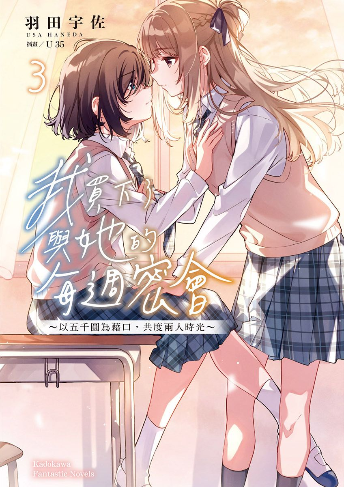 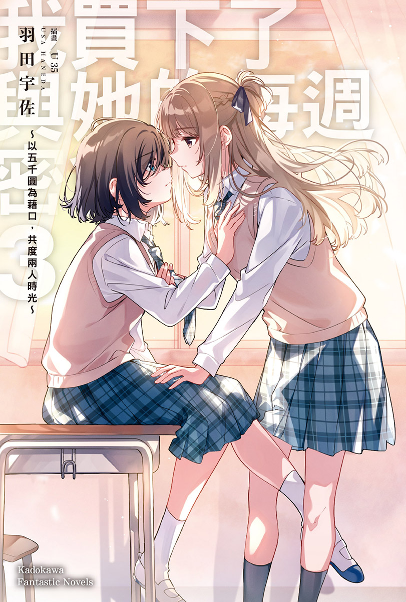 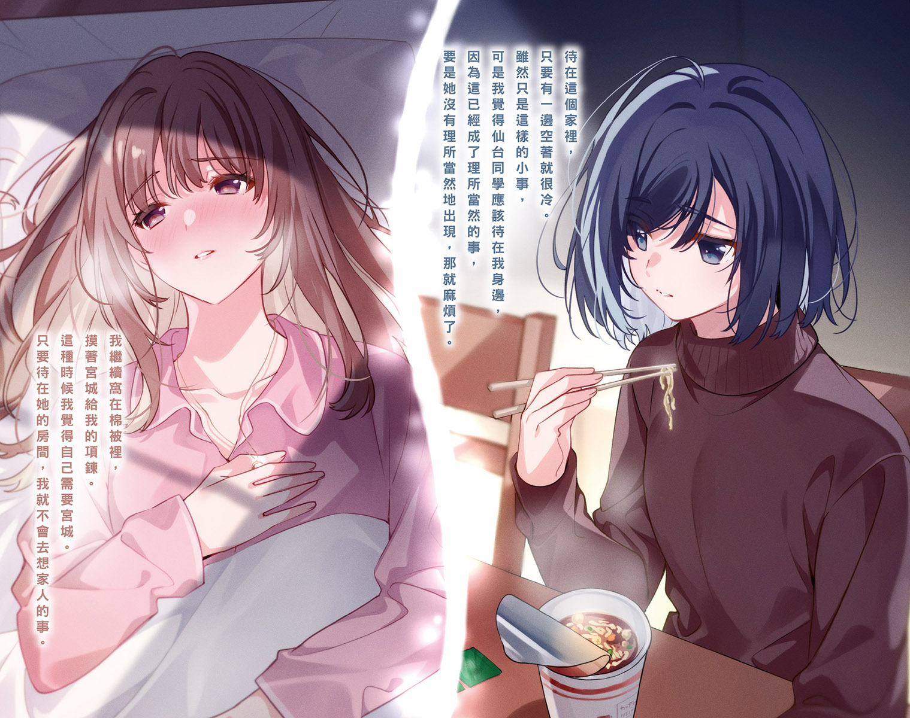 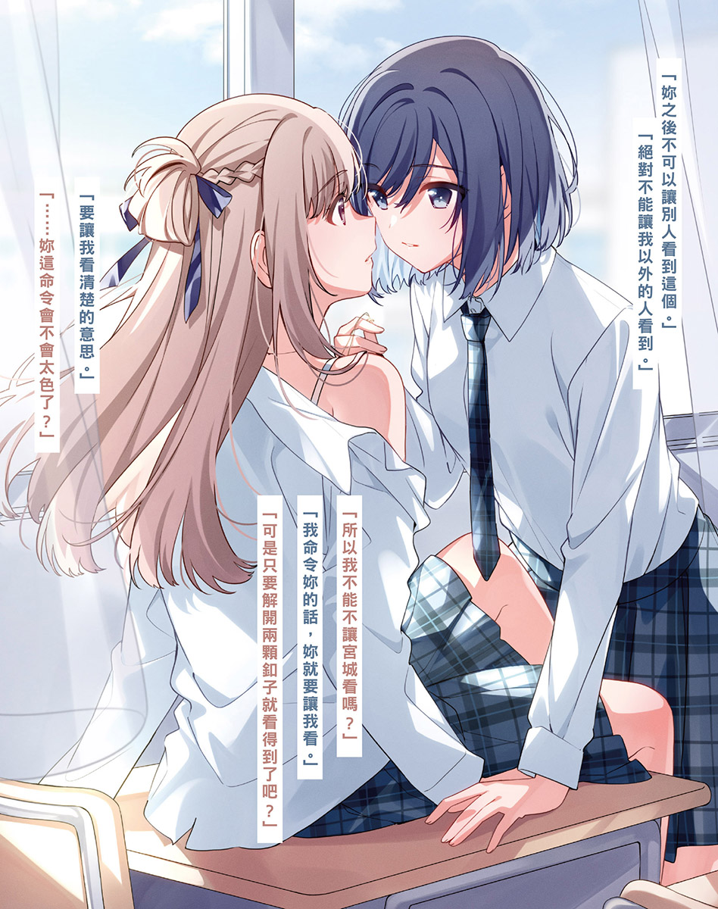 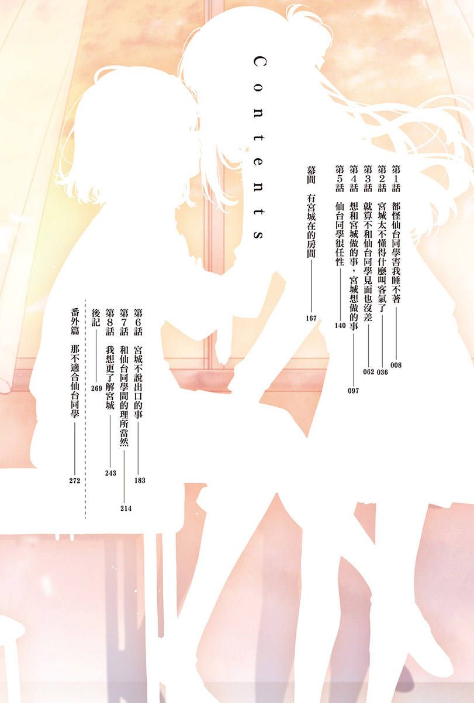CONTENTS
第1話 都怪仙台同學害我睡不著 第2話 宮城太不懂得什麼叫客氣了 第3話 就算不和仙台同學見面也沒差 第4話 想和宮城做的事，宮城想做的事 第5話 仙台同學很任性 幕 間 有宮城在的房間 第6話 宮城不說出口的事 第7話 和仙台同學間的理所當然 第8話 我想更了解宮城 後 記 番外篇 那不適合仙台同學我沒打算要一直盯著看。
只是沒來由地看著而已，沒有別的意思。可是仙台同學沒有解開她制服襯衫上面算來的第二顆釦子。
一如往常的放學後、一如往常的房間。
唯有仙台同學不一樣。
雖然她在學校只會解開襯衫最上面的釦子，不過到我房間裡之後，總是會連第二顆釦子都解開，簡直就像是有這條規則存在。然而今天第二顆釦子依舊扣得好好的。
靜不下心來。
若要追究她沒解開釦子的原因，我想應該得歸咎於我們經歷了一個「做了不同於以往行為的暑假」。
假日不碰面。
定下這條規則的仙台同學自己更改規則，在暑假以「家教」的身分來到我家。
改變的這條規則，創造了我以每週三次的頻率與仙台同學碰面的暑假，甚至創造出除了念書這個目的以外的事情。
跑去仙台同學家、和她玩假扮朋友遊戲、下了太過火的命令。
我們本來應該只是要一起念書而已，卻做了許多平常不會做的事。
「今天的命令是什麼？」
我聽到她從寬得足以讓我們並肩而坐的桌子另一側這麼說，抬眼望向她。
在這之前，來到這房間裡的仙台同學和今天一樣，沒有解開上面數來的第二顆釦子。可是在暑假結束，進入九月後我們第一次碰面的那天，她有解開。
由於仙台同學有時會解開釦子，有時不會解開，我再怎麼介意這件事也毫無意義。之前我也沒說什麼，選擇忽視。然而她持續這麼做，感覺就像還在介意暑假時發生的事，使我始終無法坐到仙台同學身旁。
畢竟在新學期開始後，我們已經像這樣碰面了三次，差不多該讓仙台同學變回平常的樣子了。
「解開釦子。」
我說出命令，得以讓不同於以往的仙台同學，變回一如往常的她。
「釦子？」
「襯衫的釦子。」
「宮城妳這色胚。」
她拋出預料之外的答覆，但我想那是因為語意沒有正確傳達出去。她八成誤會了。
「不是那個意思。」
我開口糾正仙台同學的誤會。
「那個意思是什麼意思？」
「妳不用全部解開。真要說起來，我說解開釦子就以為是要全部解開的人才色吧。」
「我可沒說以為妳要命令我全部解開喔。」
「妳沒說，但心裡是這麼想的吧？」
接著補上一句後，仙台同學這才承認：「是沒錯。」接著又繼續說。
「如果不是全部，我要解開幾顆釦子才行？」
「一顆，解開上面數來的第二顆釦子。」
「……為什麼非得解開不可？」
「仙台同學之前來這裡時，都會解開第二顆釦子啊。」
「妳要是希望我解開，就別一直盯著我。」
「我沒有。」
「我之前來的時候明明就有。」
「我沒有。」
我糾正仙台同學不正確的發言。
我才沒有「一直盯著她」。
之前應該也沒這麼做才對。
「哎，既然妳這麼堅持，要我當作沒有也行。所以只要解開一顆釦子就好了嗎？」
仙台同學看著我，再三確認地說道。
明明就算我說解開兩顆，她也不會解開。
從上面數來的第三顆釦子是會變動的，有可以解開跟不可以解開的時候，不知道今天是哪一種日子？不過我既沒想要她解開，也不覺得她會解開。
「雖然不知道仙台同學想解開幾顆釦子，但沒必要解開到兩顆或三顆。」
「那就好。」
儘管口氣隨意，她依舊沒有要解開釦子。
「這是命令，趕快解開。」
說完後，一直扣著的釦子總算解開了。
「這樣就行了嗎？」
「可以。」
仙台同學和在學校時不同，穿著連從上面算來第二顆釦子都解開的制服襯衫，這才是我平常會在這個房間裡看到的仙台同學，卻覺得還是有哪裡不對勁，看起來跟暑假前不一樣。我不該凝視著她，卻無法別開視線，彷彿在玩大家來找碴的遊戲，直盯著她瞧。
「幹嘛？」
耳邊傳來她狐疑的聲音。
這種時候她的反應倒是一如往常。
找不出到底哪裡不對勁，感覺很不舒服。
「要我再幫妳弄頭髮嗎？」
她對沉默不語的我這麼說，讓人有點在意。
進入九月後，第一次找仙台同學來的那天，她幫我綁了頭髮。
然而那並非我感到不對勁的原因。
我望著仙台同學的頭髮。
仙台同學穿制服時的髮型固定跟今天一樣是公主頭，所以現在的她是「平常的仙台同學」。但暑假期間的她大多沒綁頭髮，導致記憶有些混淆，我想就是這點讓人覺得不對勁。
「不用管我的頭髮。倒是妳把頭髮解開啦。」
「為什麼？」
「沒為什麼，這是命令。而且只是解開而已，很簡單吧。」
仙台同學說著：「是沒錯啦。」同時解開頭髮，或許是因為一直綁著，那頭比我更偏棕色的頭髮解開後也不是直的。雖然和暑假時不同，帶著一點弧度，不過在我心中，當時和現在的印象恰到好處地融合在一塊。
「接下來只要像平常那樣就好。」
我沒有其他想命令仙台同學的事，便把剩下的時間全丟給她。
「像平常那樣是怎樣？」
「隨便說點什麼啊。」
「隨便……所以說什麼都行嗎？」
「都可以。」
「這樣喔。」
仙台同學「嗯～」地思考著。
在她陷入沉思之際，我的意識飄向暑假期間的記憶。
八月三十一日。
暑假最後一天，我們做了跟平常不一樣的事。
我不記得有在心中的月曆上做記號，要自己別忘記那天的事，儘管如此，暑假的最後一天仍殘留在我的記憶中。她明明沒有推倒我，我也不是自己躺下的，背卻靠在地板上，視線範圍內全是仙台同學。她以嘴唇觸碰我，手也碰了我……簡單來說，就是我們差點打破「不上床」的約定。
「那我問妳一個問題。」
仙台同學開朗明快的聲音，把我從暑假的記憶拉回現實。
「宮城要考哪所大學？都到這個時候了，不可能還沒決定吧。」
雖然說都可以，但這實在不是什麼好問題。
聽到這個不太想被人詢問的話題，我下意識地皺起眉頭。
她八成知道我不想聊這個，卻還故意問我。
「是宮城叫我說點什麼的嘛，回答我啦。」
之所以沒來由地難以啟齒，其實是因為志願的大學我是隨便選的。報考的學校倒沒有需要特地隱瞞，況且就算不說，她也遲早會知道。
我一邊後悔自己沒有限定話題範圍，一邊說出本地的大學名稱。
「仙台同學呢？」
我沒有特別想問，然而要是不問，話題就無法延續下去。
「外縣市的大學。」
仙台同學語氣冷淡地表示，接著補上學校名稱。
「妳這話是認真的？」
她所說的那所學校，可不是腦筋好一點就能考上的。據我所知，這所高中至今從未有人考上那所大學，即使是仙台同學想必也考不上。
「騙妳的。雖然以那裡為目標，但我絕對考不上嘛。」
她燦爛地笑著說。
「原來妳以那裡為目標啊……」
「我也知道考不上就是了。」
本以為她在說笑，然而從她沒有否定我的話來看，似乎真的打算去考。我不知道她為什麼會以那種大學為目標，不過畢竟她很認真地補習，現在依然希望自己能考上也說不定。
「這件事情我只有告訴宮城，不可以跟其他人說喔。」
「我不會說的。再說我們約好不能把這裡的事告訴其他人了吧？」
「說得也是。」
這還真是讓人困擾。
只屬於我們兩人的祕密早就夠多了，不需要更多。祕密越多便越沉重，讓人難以動彈，會有種自己無法離開仙台同學眼前，哪裡都去不了的感覺。
「那實際上妳要考哪間？」
意圖稀釋無意間聽到的祕密，我姑且一問，結果仙台同學又說了一所外縣市的大學，是她應該考得上的大學，看來是實話沒錯。
即使如此──
雖說考量到她的成績根本理所當然，我早就設想過大概會是這樣了，然而從本人口中聽到她要去念外縣市的大學，我的心情依舊不太好。
我很在意與仙台同學共享新的祕密，不過眼下她實際要報考的大學更占據了腦海，彷彿一併削去了心中的一隅，讓人莫名煩悶。
「喂，宮城，跟我考同一所大學嘛。」
她若無其事地推了個難題給我。以我的成績來說，那並非能輕鬆考上的大學。
「不要隨便說這種話啦，我怎麼可能考得上？」
「沒那回事。」
「我不想特地報考會落榜的學校。」
「不去考怎麼知道會不會落榜？就算低空飛過也行啊。再說妳最近有認真念書，感覺再努力一點就能考上了吧。」
「上同一所大學又沒意義。」
「或許是這樣沒錯，可是能考上的話，上好一點的大學比較好吧。」
「我絕對考不上。」
我從未想過要特地努力考上好大學。
況且和仙台同學共度的時光只到畢業典禮那天。
就算上同一所大學也沒用。
她應該同樣很清楚這點才對。
而她要到外縣市，對我來說也無關緊要。
沒錯，我完全、絲毫不在意。
「別再提這件事了。下一個命令──」
儘管沒什麼想下的命令，但我不想一直延續這個聊未來出路的無聊話題，只好想想有什麼現在就能做的命令。
「妳還有命令要下喔？」
「對，聽我的話。」
「悉聽尊便。」
仙台同學說著，卻毫不掩飾臉上那還沒講夠的表情。
我開始思考。
命令、命令……無關緊要的命令。
雖然想著有什麼可以打發時間的命令，我卻想不到，儘管如此，也不能都不說話。要是不趕快說點什麼，仙台同學又會開始說些多餘的話了。
我闔上課本，自眼前的仙台同學身上瞥開視線，環顧房內──床、衣櫃、五斗櫃……隨著書架映入眼簾，我總算決定好命令。
「朗讀一本書。」
「可以啊，要朗讀哪一本？」
「內容感覺很枯燥的書。」
「不是內容感覺很有趣的？」
「枯燥的書比較助眠。」
「原來如此。」
意識到我要她以朗讀代替搖籃曲，仙台同學站起身來，走近書架前，毫不猶豫地拿了一本書過來，坐到床邊。
「這本行嗎？」
記得她拿來的那本小說是因為漫畫的主角說喜歡，我才會買回來的，然而感覺不太有趣，我沒有看完。
「就那本。」
我坐上床，命令仙台同學。
「知道了。」
纖細的手指翻開一直沉睡在書架上的小說。
從有著枕頭的這邊，可以看見側坐在地上的仙台同學側臉。
翻動書頁的聲音響起，接著傳來嗓音，她正朗讀著我不覺得有趣的故事。
過去我曾下過無數次這樣的命令，仙台同學也和之前一樣流暢地朗讀著小說，不大也不小的音量，對這個房間來說剛剛好，柔和的嗓音相較於我在教室聽到的更悅耳，總覺得相當好聽。
解開兩顆襯衫釦子，朗讀著小說的仙台同學，跟暑假前沒有任何不同。
畢竟不知道她朗讀的小說到底哪裡有趣，照理說我應該馬上就會想躺下，產生睡意，今天卻不像平常那樣想睡，甚至不想躺下來。
不是仙台同學的錯。
問題大概出在我身上。
幫我綁頭髮的那天，我曾告訴她在這個房間裡和她共度的時光，到畢業典禮那天就會告一段落。
因此一旦畢業，就聽不到這個聲音了。
這是我自己決定的。然而仙台同學說出「外縣市的大學」，使她畢業後會前往遠方這點成了明確的事實，導致我突然在意起這種小事。即使得知以後就算想在路上巧遇她都不可能，我的大腦卻無法理解。
「妳不睡嗎？」
無聊的故事突然中斷，轉而講起一直坐在床上，不肯躺下的我。
「我會睡的。妳繼續吧。」
就連睡魔的氣息都感覺不到。我一在床上躺下，仙台同學的手便伸過來，毫不猶豫地摸了摸我的頭髮。我推開她的手。
「妳繼續朗讀啦。」
她沒有回話，但中斷的故事再度傳入耳中。
通透的嗓音搔著我的耳朵。
因為不睏，我沒閉上眼睛，望著仙台同學。
頭髮遮住她姣好的臉龐，十分礙事。
早知道就別叫她解開頭髮了。
我湊向坐在地板上的仙台同學，她的聲音變得更近了些。
視線定在她解開的釦子上。
現在雖然只能稍微看見鎖骨，但我曾看過那之下的部分。
比現在更熱的暑假。
我命令仙台同學脫衣服，她乖乖地脫了。
儘管那是仙台同學要我下的命令，然而往後不會再發生那種事，我不再有機會看見她的身體。
無所謂。
不管是要上不同的大學，還是不會再看到她的身體，都與我無關。
大學那種地方，感覺比她正在朗讀的故事還要無聊。
我將手伸向仙台同學，拉了拉她的頭髮。
「妳在看哪裡呀？」
本以為她會開口抱怨喊痛，她卻說出不一樣的話。
「因為仙台同學在那裡，我才會看著妳。」
我講出不算精確的事實，聽見她狐疑地說了句：「是喔？」但她沒再多說什麼，把小說放在床上後轉向我，輕輕嘆了口氣，接著拉扯我的瀏海。
「閉上眼睛啦，妳不是要睡覺嗎？」
她的手遮住我的眼睛，原本明亮的房間暗了下來，變得什麼都看不見。我抓住並拉開她蓋在我眼睛上的手。
仙台同學就在視線前方。
明明沒打算這麼做，視線卻對上她的眼睛。
──好近。
彼此之間的距離比剛才縮得更近了。
我連忙鬆開抓著她的手，結果碰到放在床上的小說，書「啪」一聲掉在地上，她卻沒打算撿起來。
「仙台同學，離我遠一點啦。」
「是宮城先靠過來的吧？」
先靠近的人是我。
我承認。
然而我不記得自己有這麼靠近她，仙台同學不知為何觀察著我。
「即使如此，仙台同學也有靠過來吧？」
「有嗎？」
「有。而且妳朗讀也不用離我這麼近吧？」
我這麼說著，輕輕推了她的肩膀，仙台同學卻不聽我的話。
她的手摸上我的耳垂。
輕柔地撫摸，又捏著拉了拉。
指尖滑過我的耳後，癢得不得了。
仙台同學的手緩緩地繼續觸碰我，宛如要喚回暑假的記憶。我敲打她的手臂。
「抱歉……」
仙台同學瞬間露出驚訝的表情，旋即道了歉，以W字坐姿坐到地上。
「撿起來。」
我撐起身體，指著掉下去的書，仙台同學於是聽話地拿起那本書，迅速翻動書頁，停在理應寫著故事後續的那頁。
「我繼續朗讀吧。」
她以不帶起伏的語調說。
「不用朗讀了。」
「妳不睡嗎？」
「不睡。」
正確來說是「睡不著」，不過沒必要告訴她正確的內容。我從仙台同學手中抽走那本書，放到枕頭上。儘管尚未寫完的作業就這樣被丟著不管，但我沒有下床，手上空空如也的仙台同學也沒回去桌前。
由於命令做到一半就結束了，房裡變得異常安靜，沉默感讓人不太舒服，無法靜靜地坐著。我忍不住想做點什麼，於是用指尖敲著書。
房裡只聽得到微弱的「咚、咚」聲。
仙台同學往床舖這邊靠來，背倚著床。
從床上可以望見她平常看不見的後頸。正想著只要伸手就能碰到之際，仙台同學像是靈光一閃，說了句：「對了──」之後繼續說道。
「宮城，你們班決定好校慶要做什麼了嗎？」
她的口中突然冒出下個月學校預定舉辦的活動。我跟上她的話題。
「還沒。仙台同學你們班呢？」
「我們班的人都沒什麼幹勁，應該會以成果展之類的形式混過去吧。」
「真好。」
突然開始的對話遠比彼此沉默不語來得好，話題就這樣延續下去。
既然可以聊這種安穩的話題，真希望她能早點這麼做，比煩人的考試話題好多了。即使氣氛依舊有些尷尬，卻相對接近我們平常的感覺。
「宮城你們班不是這樣嗎？」
「班上的大家都很積極，說這是高中最後一次的校慶，想做些能留下回憶的事。」
我只覺得有夠麻煩。
說是大家，實際上是一半的同學興奮地討論著要做些什麼，剩下的人雖然覺得隨便做做就行了，然而那些在班上特別招搖的人成了主導活動走向的中心人物，導致其他人都不敢開口抱怨。
「大家都很積極……宮城也是嗎？」
「還好，我覺得隨便做做就行了。」
「我們班很輕鬆喔。」
仙台同學轉頭笑著說。
要是我們同班就好了──
我差點對著她溫柔的笑容這麼說，趕緊閉上嘴。
「差不多該繼續寫作業了吧？」
仙台同學往桌上看了一眼。
「我不想寫。」
「要我繼續朗讀嗎？」
「……還是寫作業好了。」
「那妳過來這邊。」
「不用妳說我也會過去。」
爬下床的我猶豫了一陣後，坐到仙台同學對面。
◇◇◇
要上大學──
仙台同學暑假前就曾這麼說過，即使沒問，我也覺得她想上的八成是外縣市的大學。
不過是從她口中聽到早就預料到的事。
就只是這樣。
我卻依舊受到了一點衝擊。
正確來說是，明明聽到了一如預期的事，我卻滿腦子都想著它，沒想到自己會有這樣的反應。
仙台同學之所以會想到外縣市，從我在暑假時造訪她家看到的狀況便推測得出來。
想離家。
我想大概是這樣吧。
假設這個理由沒錯，我便無法改變她的志願。
不對。
不是的。
我倒不是想改變她的志願，再說即使改變也沒意義，高中畢業後，我們之間的關係就結束了。追根究柢，她的志願該由她自己決定，並非我該插嘴的事。
這些事我心知肚明，卻在仙台同學回去之後動彈不得，始終坐在她剛剛坐著的地方。
我們沒有一起吃晚餐，因此我還沒吃飯。
可是我不餓。
我慢吞吞地站起身，拿著換洗衣物走向浴室。要是悠哉地泡在浴缸裡，感覺會一直想些無謂的事，我於是沖了個澡，躺到床上。
照這樣下去，我會考上作為志願的本地大學，成績沒辦法跟仙台同學上同一所大學，但我本來就沒把考上好大學當成目標，所以沒差。
說起來，根本就是仙台同學管我管太多了。
明明沒試著了解我真正的成績，卻隨口說出要我跟她上同一所大學這種話。雖然要是提出我想念外縣市的大學，爸爸多半會同意，然而以現在的成績來看，我絕不可能跟仙台同學上同一所大學。縱使將我們暑假時一起念書這件事也考慮進去，想必依舊有困難。一旦看到下個月的期中考成績，仙台同學也會說我不可能考上吧。
報考根本考不上的大學不過是徒勞。
「……為什麼我要認真思考這種事啊？」
我一個翻身，關上燈。
爸爸今天也沒有回來。
想到不只是這個房間，這個家裡所有的燈都關上了，我就有些不安。
「沒事的。」
一點都不恐怖。
我在心裡喃喃自語，閉上眼睛。
或許是因為比平常早上床吧，我一點都不睏，卻依舊緊緊閉著眼。
一隻羊、兩隻羊……
我試著仰仗老派的手段，開始數羊，可是睡魔依然沒有襲來。結果我始終沒能深深睡去，就這樣半夢半醒地迎接早晨，無可奈何地前往學校。
就算走進教室，睡眠不足的腦袋還是渾渾噩噩的。
開始上課後，不管過了一小時或兩小時，腦袋依然茫茫然，彷彿蒙上一層霧氣，記不得老師說了些什麼。待我回過神來，已是第三節課的下課時間，與亞美一起過來找我的舞香出聲叫我。
「志緒理，要走嘍。」
「咦？」
「下一堂課要去視聽教室啊。」
舞香這麼說完後，亞美便接著說：「快點、快點。」
「啊……嗯。」
我連忙抽出課本和筆記本，站起身來，還沒空確認有沒有忘記帶什麼東西，舞香就說：「好了，動作快。」一把抓住我的手臂。我和她們一同離開教室，緩緩邁步在走廊上。
我不會早睡早起，卻幾乎沒發生過這種因為睡不著導致睡眠不足，恍神得虛度整個上午的情況。
之所以這麼提不起精神，全都要怪仙台同學。
都是因為她說出宛如要決定別人未來志願的話，才會害我睏得沒辦法好好上課。
實在讓人生氣。
我有點遷怒地大步往前走，走廊上傳出「噠」的腳步聲，讓我迷茫的腦袋稍微清醒了些。又用力地踏出一步後，耳邊傳來舞香的聲音。
「志緒理，前面、前面。」
「前面？」
「這邊啦！」
舞香拉了我的手臂。
我的身體微微往旁傾斜，原本集中在腳上的注意力轉向前方。
就這樣和仙台同學對上眼。
──咦？仙台同學？
為什麼？
不對，這沒什麼好奇怪的。
我在學校，仙台同學出現在走廊上當然很合理，只是以前從未發生過在發現之際，距離仙台同學已經這麼近的這種事。理所當然和並非理所當然的事同時發生，使我嚇了一跳，撞上仙台同學的肩膀。
「哇！」
彼此的肩膀不是從旁輕輕擦過，而是直接撞上，所以很痛。由於被舞香拉住，我沒辦法好好支撐自己而差點跌倒，頓時驚呼出聲。
「志緒理，沒事吧？」
舞香撐著搖搖晃晃的我問道。我看向她。
「我沒事。」
重新站穩的我回答她。
將視線從舞香移回仙台同學身上後，茨木同學與她的朋友也一併進入視野範圍內。
「葉月，沒事吧？」
「嗯，我沒事。」
一如剛才舞香跟我的對話，茨木同學也對仙台同學說出類似的話，我的目光無法從她身上移開。
──仙台同學旁邊是我的位置。
這樣的台詞浮現在腦海中，我試圖揮去這句話，卻聽見熟悉的聲音說：「對不起喔。」
「妳沒事吧？」
仙台同學以在我房間裡鮮少出現的親切語氣這麼說，緊盯著我。
我不擅長應付這樣的她。
只得從她身上瞥開視線。
「……沒事，我才該道歉，剛剛有點恍神。」
若要說起這究竟是我還是仙台同學的錯，責任一定出在我身上。
我面朝前方，卻沒有看路。
也沒注意到朋友出聲提醒我快撞到人了。
儘管追溯理由的話，追根究底仍得歸咎於仙台同學，但我不能在這種場合下說。
「妳沒事吧？」
我莫名叫不出「仙台同學」，對她說出當下早已出現過好幾次的話。
「沒事。我幫妳撿東西喔。」
她這麼說著，撿起掉在走廊上的課本。看到那本課本，我這才終於意識到自己手上沒拿著課本和筆記本。
「對不起，我自己撿就好。」
我蹲下來拾起筆記本，接著伸手要拿鉛筆盒，仙台同學卻抓住我的手腕。
「我幫妳。」
她語氣溫和地說著。
不肯放開抓住我手腕的手。
用力得讓人覺得痛。
「我自己撿就好。」
假如這裡是我房間，只要大喊「放開我」就好了，然而這裡是學校，我選擇相對和緩的說法，要她放開我的手。
「啊，抱歉……」
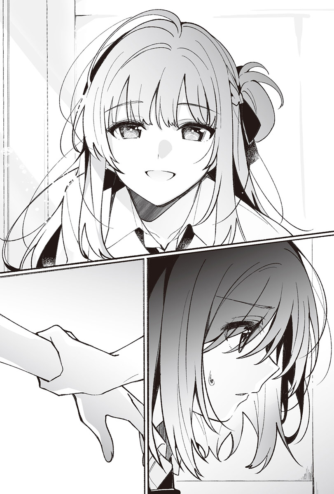用力抓著我手腕的手鬆開了。
「這就是全部了嗎？」
仙台同學一邊將撿起來的課本遞給我，一邊問。
「嗯，只有這些。謝謝妳。」
「不客氣。」
仙台同學粲然一笑，露出猶如精美娃娃般的笑容後邁步離去，隨即消失在眼前，走廊上只聽得見茨木同學的說話聲。
我拍了拍課本和筆記本，也順便拍了拍鉛筆盒，對舞香和亞美說：「走吧。」
「──妳對仙台同學做了什麼嗎？」
舞香狐疑地望著我。
「什麼是指？」
「她不是猛盯著妳看，還抓住妳的手？難道不是因為妳做了什麼嗎？」
「應該是覺得很痛才會那樣吧？畢竟我剛剛撞得滿大力的。」
我不覺得她有那樣盯著我。
然而方才被她抓著的手腕很痛。
上頭沒有留下痕跡。
不知道仙台同學為什麼會做出那種事。
我看著剛才被抓住的手腕。
跟我撞上仙台同學之前沒有任何不同。
我胡思亂想著──要是有留下什麼不會消失的東西就好了──嘆了口氣。
感覺這是我第一次在學校和宮城說話。
之前雖然曾把宮城叫出來，在音樂準備室和她說過話，不過那比較接近待在她房間裡的狀況。然而剛剛不一樣，我們首度在朋友面前有了段像樣的對話。
這其實沒什麼大不了的，但我認為是件大事，不禁覺得自己不太正常；明明不需要回頭，我卻想要回頭。
「葉月，妳好像心不在焉耶，真的沒事嗎？」
聽到羽美奈意外大聲的詢問，我望向身旁。
「抱歉，我在想些事情。」
「等等又會撞到人喔。」
我對輕鬆大笑的羽美奈說了句：「確實。」繼續邁步在走廊上。
即使豎耳傾聽，也聽不到宮城的聲音。
傳入耳中的只有羽美奈和麻理子的聲音。
「剛才那女生，記得……是叫宮城？妳跟她感情很好嗎？」
羽美奈看似回想起來地說。
「是宮城沒錯，不過我跟她感情沒特別好喔。」
「妳們暑假的時候不是走在一起嗎？」
「妳說跟誰？」
「宮城啊。」
「妳認錯人了吧？」
我很習慣說謊，所以這話說得很順。
「我不覺得自己會認錯葉月耶。」
羽美奈或許相當有自信，繼續咬著這個話題不放。
「當時是在奇怪的地方看到妳們的，我記得很清楚。」
這麼說著的她隨後講出的車站名，正是我和宮城暑假時去過，兩人為了玩假扮朋友遊戲而去看電影的地方，因此她看到的毫無疑問是我和宮城，不是認錯人。
「這麼說來──」
在我們正好走到教室前面時，為了修正方才的謊言，我用回溯記憶般的語氣緩緩說道。
「我親戚家在那附近，所以我曾去過那裡一趟，當時碰巧遇到了宮城。」
「真難得，葉月也會忘記發生過的事啊。」
一直默默聽我們對話的麻理子看著我說，語氣開朗而明快。
「我也是人嘛，還是會忘記一些事情的。」
我笑著走進教室，接著傳來羽美奈不高興的聲音。
「葉月跟宮城的感情到底好不好是不重要啦，但我懷疑妳就是因為她，暑假才會那麼難約。」
羽美奈坐到位子上，以懷恨在心的眼神望向我。我沒走向自己的位子，就這樣繼續跟她聊著。
「我不是說過暑假得去上考前衝刺班，所以不太能和妳們碰面嗎？是說妳為什麼會去那裡啊？」
「跟男朋友約會。」
「跑到那種地方？」
「我們聊到偶爾想去點不一樣的地方啊。那附近不是沒有我們學校的學生嗎？所以才會特地跑遠一點。」
起了反效果呀……
明明特地和宮城挑了個照理說不會碰到熟人的地方。
沒想到羽美奈也抱著跟我們一樣的想法跑到那裡。
「你們感情還真好，好羨慕喔。」
笑了笑的我接續話題。大概是「好羨慕喔」這句話說對了吧，羽美奈的心情稍微轉好。雖然她似乎不打算深究我和宮城的事，我卻不希望她想起話題的開端，依然面帶微笑地跟她聊著男朋友的話題。而她或許已經不在意宮城了，開始說起和男朋友那天去了哪裡，吃了些什麼。
我倒沒想過要嫉妒別人的幸福，但對這些事實在提不起什麼興趣，左耳進右耳出地聽著羽美奈的說話聲。
垂下視線的我看著自己的手。
上頭理所當然地沒有宮城的痕跡。
「剛剛撞到的時候受傷了嗎？」
也許是覺得我一直盯著手很奇怪吧，麻理子探頭過來觀察我。
「沒有，沒事。」
「真的嗎？」
「妳看，沒事吧？」
我揮了揮手給她看。
「及格，這樣和男朋友約會時就能牽手了。」
「妳又馬上就說這種話，我沒對象喔。」
「我知道。妳趕快交一個嘛。」
「即使交了男朋友，我可能也不會跟對方牽手吧。」
「為什麼？牽一下啊。」
麻理子一臉疑惑。
「會這麼想跟對方牽手嗎？」
並未特別針對羽美奈或麻理子，我只是拋出這個問題。
這個問題沒什麼特別的含意，我也不覺得答案會帶來幫助。雖然宮城浮現在我的腦海中，卻並非我的交往對象。我從未想過要跟她牽手走在路上，然而只要她在我身邊，我就會很在意。
「一般來說都會牽手吧。」
羽美奈這麼表示，麻理子也接著說：「一旦約會的話就會牽手吧。」
「我知道了，葉月想要純潔到連手都不牽的交往吧？」
麻理子促狹地說著，朝我伸出手。我握住她的手。
她與宮城的手沒什麼差別。
溫暖又柔軟。
我想羽美奈的手也差不多吧。
可是宮城顯然和她們不同。
我沒特別想跟她牽手，卻想碰她，方才在走廊上撞到她之際也是，回過神來時，我才發現自己抓著她的手腕。這份感情並不像麻理子說的那麼純潔。
「怎麼了？難道妳喜歡上誰了嗎？」
羽美奈興味盎然地望著我。
這下麻煩了。
看來就算我說沒有，她也會說：「至少有在意的對象吧？」繼續追問下去。
「是誰？是誰？」
麻理子愉快的嗓音也傳入耳中。我思考著有什麼答案能搪塞過去，上課鐘聲隨即響了。
「上課嘍。」
鐘聲在絕佳的時機響起，猶如正義的夥伴般拯救我。才剛回到座位上，老師就走進了教室。
這堂課開始了，教室裡響起老師的說話聲。
我將黑板上的字抄到筆記本上。
右手在純白紙張的空白處寫下了「宮城」，接著又擦掉。
即使待在學校，也想和她說話。
腦中響起自己的聲音，彷彿要將老師的說話聲給蓋過去。
……我在想什麼蠢事啊？
在學校和宮城說話毫無意義可言。說起來就算到了現在，彼此待在她房裡時陷入沉默的機會依然比較多。
我把這些雜念趕出腦海，將課本翻到下一頁，專注於填滿筆記本後，不長也不短、一如往常的上課時間便結束了。我正打算起身和羽美奈她們一起吃午餐，卻聽見通知收到訊息的聲音，於是從書包裡拿出手機。
重新坐回位子上的我看向手機螢幕，收到的是宮城一如往常會傳來的訊息，填滿我放學後的行程。無關乎昨天才找我，她今天再度要我過去，我對此卻毫不訝異。
我在走廊上抓住她的手腕。
她應該是想追究這件事吧？
問題在於我無法解釋自己在大家面前抓住她手腕的原因。儘管可以說是因為我想碰她，但宮城想必不會接受這個回答，八成會反問我為何想碰她。
我不想把宮城還給她的朋友。
我想觸碰她的心情深處蘊藏著這樣的感情──怎麼可能說出口？雖然這份感情論大小不過就跟金平糖差不多，卻非我對宮城該有的感情。
傳了訊息給宮城，答應放學後的約定後，我從座位上站起來。
一想到她會追問我在走廊上發生的事就頭痛。
真麻煩。
然而見宮城這件事本身，倒是不會讓人感到麻煩。
◇◇◇
轉眼間到了放學後──
我向羽美奈她們道別，走在熟悉的路上，不疾不徐地抵達宮城家。
走進房間的我解開襯衫上面數來的第二顆釦子。
房裡的氣氛依舊有點怪，但我已經習慣了。
我收下五千圓鈔票，背靠著床坐下後，宮城拿來裝有麥茶和汽水的玻璃杯放在桌上，接著猶豫了一下，坐到我旁邊。儘管距離相比之前有點遠，但暑假結束後首度有人在的身旁，讓我鬆了口氣。雖然無法讓一切恢復如昔，不過逐漸接近原樣了。當然也有些不太順利的地方，然而這也沒辦法。就算只有表面上也無所謂，一旦表現得彷彿暑假之前，心情便會隨之轉變。
宮城什麼都沒說，在桌上攤開課本和講義。我不知道她到底有沒有心念書，但她乖乖地寫著講義。
我也翻開課本和筆記本，開始寫作業。
昨天我對宮城說的那句「跟我考同一所大學啦」其實相當不負責任。她表示不可能考上之際，我雖然說沒那回事，卻也覺得照她現在這樣很難考上。
進入暑假後，我們曾一起念書。
宮城開口「這裡我不懂」要我教她的次數確實減少了，但我依舊不認為她能達到合格的標準。
然而如果從現在開始認真念書，說不定考得上，這需要本人拿出幹勁才行。既然叫宮城報考同一所大學，我自然打算指導她功課，卻沒辦法強迫她。
就算考上同一所大學，也不代表會發生什麼。
宮城早已決定好結束這段關係的日子，我也同意。
只是沒來由地覺得要是她跟我念同一所大學，好像會很開心。
「仙台同學。」
耳邊傳來宮城的聲音，我抬起頭。
「有哪裡不懂嗎？」
「不是。我想問妳今天那是怎樣？」
果然……
宮城之所以會連續兩天叫我來──
雖然早就預料到原因，但我仍裝出毫不明白的模樣。
「那是怎樣是指？」
「妳不是在走廊上抓住我的手腕嗎？」
「我只是想幫妳把東西撿起來。」
「只是撿東西的話不用抓住我的手腕吧？」
「不過是稍微碰到妳的手而已呀。」
「我覺得那不只是碰到。」
有夠麻煩的。
追究這種不想說出口的事，只是徒增我困擾。
況且要是照實說，宮城八成也會感到困擾。
為了彼此著想，不想把宮城還給她朋友這種事還是別說出口比較好。
「……妳希望我回答什麼？我會說出宮城希望聽到的答案，妳說吧。」
我提出得以和平解決問題的方案。
倘若她有希望我說的話，我就照著說，好結束這個話題。畢竟就算繼續談下去，也不會得出雙方都滿意的結論，怎樣都行，最好趕快脫離這個話題。然而我也知道宮城不會滿意這個回答。
「我才不想要妳那樣做。」
「那妳想要怎樣？」
「告訴我妳抓住我的原因。」
「我只是因為想碰而碰了妳。」
我說出抓住她的一部分原因。
「什麼意思？認真回答我啦。」
「我回答啦。」
「妳為什麼想碰我？」
這種事情還是別問比較好，才能度過安穩的時光。
「妳明知我不會回答，還故意問我嗎？」
為了打斷她接連拋出的問題，我提出反問，然而她卻沒有回答。莫可奈何的我只好拋下一句──
「有時即使沒有理由，也會想碰一個人吧。」
這麼說著的我把手伸向宮城。
雖然比之前坐得離我更遠一點，我仍馬上碰到坐在身旁的宮城，撫上她的臉頰，掌心貼了上去。儘管她不悅地皺起臉，我卻依舊沒有抽開手。自肌膚相觸的部分傳來的體溫感覺相當舒適，我的手滑下臉頰，摸著她的脖子。
總覺得自己現在對她懷抱的感情很不純潔。
「想碰別人這種事怎麼可能沒理由？」
「所以宮城碰我時想必是有什麼理由的吧？」
「這個──」
宮城一時語塞，沒繼續說下去，反倒拉開我正摸著她脖子的手。
「真搞不懂仙台同學，不管在學校還是在這裡，妳都只會做些奇怪的事。」
壓低聲音這麼說的她垂下視線。
「我也搞不懂呀──宮城，趕快下今天的命令啦。」
再這樣下去，我沒自信能維持若無其事的樣子。我很清楚，自己在宮城面前用來保持理性的那根螺絲根本派不上用場。
縱使表面上恢復如昔，我們依舊沒能回復原有的關係。但凡受到一點刺激，刻意維持的表面便會輕易瓦解。
比起就這樣順勢發生些什麼，讓她命令我比較好。反正她多半只會下一些無關緊要的命令，狀況應該會比現在理想。
「那讓我幫妳打耳洞。」
沒抬起視線的她說出「打耳洞」這個詞彙，實在太出乎預料，我忍不住反問。
「打耳洞？」
「對，我想在仙台同學的耳朵上打耳洞。」
莫非是想報復昨天她叫我朗讀小說，我卻摸了她耳朵的那件事？她抬起頭，伸手拉扯我的耳垂。
「死都不要。」
我斬釘截鐵地對她說。
耳洞這種事後會持續留在身上的存在太令人困擾了。
宮城三不五時就想在我身上留下痕跡，實際上也的確留下了痕跡。至今為止我之所以容許她這麼做，是因為那些痕跡馬上就會消失。
可是打耳洞不一樣。
我沒辦法像之前那樣接受這命令。
「為什麼不行？」
「因為違反校規。」
她沒打算要客氣的手持續揉捏著我的耳垂。我抓住宮城的手臂，順勢用力拉開她的手，她這才老實地鬆開捏著耳垂的手指，語氣卻很不死心。
「仙台同學的裙子那麼短，也染了頭髮，早就違反校規啦。」
「這種程度還在學校容許的範圍內吧？」
「仙台同學總是這樣。」
「總是這樣是指？」
「擅自訂出規則，還一副理所當然的樣子。」
「訂規則這種事沒關係吧？不管裙子還是頭髮，我都維持在不會被老師罵的程度，既然沒被罵，就表示不算違反校規吧。」
校規沒那麼嚴格。雖然有明文規定，但運用這些校規的老師在管理學生之際，不會像字面上寫的那麼確實，只要大致上沒違反就不會挨罵，老師也會認為我有遵守校規。我只是訂出要在那個「大致上的範圍內」行動的規則，依循行事罷了。
「妳這樣很狡猾。」
「覺得狡猾的話，宮城也這樣做不就好了？裙子再短一點會比較可愛喔。」
我抓住並拉扯那要長不短的裙子，打算幫她在不會被老師罵的範圍內弄短一點，她卻拍了我的手背。
「不用，維持這長度就好。比起這件事，就算之後也行，讓我幫妳打耳洞啦。」
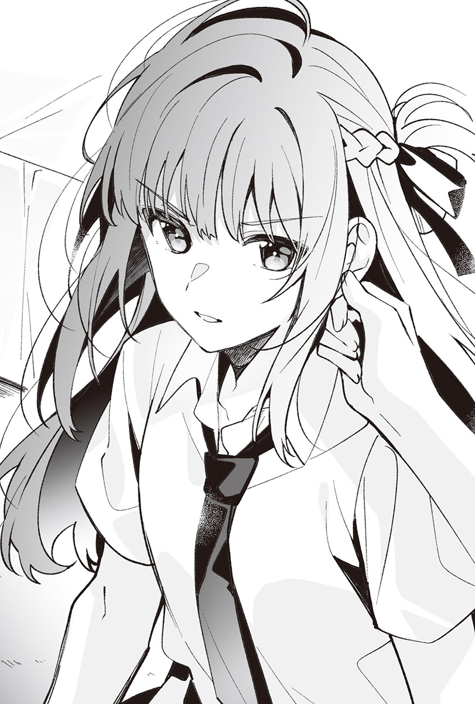「下其他命令啦，這違反規則了。」
我乾脆地如此表示，可是宮城依舊一臉不肯死心的樣子。
一言以蔽之便是無法接受。
她心裡恐怕是這麼想的吧。
「我絕不會讓妳幫我打耳洞。」
保險起見，我再度對看來相當堅持要命令我讓她打耳洞的宮城這麼聲明。無論有多堅持，我的回答都一樣，即使願意聽從她大多數的命令，還是有不能接受的事。
「打耳洞哪裡違反規則了？」
「留下會一直留在身體上的傷痕違反規則吧？跟暴力差不多。是說妳想要我戴什麼耳環？讓我看看啦。」
我不打算接受宮城的命令，卻很在意她準備了怎樣的耳環。但她沒有拿出耳環，比剛才更小聲地說。
「還沒準備，妳願意讓我打耳洞的話我就去買。」
「不用買。真搞不懂妳為什麼想在我的耳朵上打耳洞。」
「……我只是想實驗老師會不會生氣，總覺得仙台同學偶爾也該被老師唸一下。」
宮城嘀嘀咕咕地說出不知是真是假的理由，聽起來實在不怎麼有趣，讓人非得抱怨個兩句不可。
「不要拿別人做實驗啦，想個更像樣的理由好嗎？」
「有像樣的理由就行了嗎？」
「不行。」
搞不清楚宮城的真心話究竟為何，可是幫我打耳洞這個命令實在太沉重了。
我不需要即使未來上了不同大學，不會再見到她後，依舊會殘留在身上的東西。唯獨我將兩人共度的時間刻劃在身上這種事，實在敬謝不敏。
「那妳先不要動。」
宮城的話讓我湧現不好的預感。
「妳想做什麼？」
她沒回話。
相對地把手伸了過來。
卻沒觸碰我的耳朵，反倒落在肩膀上。
她總想在我身上留下痕跡，是故意的嗎？
明明就在眼前，我卻摸不透她在想些什麼。我們的對話量雖然比剛來這房間時多，但也只是變多了，我依舊不了解宮城這個人，她隱瞞自己真正的想法，今天也是，讓人無從判斷她毫無準備卻想幫我打耳洞這件事，究竟是一時衝動，還是總算說出口的念頭。
單單憑藉不著邊際的對話，要貼近彼此的心情可說極為困難，使身體的距離化為零卻很容易。宮城的唇吻上我的耳朵。
黑髮傳來洗髮精溫和的香氣。
身體自然地接受了曾觸碰過我好幾次的嘴唇。儘管開始覺得宮城比誰都接近我是理所當然的，我仍保有認為自己不該接受這件事的理性。
「等等，宮城。」
我推了她的肩膀。
她的體溫離開我們相觸之處，耳邊傳來她的聲音。
「既然仙台同學不讓我打耳洞，就用這個來代替吧。」
太過靠近的聲音，讓我推著她肩膀的手一震。
她呼出的氣息撫過耳朵，感覺很癢。
「乖乖別動啦，我又不會弄傷妳，這命令很簡單吧？」
隨著宛如酥脆零食般輕盈的嗓音，某個濕潤的東西撫上我的耳朵。
我馬上就知道那是她的舌頭。
貼上來的舌頭溫溫熱熱的，一動起來就令人起雞皮疙瘩，坐立難安。以前也發生過這種事，總覺得該遵從理性，然而與之相反，心裡同樣有個聲音試圖說服自己，認為這種程度的命令沒什麼好拒絕的。
感情在兩個選項之間搖擺不定。
溫熱的舌尖讓我的理性敗給了惰性。遵照命令乖乖不動後，有什麼堅硬的東西碰上我的耳垂。
大概是牙齒吧。這種時候絕對沒好事。
「宮城，放開我。」
過去的經驗讓我推著宮城的肩膀。
我加重手上的力道，她卻不為所動。
牙齒挾著耳垂用力咬下。
「這樣很痛。」
我隨著這句話拍打她的肩膀，牙齒卻刺進耳垂。
她狠狠地使勁咬著我。
痛得彷彿要將今天這天刻劃在記憶當中。
不對，與其說痛，不如說很熱。
無論是她呼出的氣息，抑或洗髮精的香味，全都讓人搞不清楚。
「就說很痛。」
「啪」的一聲，我用力拍打宮城的身體，她顫抖了一下。
輕易拉近的距離又輕易拉開了。
「妳也未免咬得太狠了吧，根本比打耳洞還過分啊？別說開個洞，耳朵都快被妳給扯下來了。」
我沒打過耳洞，不過想必沒這麼痛。宮城就是這麼用力地咬了我的耳朵，不知道她這股衝動究竟是打哪來的？
「我才沒咬得那麼用力。」
「妳有，真的很扯耶，一定被妳咬傷了啦。」
我看向摸過耳垂的指尖。
沒有沾上血。
然而我不相信。
感覺有哪裡在流血，我伸手要拿放在桌子下的衛生紙，然而套著鱷魚盒套的那東西卻消失了。
「等一下，宮城，我要用衛生紙，妳不要拿走啦。」
我開口向抱著鱷魚的宮城抱怨。
「妳又沒受傷。」
找理由似的說完後，她把面紙盒放在桌上。
宮城不滿意我沒乖乖聽令的態度。
應該是因為這樣才會搶走鱷魚吧。
衝動又意義不明的行動──
正是她經常對我做的事。
可是她變了。
以前的她總是以我不悅的表情為樂，現在卻有所不同，當下的臉色完全看不出半點開心的要素。說得更精確一點，反而看起來很不安。
自己做出過分的事還這樣，未免太自我中心了。
根本是自作自受，我沒必要退讓。
「就算露出那種表情也不行。」
我從鎮座在桌上的鱷魚背上抽出衛生紙，擦拭耳朵。
薄薄的衛生紙依然潔白，沒有沾上血。
「我的表情跟平常一樣吧？」
宮城以與平常略有不同的表情說著，打算搶走鱷魚。我拍開她的手。
「有沒有不一樣，妳照鏡子看看啊。」
「我不要。」
她的臉色暗了下來，模樣彷彿被拋下的小貓般膽怯不安，害我有種好像做了什麼壞事的感覺。
「──會痛的不行。」
口中逸出聽起來像是容許宮城行為的話語。
現在的我們不該做出這種行為，然而只有一下下無所謂。
之所以冒出這種念頭，全是宮城的錯，都怪她露出那種不安的表情。
「可以嗎？」
「這是命令吧。」
我拉了拉她的上衣，表示願意聽從命令。
沒錯，這是命令，我莫可奈何。
只要在規則範圍內就無權拒絕，只能接受宮城。
「那妳乖乖別動。」
耳邊再度傳來剛才聽過的話，她的體溫慢慢接近。
溫熱的東西有些猶豫地碰上耳朵，彷彿要舐去我被咬之後殘留的痛楚般滑過，舌尖舔過之處比方才牙齒咬過的地方更多。我不討厭退開後又碰上來的那個東西。
她的牙齒碰到了耳垂。
方才的痛楚重新復甦，我反射性地抓住她的手臂。
但她這次沒那麼用力，只是輕輕咬著，堅硬的物體挾著我的耳朵，像是在測試我能忍受的力道，感覺得出她的牙齒小心翼翼地避免弄痛我，緩慢又溫柔地觸碰著耳垂。明明帶來的刺激應該很微弱，我的心思卻全被吸引而去，清楚意識到自己的精神都專注在耳朵上，靜不下心。
耳邊感受得到宮城的呼吸。
呼氣的聲音太近了，令我的心浮躁不安。
卻又因為宮城身處我伸手可及的範圍而感到放心。
不過她做得太過火了。
帶來的刺激不適合現在的我們。
宮城太極端了。
並非只要不痛就什麼都好。我按住她的額頭，要她退開。
「等一下，宮城，這樣雖然不痛，可是感覺不太妙……」
「什麼意──」
宮城話說到一半就停住，隨即老實地表示：「對不起。」道了歉。
我輕輕吸了口氣，又慢慢吐出，把鱷魚放在彼此之間，從它背上抽出衛生紙擦拭耳朵，像是要擦掉宮城的痕跡。
「像這種時候，仙台同學有怎樣的感覺？」
宮城一邊摸著鱷魚的頭，一邊若無其事地問我。
她明明把快說出口的話給吞了回去，接下來的話語卻又讓這個行為失去意義，害我差點嘆氣。
「妳自己體驗看看如何？」
我朝不負責任的宮城伸出手，她卻誇張地往後縮，導致伸出的手沒能摸到她的耳朵。
「開玩笑的。」
我語氣輕鬆地說著，對她笑了笑。
即使縮短原本就已經很近的距離，也只會變得尷尬。
不禁脫口而出的多餘發言，只要包裝成玩笑話丟掉就行了。
明明這樣想，宮城卻格外認真地說。
「──願意讓我幫妳打耳洞的話，可以喔。」
這句話裡的「可以」，指的是我可以做出同樣的事情，讓我忍不住盯著她。
一旦付出讓她在耳朵上打洞的犧牲，便可以做她剛剛對我做的事。
這話聽起來實在太有吸引力，我霎時有些猶豫，接著討厭起猶豫的自己。
「說什麼蠢話呀？比起這件事，羽美奈看到我跟妳走在一起了。」
我改變話題，結束這段危險的對話。宮城的注意力旋即轉移到羽美奈這個詞彙上。
「咦？什麼時候？」
「看電影那天，羽美奈好像也去了那裡。我跟她說我們碰巧遇見。」
「她相信了？」
「應該吧。就算不信我也不在意。」
「我也不在意，反正不會再跟仙台同學出去了，根本沒差。」
宮城冷淡地表示，打了鱷魚的頭。
望向不太高興的她，我倚著床。
「其實妳還想跟我出去吧？」
聽到我故意這樣說，她立刻回話。
「我不會再跟仙台同學出去了。」
這種時候，宮城總會跟被拉長的橡皮筋恢復原狀時一樣，迅速地抽身。由於實在抽身得太果斷了，反而使我有點害怕，不知道是只對我這樣，還是無論對誰都一樣，讓我沒辦法再多說些什麼。想接近我時，她明明會不顧我的感受拉近距離，一旦滿足了就疏遠，這樣未免太過分。
「畢竟也沒有需要一起去的地方嘛。」
其實我想說的並不是這個，卻找不到其他合適的話語。我嘆了口氣，把鱷魚丟到宮城身上。
從書櫃裡抽出書，再放回去。
基於我的命令，仙台同學一直做著這種單調無聊的舉動，不時聽到她抱怨：「好熱。」但我不打算理會。九月中旬依然很熱是事實，可是再調低空調的溫度，就換我會覺得冷了。
整理書架。
今天的命令任誰都辦得到，也不是我想叫仙台同學做的事，然而隨便亂下命令，可能會衍生出太過火的行為，所以只能下一些不用擔心失控的命令。
「宮城，這本呢？」
仙台同學轉過身來，拿了本漫畫給我看。
「隨便放就好。」
回答她的我，依舊坐在桌前的地上。
我對書的排列方式有所堅持，比方說照書種排列，或是把喜歡的書放在好拿的位置，不過事到如今，也沒必要跟仙台同學說明。以前我同樣曾要她整理書架過很多次，整理過的書架用起來很順手，所以這並非需要特地叮嚀的事。
「這種的最傷腦筋耶。」
儘管嘴上抱怨，她依舊把手上的漫畫放回書架上。
感覺她很擅長做這種事，動作俐落，就像在玩益智遊戲，改變書本擺放的位置，填滿書架上的空隙。
明明看起來很會玩遊戲，實際上卻玩得很爛。
我回想起彼此唯一一次一起玩遊戲時的情況，望著仙台同學，視線移動到她的耳朵上。
結果她還是不肯讓我打耳洞。
儘管打耳洞違反校規，也會挨老師罵，然而茨木同學同樣打了耳洞，其他女生也有打。就算仙台同學有留心避免被老師盯上，遲早也會打耳洞才對。既然如此，讓我來打應該無所謂吧。
但我早就知道她不會聽從命令了。
五千圓不是萬能的。
依舊有辦不到的事。
我心知肚明，現在卻仍想在那個毫髮無傷的耳朵上開個洞。
「對了，大學妳打算怎麼辦？」
仙台同學頭也不回地說。
「什麼怎麼辦？」
「想跟我考同一所大學的話，我會教妳功課啊。」
「我不會考的。」
縱使考上同一所大學，像現在這樣跟她在一塊，想必也只會持續到大學畢業為止，甚至說不定在大學畢業前，她就會主動提出要結束。
既然如此，還是早點結束來得好。
在她說結束前由我主動結束，就不會受傷了。
「是喔。」
仙台同學的語氣既不陰沉也不開朗，填滿書架上的空隙。
「……不過我會念書，好歹也是考生嘛。」
這可不是說謊。
之前推給仙台同學寫的作業，我現在都自己寫了，今天也早早寫完作業。儘管沒特別想寫，桌上仍放著考試題庫。
「即使報考的大學不同，有不懂的地方我還是會教妳的。」
「別擔心我，念妳的書啦。」
「假設妳指的是考前準備，就算不說我也有在做。」
仙台同學頭也不回地回答。
從夏季制服襯衫袖口伸出的手臂跟暑假時一樣，簡直無法相信她是走來我家的，手臂完全沒有曬黑，一點痕跡都沒有。
制服還是長袖之際，我曾在那條手臂上留下痕跡。
有別於據說比我想像還早消失的那個痕跡，若是打耳洞就會留得更久。如果她身上留有任誰都看得出的痕跡，不管誰在她身邊，我都能夠放心。
我跟仙台同學在學校不會交談，但要是有什麼能讓其他人知道，她的時間有一部分是屬於我的就好了。
──我就是死不了這條心。
明知她絕不會聽從「讓我打耳洞」的命令，卻仍遲遲無法放棄，和得不到想要的東西而氣得跳腳的小孩子根本沒兩樣。
「宮城，我整理好了。」
仙台同學隨著這句話轉過身來。
從襯衫短袖底下伸出的手臂果然很白，耳朵上也沒有傷痕。身後的書架排列順序雖然與平常迥異，但漫畫跟小說都整整齊齊地排放在架上。
「是說宮城你們班校慶後來決定怎樣？」
仙台同學坐到我身旁，開口詢問。
「說是要開咖啡廳。」
三年級生不用太認真。
儘管老師沒有這樣說，不過這已成了校慶活動不成文的規定，應該是希望三年級生專心準備考試吧，然而每年都會出現認真籌備校慶活動的班級，今年那個班級看來就是我們班。
「無論事前準備還是校慶當天，感覺都很麻煩耶。」
聽到她有些同情的聲音，我立刻回話。
「很麻煩啊，要準備的事情很多，我現在就開始鬱悶了。」
「要做女僕裝嗎？」
「又不是要開女僕咖啡廳，不至於辦得那麼盛大啦。」
「什麼嘛～本來還想說宮城要是穿女僕裝，我就去看看。」
仙台同學以聽起來不像有興趣的語氣表示，低聲輕笑。
「如果是女僕咖啡廳，我只會擔任內場人員。」
畢竟是班上中心人物決定好的事，我沒反對，然而光是普通的咖啡廳就夠麻煩的了，根本不可能穿女僕裝接待仙台同學，我絕對不做。
「所以妳要當服務生啊？」
「輪班制。」
「那我果然還是去看看宮城好了。」
「妳絕對不要來。」
「其實妳很希望我去吧？」
「不用，妳不要來。」
仙台同學顯得格外開心，怎麼看都是在戲弄我。
咖啡廳這種東西，其他學年或班級應該也有，仙台同學沒理由來見已經約好在學校不會交談的我。我馬上就知道她說要來看只是嘴上說說，不過是在調侃我罷了。
我就是不爽她這種態度。
「比起這點，下週似乎就要開始籌備咖啡廳了，有時我會比較晚回來。」
我沒興趣陪她抬槓，傳達了得事先告訴她的事。
「意思是到校慶為止都不會有命令？」
「如果時間對不上就會變成那樣。」
因為校慶之後還有期中考，就算想認真籌備校慶活動，也不可能每天都忙於準備。即使如此，相比過去還是比較難約時間。
「好，我明白了。」
聽見她的聲音一如往常，心臟彷彿被人一把揪住般，覺得好難受。
仙台同學說他們班只打算辦成果展交差了事，但不可能完全不用準備，所以應該多少會占用放學後的時間，況且她還得補習，行程無法變更，她也不會變更，所以會回答「我明白了」根本是早就知道的事，我卻不覺得這是個好答覆。
我用力握緊雙手，隨後張開。
校慶的準備和補習。
光是這兩個行程，就會讓我們無法順利湊出時間。
到校慶為止的短短兩週。
其實嚴格說起來不到兩週。
即使碰不到面，期間也就這麼長，跟寒假或春假差不多。我們以前也曾這麼久沒見面過，仙台同學表現如昔照理說是很普通的事。
即使只有一瞬間，卻為此感到遺憾的我才奇怪。
這種心情只是錯覺吧。
我不可能覺得寂寞，仙台同學也不可能湧現這種感覺。
「要是全都能早點結束就好了。」
我隨手翻起被她放在桌上不管的課本。一碰到宛如自己的東西般看慣的課本，掀起波瀾的情緒便似乎平靜不少，希望一切都很麻煩的校慶、期中考、大學入學考全部消失的心情也逐漸消散。
「等等，別亂翻我的課本啦。」
仙台同學開口抱怨，用筆尖戳了戳我。儘管如此，我依舊翻著課本，結果手被用力地戳了一下，這才收手。
交換課本如何？
這樣一來，在上課的日子，我就能用仙台同學的課本。然而她的課本跟我的明顯不同，不僅寫了很多筆記，字跡也不一樣，馬上就會被人發現這不是我的課本了。
不對，為什麼？
我幹嘛思考交換會怎樣？
或許是不同於過去，連暑假都見面的緣故吧，有仙台同學在已經變成過於理所當然的事，我才會因為有可能暫時見不到面而感傷……一定是這樣。
我望著默默面對課本和習題的她。
解開兩顆釦子的襯衫和領帶。
漂亮地綁起來的頭髮一如往常。
我拉了拉她有些鬆的領帶。
「另一個命令──解開這個。」
「……為什麼？又想把我綁起來？」
仙台同學發出一聽就知道有所防備的聲音。
「不是。」
領帶和打耳洞不一樣，不會在身上留下傷痕。
大家的領帶都是同樣的，只要我跟仙台同學不說便沒人會知道。
這就是這樣的命令。
──交換我和仙台同學的領帶。
簡單又不會留下痕跡的命令。
我很清楚，想交換什麼是件很奇怪的事。
即使如此……直到校慶為止。
我想在這段短短的期間內和她交換。
我伸手摸向自己的領帶，像是沒別人在這個房間裡時換衣服那樣解開領帶。
「為什麼宮城要解開領帶？不是我要解開嗎？」
仙台同學一臉疑惑地問我。
「跟我交換啦，交換領帶。」
我將解開的領帶放在桌上。
「……為什麼要交換？」
「有時即使沒理由也會想交換吧。」
「一般來說沒理由是不會想交換的吧？」
「仙台同學還不是會沒來由地想碰我，就算沒理由也可以交換吧。」
有時即使沒有理由，也會想碰一個人吧。
詢問她為何在走廊上抓住我的手腕時，仙台同學是這樣說的。正因為沒理由也無所謂這道理是她搬出來的，叨叨絮絮的她顯得很奇怪。但她就是不肯解開領帶，一直想從我身上得出答案。
「沒有理由嗎？」
「仙台同學很囉唆耶。閉上嘴，解開領帶啦。」
見我嫌麻煩而硬是拉扯她的領帶，她以沒什麼幹勁的聲音回我。
「好好好。」
看來不像是接受我沒表明理由，不過她解開了領帶，套到我脖子上。
領帶是制服的一部分，因此不管是誰的都一樣。
而且只是一片布，不是什麼特別的東西。
明明如此，掛在我脖子上的那條領帶卻有別於自己的，感覺略顯沉重。
「滿意了嗎？」
仙台同學平靜地說，伸手要拿起我放在桌上的領帶，然而我在她抓住之前就搶走了那條領帶。
總覺得這還不足以讓人滿意。
除了領帶之外，制服還有其他部分。
「我們不是要交換嗎？妳別拿走啦。」
她提出理所當然的主張，打算從我手裡搶回領帶。
「襯衫也跟我交換吧。」
無論領帶或襯衫都一樣。
都是制服的一部分，都是布片，不管一片還是兩片都差不多。
所以就算連同領帶一起交換襯衫也沒關係。
聽起來根本是歪理，感覺仙台同學會生氣。
這是理應避免的命令。
但我就是想從她口中聽到早已知道的答案，難以壓抑這份心情。
「意思是要我脫？」
仙台同學停下動作。
「要是有不脫又能給我的方法，就可以不用脫。」
「根本是天方夜譚吧？」
「那妳就脫吧。」
我簡短地宣告並把領帶遞給她，她接過領帶，把它捲起來放回桌上。本以為仙台同學馬上會講出「說什麼蠢話」之類的話，她卻什麼都沒說。
命令不是叫她脫衣服，而是交換制服，然而很難說這樣到底算不算違反規則。
可以命令跟不能命令的事情並未明確地區分開來。
但凡在規則的範圍內，仙台同學不會反抗，可是受規則限制的命令常與規則外的命令緊緊相黏，導致界線曖昧不清。
而她只要從混淆的命令中挑出該拒絕的項目，拒絕我就好了。
「是要交換吧？」
方才陷入沉思的仙台同學為求保險地問我。
「沒錯，交換。」
「交換的話可以啊。」
她乾脆地背叛我的信任，解開襯衫的第三顆釦子。
即使難以釐清，這依然是應該拒絕的命令。
仙台同學想必也很清楚，卻接受了它。一旦她沒說這違反規則，我便只能順著她，看著她逐漸解開釦子。
她相較暑假時更乾脆，毫不猶豫地脫下了襯衫。
與當時不同，我們今天沒有交談。
由於仙台同學沒說話，我直盯著她。
內衣和我在下雨那天看到的一樣，是白色的。
不記得是不是同一件。
遭內衣遮掩的胸部形狀看起來很漂亮。
這麼說來，我們在暑假做出太過火的行為那天，儘管隔著內衣，但仙台同學摸了我的胸部，我卻沒摸過她的，總覺得好像有點吃虧。
現在只要稍微伸出手，不管哪裡都摸得到。
摸得到她柔軟的胸部、柔滑的腰肢。
「宮城也趕快脫啦。」
彷彿要打斷我的邪念般，仙台同學將制服遞給我，然而我並沒有接下，她的指尖於是「咚」地碰到我的手臂。我抓住她的手。
至今我從未對任何人有過這種念頭，卻想觸碰仙台同學的身體。
我的手緩緩地往上滑，指尖爬上她的上臂，用力按壓，埋進那比軟糖還柔軟、比棉花糖更有彈性的肌膚，卻沒能碰到胸部和腰。在我猶豫的指尖碰到其他地方之前，她的手臂就溜走了，把襯衫塞給我。
「不是要交換嗎？趕快把襯衫給我啦。」
仙台同學語氣不悅地說。
把接下的襯衫放到床上，繫好掛在脖子上的領帶後，我站起身來，打開衣櫃。
「喂，宮城。」
耳邊傳來她責怪我沒把要交換的制服拿給她的聲音，但我沒回應她，挑了件掛在衣櫃裡的衣服，遞給仙台同學。
「拿去。」
「等等，妳拿新的出來太奸詐了吧？」
我塞給她的衣服是白襯衫，也是學校指定的制服。這裡是我房間，就算不脫掉身上穿的這件，也有辦法拿出襯衫給她。
「才不奸詐。妳趕快穿上啦。」
「很奸詐好嗎？宮城也脫啊。」
「我可沒說要跟妳交換現在身上穿的襯衫。」
「……宮城是小氣鬼。」
仙台同學不高興地皺起眉頭，可是馬上就死心了，攤開手裡的襯衫。
她憤恨地瞪著襯衫後望向我，儘管一臉想抱怨的樣子，卻依舊什麼都沒說，穿上我的襯衫，繫上我的領帶。
襯衫的釦子有兩顆是解開的。
她似乎穿得很不舒服，拉了拉袖子。
接著又說了一次：「小氣鬼。」
◇◇◇
脖子感覺怪怪的。
領帶以不會太緊也不會太鬆的程度繫在上頭。
或許是因為繞在脖子上的布片不是自己的，我才會覺得不對勁，靜不下心來。
我試著拉了拉領帶。
無論外觀還是觸感，仙台同學的領帶跟我的可說毫無差別。既然舞香和亞美都沒注意到我換了領帶，無論任誰看到或伸手拉，這都只是一條普通的領帶吧。
唯獨我跟仙台同學知道彼此的領帶不同。
「志緒理，別看領帶，看著前面走路啦，這樣很危險耶。」
耳邊傳來舞香的聲音，她拉了一下我的手臂。
原本放在領帶上的注意力轉移到外在環境，方才被遮蔽在意識外的聲音瞬間湧入。
來往行人的聲音。
汽車行駛的聲音。
腦中因為縈繞耳畔的聲音而突然變得熱鬧了起來，讓我回想起自己正在前往購物中心的路上。
似乎是要去採買吧。
我放開領帶，望向前方。
幾天後就是只讓人覺得麻煩的校慶，儘管毫無興趣，我仍得忙著準備。都怪今天有人說想在看板上多加點裝飾，我只好獻出放學後的時間去買材料。
「妳這樣一直發呆的話，會跟撞到仙台同學那時一樣又撞到人喔。」
亞美笑著說，舞香則是有點無奈地開口。
「若只是撞到人倒還好，妳一副會不小心走到人行道外被車撞的樣子，感覺很恐怖，拜託專心點走路啦。」
「抱歉。」
走在許多身穿制服或西裝的人們交會而過的人行道上，無論何時撞到人都不奇怪，然而對象是人的話，即使撞到──只要不是什麼特別奇怪的人──都還好解決，但要是遇上車則另當別論。校慶會變得怎樣我並不在意，可是出車禍送醫就傷腦筋了。看醫生也好，住院也罷，我都不想把這種無聊事加入未來的行程裡。
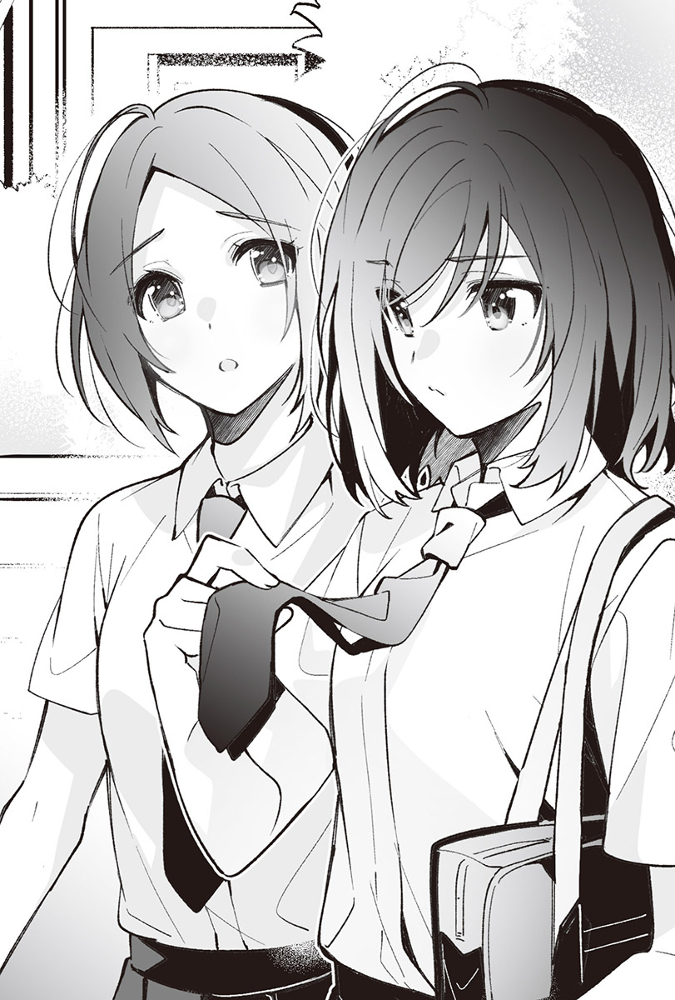當然我沒打算走在車道上，但整個人都在恍神，連要去購物中心這件事都忘了，就算出意外也沒什麼好不可思議的。
那天之後，我沒再和仙台同學碰過面。
校慶的準備工作跟補習讓我們的行程一直對不上。我傳了好幾次訊息，收到的回覆都是她得補習，延期的約定又因為校慶的準備工作而告吹。要是我搞到必須去醫院，約定就得再往後延了。
「志緒理最近常常在看領帶耶，怎麼了嗎？」
舞香指著我的領帶。
「沒什麼，只是在意有沒有打好而已。」
我跨出一大步，逃離舞香刺在我胸前的視線，然而這次換亞美用能感覺到不打算讓我開溜的力道，大力地拍了我的肩膀。
「突然開始在意自己的穿著，很可疑喔。妳之前明明不太在意的啊。」
「才不可疑呢，只是覺得好像怪怪的。比起這點，我們要買什麼呀？」
我強制結束即使被追問也無從回答的對話，順便把讓人靜不下心來的領帶拋諸腦後。
「我有寫在紙條上。」
這麼說完後，舞香從裙子的口袋掏出折起的紙片。我瞧了瞧那張幾十分鐘前還是筆記本一部分的紙片，上頭甚至寫著搞不清楚到底要用在哪裡的東西，全部買齊的話應該會有不少東西要提回去，不過比在教室裡幫忙好多了。
我們隨口抱怨著，朝購物中心前進。
儘管相比盛夏時是不算熱，但白色的襯衫依然汗濕地貼在背上。我不知為何沒辦法穿上仙台同學的襯衫而收在衣櫃裡，因此與領帶不同，我並不在意襯衫，卻很在意她怎麼處理我的領帶跟襯衫。
我曾在學校裡看到她。
但是光看根本看不出構成制服的衣物是我的，還是仙台同學的。
我想見她，直接問她我的制服怎麼了。
「校慶能早點結束就好了。」
亞美對我小聲嘀咕的這句話起了反應。
「準備雖然很麻煩，可是校慶本身很開心啊。對吧，舞香？」
「對啊，畢竟今年是最後的校慶了，我們一起到處逛逛吧。」
「……我也不是完全不期待啦。」
聽到亞美和舞香開心的語氣，我不乾不脆地回答。
我並不討厭校慶這個活動，說起來去年玩得還算開心，前年也滿愉快的，不好玩的只有被少部分人創造出的「盡情享受活動」風潮給拖下水這件事。
班上的中心人物想大玩特玩的話，自己去玩就好了，卻偏要強迫大家跟他們一起炒熱氣氛。今天也是，如果不用採買，我就能把仙台同學叫到家裡了。
事到如今，早點回家也無濟於事，但我還是想早點回家。
正當思緒被這些負面思緒給囚禁住之際，傳來了亞美積極正向的發言。
「哎呀，今天就悠哉地購物，然後回家吧。」
「亞美，我們今天可不是要去買自己的東西喔？」
舞香輕輕甩動紙條給她看。
「採買這種事隨便啦，速速解決，打發一下時間再回去就好了。」
「妳又說這種不負責任的話。」
「認真跑腿也沒意義啊，志緒理也這麼認為吧？」
「是呀。」
倒不是想效法亞美的樂天態度，只是思考要怎麼改變早已無可奈何的事情也沒用，不如趕快結束麻煩的採買工作，跟她們做些開心的事情再回去。
我和她們一起走進購物中心。
舞香一手拿著紙條，買齊了分量不少，搞不清楚要用來幹嘛的材料。我和亞美化為搬運工，一如失去自我意志的殭屍，跟在舞香身後，完成跑腿的任務。
「妳們想不想喝點什麼？」
幾乎是靠著舞香結束採買工作後，亞美的一句話決定了接下來目的地是美食街。
這次換她帶頭走在前面。
我們搭上手扶梯，聊著沒營養的話題。經過販賣各種雜貨的櫃位時，我停下腳步。
那是平常我不會在意的櫃位，換作以前，甚至不會放慢腳步。但我看到陳列在店舖前的飾品──一條有著銀色鏈條，掛著小小墜飾的項鍊，看起來很適合仙台同學。
我下意識地走近櫃位，聽見舞香開口。
「什麼？有什麼可愛的東西嗎？」
「還好。」
我連忙回答。差點拋下我走掉的亞美繞了回來，看著項鍊。
「難道我們應該送妳飾品當生日禮物比較好嗎？」
「想要這種東西就說嘛，說了我們就會買啦。」
舞香遺憾地說。
她們上週送了我鉛筆盒和書套作為生日禮物，兩個我都很喜歡，收到的那天就開始用起那個鉛筆盒，書套也套在看到一半的小說上。它們都是我說過想要的東西，所以沒有送飾品比較好這回事。
「倒也不是想要，只是剛好看到而已。」
沒錯，不過是碰巧看到，讓我想起仙台同學罷了。這飾品只要有我給她的五千圓便綽綽有餘，不是買不起的價格，卻非我該買來送她的東西。說穿了，我根本不可能送她項鍊，也沒有理由送她。要是知道她的生日，感覺的確能拿來當成送禮物的理由，可是我不知道，也沒聽她說過。
……就算知道，我也不會送她吧。
不用細想也知道，彼此不是會送對方禮物的交情。既然不會送，就算發現感覺很適合她的東西也沒意義。
「要進去看看嗎？」
聽到舞香這麼問，我果斷地回答。
「不用。」
「既然不用，那我們走吧。」
亞美輕快地說完後便走了出去。舞香雖然再度詢問：「真的不用嗎？」但我的答案依舊沒變。畢竟看了也沒用，我沒必要更改答案。
◇◇◇
仙台同學沒有來。
昨天跟今天我都沒在等她，然而校慶這兩天她都沒有到我們班上來。
『我去看看宮城好了。』
我很清楚，最後碰面的那天所說的不過是玩笑話，她也不是那種會特地跑來看我的人，所以我沒有等她。喧囂的高中最後一次校慶落幕，事後的收拾工作也做完了，我只是在最後的最後想到仙台同學沒來而已。
我望著有半數同學已經回家的教室。
儘管沒那麼積極地想參與，不過咖啡廳已然收攤的教室裡空蕩蕩的，白天的喧鬧宛如一場謊言，讓人感到有些寂寥。
校慶本身是滿開心的。
我不僅和舞香她們去了平常不會去的一年級教室，也看了在體育館舉辦的活動，就連在咖啡廳裡忙東忙西的事，總有一天同樣會變成美好的回憶。而仙台同學沒有出現在任何一個環節，並不是需要在意的事。
只是因為她說的話很奇怪，才會殘留在腦海裡，她不管來不來都無所謂。我玩得很開心，接下來也要和舞香她們去吃飯再回家，仙台同學一點都不重要，我根本不覺得有差。她現在想必打著校慶慶功宴的名義，跟茨木同學她們去哪裡玩了吧。
我望著裝滿校慶餘韻的書包。
裡頭裝有用來代替咖啡廳制服的圍裙，以及我直到剛才還穿在身上，跟班上同學們成套的T恤。
未來一定不會再用到這些東西了。
一如不會在這裡度過明年夏天的三年級生不需要的夏季制服，進入十月後，我們就會換上換季用的制服，短袖襯衫將會變成長袖。
結果我一次都沒有穿過仙台同學的襯衫，也已經沒機會穿上那件始終沉睡在衣櫃裡的制服了。
「志緒理，東西收好了嗎？」
舞香在教室一隅向我搭話。
「嗯。」
我重新繫好仙台同學的領帶，拿起書包。
「我肚子也餓了，趕快走吧。」
順著亞美的這句話，我們三人一同走出教室。
走在與校慶正熱鬧的時候不同，變得沒什麼人的走廊上，啪噠啪噠的腳步聲異常響亮。當我們走下樓梯，接近鞋櫃之際，書包裡的手機響了。
「是志緒理的手機？」
我點頭回應舞香的話，停下腳步，拿出手機望向螢幕，上頭顯示著仙台同學的名字。
『妳還在學校裡嗎？』
那段簡短的字句是我未曾從她那裡收過的訊息，我捏緊領帶。
她以前從來沒有問過我這種事。
我還在學校又怎樣？
不在學校又怎樣？
由於是第一次收到的訊息，我沒辦法想像後續會發生的事，然而再怎麼絞盡腦汁，也不知道接下來等著的會是什麼，所以我只打了「還在」便送出答覆，結果傳出後馬上又收到新的訊息。
『我在之前那裡等妳。』
我們在學校裡沒有親暱到用一句「之前那裡」就能意會到對方在說什麼，但我馬上就知道她指的是哪裡。
有個我和她唯一一次在學校裡單獨說過話的地方──
音樂準備室。
她一定是在那裡等我。
「對不起，我忘了東西，得回去拿一下。還有今天我沒辦法跟妳們吃飯了，我爸好像會提早回來。」
雖然感覺很假，但我找不到其他合適的理由，只好迅速說完，轉身往回走。
「咦～！可以一起回去拿呀，志緒理也跟我們去吃飯啦。」
亞美的聲音追了上來，我轉身面對她。
「因為我爸叫我早點回去。真的很對不起，妳們兩個去吃吧。」
我「啪」地雙手合十拜託她們之後，舞香毫不猶豫說了。
「既然志緒理沒辦法去，那下次再去好了。亞美覺得呢？」
「這個嘛～還是挑大家都有空的日子好了。總之我們去拿妳忘記的東西吧。」
「啊～沒關係啦，這樣很不好意思。感覺要花點時間，我自己去就好了。」
我又說了：「對不起啦。」再度向她們道歉。「嗯～」地沉思了一下後，亞美露出有些無奈的表情開口。
「那我們先回去嘍。不過志緒理哪天有空？」
「我會再配合妳們把時間空出來的，妳們先挑一天吧。」
「好，那我再跟舞香討論。」
「謝謝妳們，對不起喔。」
我向她們揮揮手，朝著舊校舍走去。
大多數學生都已經回家的學校，有種彷彿連接著不同世界的詭異氛圍。即使太陽快下山了，外面依舊很亮，走廊上也沒那麼暗，然而隨著越來越接近舊校舍，看到的學生人數逐漸減少，總覺得有點恐怖，讓我加快腳步。宛如想逃離自己啪噠啪噠的腳步聲般，我打開音樂準備室的門，只見仙台同學像是要混在樂器當中地待在那裡。
我在燈光下走近她，她開口搭話。
「好久不見。」
我們曾在走廊上擦身而過好幾次，睽違的時間不至於到要說好久不見的程度。
「不是約好不在學校說話嗎？」
「那妳別來就好啦，只要回訊息給我，表示不會過來就解決了。」
仙台同學倚著放有樂器的架子，微微一笑。
「妳有事要找我吧？是有話跟我說才會叫我過來的吧？」
我不過去。
的確能這樣答覆她沒錯，我卻沒這麼做，連自己都搞不清楚原因何在。指尖自作主張地傳出「還在」的訊息，嘴巴擅自編出無法跟舞香她們一起吃飯的理由，但我不想特地告訴仙台同學這些事。
「我想說可以跟妳一起享受一下校慶。」
她以像是裝出來的語氣說著，敲了敲放樂器的架子。
「校慶都結束了，在這種地方根本沒什麼好享受的，這個笑話一點都不好笑。如果沒有話要說，我要回去了。」
「我話還沒說完。」
她拉近了剛才還很恰當的距離。我反射性地往後退一步，她卻拉住我襯衫的袖子。
「如果說我想和宮城一起逛校慶，妳會笑我嗎？」
雖然沒有那麼認真，在我開口抱怨前傳來的聲音卻也不像在開玩笑，讓人難以回答。說是這樣說，但彼此間的氣氛實在沒有輕鬆到能保持沉默，我只好簡短地表示。
「會。」
「我想也是。要是宮城說了一樣的話，我也會笑。」
「……妳明明沒來我們班，還好意思說？」
仙台同學也知道我們沒辦法一起逛校慶，這是不會實現的事。然而她要是真的這樣想，就該來我們班上露個臉。
而她沒有來。
我認為這就是答案。
她今天也跟平常一樣，只是在戲弄我而已。
「我們沒有約好。」
聽到她冷淡的語氣，我知道自己想的沒錯。
「我要回去了。」
我伸手推了仙台同學的肩膀，想推開抓著我襯衫袖子的她，卻仍舊維持著太近的距離，她不肯放開我的襯衫。
「羽美奈她們囉哩囉唆的，一直說有想去的地方。」
「妳在說什麼？」
「我沒去宮城班上的原因。」
「我又沒問原因，這根本不重要。」
「我以為妳想知道。」
「才不想。我要回去了，放開我。」
「我不要。」
她再度拉近已經很近的距離，原本只抓著襯衫袖子的手抓住我的手臂，用力拉了過去。
我沒打算挪動身體，卻因為站不穩而往她更靠近一步。明明只有一步──距離應該僅有數十公分──但她比那距離靠得更近，我們的嘴唇就快碰在一起。
明顯不是偶然而是刻意的行動，讓我反射性地別開臉，可是仙台同學不願意放過我，臉再度湊了過來，我於是用力地推了她的雙肩。
「不能做這種事吧？」
不會再接吻了。
儘管沒有定下這樣的規則，但我以為是這樣。
「暑假的時候，宮城明明也曾主動吻我吧？」
「因為暑假已經結束了，我不會再跟妳接吻。」
「妳在暑假結束後還是有舔跟咬我的耳朵吧？」
「耳朵沒關係吧。」
聽到我斬釘截鐵地這麼說，仙台同學輕輕「哦～」了一聲，拉起我的領帶。
「宮城，這是我的吧？」
「是又怎樣？」
「妳想要我的領帶和襯衫，逼我脫衣服，結果還說這種話？既然做了這種事，不覺得讓我吻妳一下也很合理嗎？」
「我才沒有想要，也沒逼妳脫，只是跟妳交換而已啊。」
語氣強硬地說完後，仙台同學不滿地回嘴。
「那交換結束了，現在馬上把領帶和襯衫還給我，在這裡脫下來。」
「仙台同學也知道這件襯衫並不是妳的吧？我之後會跟著領帶一起還給妳，這樣就行了吧？」
「不行。」
制服已經更替為換季用的款式，襯衫也換成長袖襯衫，仙台同學原本穿的那件短袖襯衫不在這裡，這種事情明明一看就知道，她卻沒有改變回答。
「現在，在這裡還給我。」
她不肯退讓，催促著我。
「不要命令我。」
「這不是命令，只是在說交換結束了。」
「既然如此，仙台同學現在也會把襯衫還給我吧？」
「當然。」
「妳穿的明明是換季用制服耶？不可能還給我啊。」
「宮城的襯衫我有帶來。這條領帶是妳的，立刻就能還妳。」
「妳是在騙人吧？誰會在校慶帶襯衫來啊？」
「覺得我在騙妳的話，自己去確認看看啊？東西就放在書包裡，妳可以打開。」
仙台同學回頭望向放著樂器的架子。我順著她的視線，看到眼熟的書包就在那裡。
打開確認根本毫無意義。
她講得如此果斷，表示襯衫就在書包裡。既然是仙台同學，預料到事情會演變至此，事先準備好襯衫帶來，也不是什麼奇怪的事。
「……妳的目的是什麼？」
「讓我吻妳，我就不追究妳現在沒辦法跟我交換的事。」
「太奸詐了。既然要交換，應該事前通知我吧？這樣我今天就會帶來了。」
「宮城也很奸詐啊，之前就沒脫襯衫。」
「我又沒說要交換身上穿著的襯衫，才不奸詐呢。」
「那我們也沒決定好要交換多久，所以就算叫妳現在還給我也一點都不奸詐吧。總覺得我們是彼此彼此啊。」
眼下的仙台同學不太正常。
她不是會說這種話的人。
即使會依循自己的想法誘導我行動，她也從未這麼強硬地要我接受要求，不知道她到底怎麼了才會變成這樣。
我們在校慶結束之前都沒碰過面。
能想到的理由只有這個，但我不認為仙台同學會因為這種事情而改變。
「才不是彼此彼此呢。真要說起來，我們不是約好不在學校說話嗎？妳先好好遵守規則才有資格說這種話吧。」
不然連我都會變得很奇怪。
她要是不振作點，我們就會像壞掉的指南針一樣迷失方向，朝著不可以過去的地方前進，如果那是無法回頭的地方就傷腦筋了。仙台同學會在幾個月後拋下我離去，我不想跟她有更深的往來。
「……都是宮城不好，在校慶上玩得很開心的樣子。」
仙台同學嘀咕道。
「妳為什麼知道我好像玩得很開心？」
「因為我有看到妳。」
「仙台同學自己也玩得很開心吧？」
去年校慶，我曾看到她開心地笑著的模樣。
今年雖然沒看到，但我想一定還是一樣。
然而她沒回答。
相對地，抓著我手臂的手放鬆了力道。
「那麼不想讓我吻妳的話就逃走啊，我不會跟排斥得想逃跑的人接吻。妳要是逃跑，我就放過妳，不會追上去。」
「意思是要我做選擇嗎？」
「就是這樣。我把選擇權交給妳，遵從妳的選擇。」
「……仙台同學果然很狡猾。」
她總是不做選擇。
把決定權交給我，觀察著狀況。
而且在她提供的選項裡，我應該要選哪個也是早就決定好的事。
「趕快決定，不然妳就沒得選嘍？」
仙台同學這麼說著，放開了我。
不知道宮城究竟是做出選擇，還是放棄了。
但她沒有逃走。
即使鬆手，她仍站在我面前。
我之所以把她叫來音樂準備室，只是想跟在我不在之處享受校慶的她說上幾句話，並不是為了接吻，原本是想抱怨個一兩句話就放她走的。因此心中本來的感情儘管陰鬱，但還算正常。
然而──
校慶這兩天，她都在等我。
正確來說有點不同，但宮城說了可以這樣解釋的話，使我原本只是想說幾句話的念頭，變成這個樣子。
全都要怪她說了意想不到的話。
我根本沒想到她會記得那句半開玩笑的話，也沒預料到她會說這種話，成了我做出過度行為的理由。
「宮城。」
即使輕聲呼喚，摸了她的臉頰，她依舊沒有逃走。儘管看起來十分不滿，宮城仍待在面前，表示她也同意我接下來要做的事。我緩緩將臉靠過去，她沒有動，卻以想抱怨的表情看著我。
「閉上眼睛如何？」
我對看著我的宮城這麼說。
「不用妳說我也會閉。」
傳來的聲音裡滲出不滿的情緒，讓我知道她沒打算乖乖閉上眼睛，這是常有的事。我摸著她臉頰的手掌心整個貼上去，但她依舊沒閉上眼睛，直盯著我，實在不像一個隨後要接吻的人。
然而我們也不是會顧慮氣氛的關係就是了。
無可奈何的我只得先閉上眼，與她雙唇交疊。
觸感和在暑假接吻時一樣。
無論柔軟度還是溫度，我都非常清楚，唯獨心臟不同──或許是學校這個地點不好吧，我的心臟吵得連自己都嚇了一跳。我忍耐著持續在體內響起的心跳聲，僅止於輕觸地讓嘴唇離開她之後，她緊緊地抓住我的手臂。
我順著那隻不至於無法甩開，卻十分用力地抓著我手臂的手，望向宮城，她露出像是要咬我的眼神，但是沒有咬我，儘管眼神很難說是老實地接納了我，然而也不像討厭的樣子。宮城這個人想咬我的話，早就咬上來了。
所以這隻手的意思是──
我垂下視線，看向抓著我手臂的手。
「宮城，這樣很痛。」
沒有回應。
她明明有聽見我的聲音，卻沒有放開我的手臂，不僅如此還用力握緊，就連指甲都陷了進去。
我望向宮城的臉，只見她臉上掛著不高興的表情。
試著稍微把臉湊近。
宮城什麼都沒說，也沒有動。
而當我的身體沒靠過去，稍微退開後，她拉著我的手臂。
我不討厭像這樣用小小的動作留住我的宮城。
「可以再一次嗎？」
儘管不用問也知道答案，我依舊刻意詢問。宮城沒有開口，也不願意點頭，卻又拉住我的手臂，彷彿在催促我。
她要是逃走也很讓人頭痛，所以我不會告訴她，但我覺得這反應很可愛。
我緩緩湊上臉。
這次宮城先閉上了眼睛，我們雙唇交疊。
心跳聲還是老樣子，既吵又快。
我和她接吻過好幾次了。
次數多得早已習慣。
然而我大概是在緊張吧？
即使只是嘴唇輕輕地碰在一起，沒有用力壓上去，也沒有舔，我卻覺得交疊的部分特別熱。我伸手抓住宮城的肩膀，感覺手也跟著熱了起來，隨著接觸的部分增加，心臟又變得更不平靜，好難受。
雖然不情願，我仍臉退開，結果她再度抓住我，不過這次沒那麼用力，不會痛。
我猶豫了一下要不要再吻她，隨即比剛才更用力地把嘴唇疊上她的。
宮城沒有逃走。
我的心臟也稍微聽話了點。
我不想和她分開，這個吻比起第一次、第二次都要更長。
她正位於比我跟任何人在一起時更近的位置。
體溫從彼此相觸的部分交融在一塊。
一切都讓人覺得很舒服。
我想再多感受宮城的溫度，於是以舌尖觸碰她的嘴唇，她果不其然地推了我的肩膀。我老實地退開三步後，她開口說道。
「我沒說可以用這種方式接吻。」
「這種方式是哪種方式？」
「就是像剛剛那種。」
「妳不說清楚，我怎麼知道？」
「要是不知道就都別接吻啦。」
宮城會在這種時候含糊其詞。雖然喜歡她這種反應，我卻很想知道追問下去會怎樣，因而多嘴了幾句。這種情況下，她的心情總是會變得很差，聲音也會壓低。
儘管可以用一句「常有的事」帶過，不把這當成一回事，但今天我不想讓她不高興，卻也想再看看她的反應。
「所以只要不是剛剛那種就行？」
雖然覺得她會生氣，我仍往前走了兩步，把臉靠過去，接著便聽到她不高興的聲音。
「那件事才過了一個月，妳再忍耐一下啦。」
她所說的「那件事」想必是指暑假最後一天。那天之後，我們的嘴唇就沒有相觸過。
「也就是說宮城之前都在忍耐，其實很想接吻嘍？沒問題嗎？」
我也覺得自己很壞心眼，但又好奇她會怎麼回答。
「妳不要擅自亂解釋啦，老是說這種話，很好玩嗎？」
「很好玩。」
「仙台同學真差勁。」
想接吻──
宮城不可能說出這種話，我卻暗自希望她這麼說。
倘若再度發生暑假的那種事就麻煩了。
那種行為不該繼續發生。
我原本這樣認為，然而眼下再度與宮城接吻後，反而不知道自己之前為什麼會那麼想了。我甚至覺得她在書店給我五千圓的那天，彼此定下的規則根本毫無意義。
「只是接吻而已，又沒關係，這已經不算違反規則了啦。」
「才不好。」
宮城斬釘截鐵地說。
「那就把規則改成可以嘛。」
「不要。」
以五千圓做交換，聽從宮城的命令。
本來只是當作打發時間才會答應她，到現在卻早已超越打發時間的範疇。堅持守住規則的宮城腦袋實在太死板，甚至讓我覺得過去定下的約定很煩，討厭死了。
這世上有「臨機應變」這種方便的成語。
只要不讓人發現，在學校說話根本無所謂，接吻也沒關係。只要不讓任何人知道我們的關係，即使規則如此寬鬆，理論上也毫無問題才對。
「宮城就這麼不想接吻嗎？」
「妳這問法太狡猾了。」
「也就是說妳想接吻吧？讓步一下嘛。」
「……就算繼續做這種事，仙台同學還不是會到很遠的地方去？」
「報考同一所大學就好了。」
「仙台同學留在這裡啦。」
「咦？」
我聽到以為宮城絕不會說出口的話，忍不住盯著她的臉，只見她緊緊抿著嘴。
「宮城？」
叫她也不回話。
她瞥開視線代替回答。我希望她能看向這邊而摸了宮城的臉頰後，她冷漠地說。
「別碰我。」
我無視她的話，掌心就這樣貼了上去。平常她應該會拍開我的手，今天卻沒有。
「仙台同學，把領帶還我。」
她的這番話足以合理地要我拿開放在她臉頰上的手，我也沒理由拒絕，於是乖乖地解下領帶遞給她，宮城也把領帶還給我。
我在她開口說些什麼之前，搶先提起另一個必須物歸原主的東西。
「我的襯衫給妳，反正已經沒機會再穿了，妳就留著吧。至於妳的襯衫還是還給妳比較好嗎？」
雖然跟她說我把襯衫帶來了，然而我的書包裡沒有該還給她的東西，就算要我還她也沒辦法，我卻覺得事態不會朝令人困擾的方向發展。
「不用今天還我沒關係。」
儘管說得很含糊，但宮城將襯衫託我保管了，然後像是要改變話題似的，又補上一句。
「妳今天到底為什麼叫我過來？」
「想跟妳一起享受校慶啊，我剛剛不是說了嗎？」
「認真回答啦。」
「因為我們一直沒碰面，我想跟妳說點話。」
在校慶之前，宮城一副對這個活動沒多大興趣的樣子，今天看見的她卻顯得很開心。
結果即使沒跟我碰面，她感覺也過得很開心，就算我去找她，一定也只會擺臭臉給我看，而且我在學校不能向她搭話。拜此之賜，去年還覺得很好玩的校慶，今年反倒沒那麼有趣。我明明過得一如去年，然而沒有同樣的感受。
所以才會傳訊息給宮城。
我不想讓校慶就這樣無聊地結束。
就只是基於這種程度的理由。
「想說點話結果是那樣？那樣根本不算說話。」
宮城語氣低沉地說。
「只是做得有點過頭了，但還是有跟妳說話吧？」
雖然確實是做了說話以外的事，可是我也有跟她交談。
以比較籠統的方式概括而論，要說彼此有講話應該也沒什麼問題。
「才沒有。」
「有吧？倘若覺得說得不夠，要再多說點也行啊。」
「我才沒說不夠。」
她以心有不滿的表情加上一句：「真不爽。」但似乎沒打算再多抱怨什麼。
「時間也差不多了，回家吧？」
與其說是詢問，不如說我是在告知決定事項。宮城點了點頭，儘管待在這裡的時間不算長，但距離校慶結束早已過了好一段時間。日落的時間變早了，外頭的天色已然暗下來。
「妳要先走嗎？」
考慮到宮城應該不想被人看到跟我走在一起，我開口問她。
「……仙台同學先走。走到鞋櫃之前，我會跟在妳後面。」
「跟在我後面說不定會被其他人看見喔？沒關係嗎？」
「我會和妳保持一段就算被看見也沒關係的距離。而且──」
「而且？」
我大概想像得到她說到一半的話後面的內容是什麼。
儘管如此，卻還是反問她，接著便傳來她不高興的聲音。
「因為舊校舍很恐怖。」
「要我牽著妳的手嗎？」
「不用做這種多餘的事，趕快走啦，天色都要變暗了。」
「反正已經暗下來了，妳不如走在我旁邊？」
「絕對不要。趕快離開走廊啦。」
皺起眉頭的宮城打開門，推著我的背。
我無可奈何地走了出去。
走廊上響起啪噠啪噠啪噠的輕盈腳步聲，還能聽到另一個像是要追上來的腳步聲。回頭就能看見宮城，我的心情變得比校慶時好多了。
◇◇◇
宮城明明阻止了我，我卻無法阻止自己。
不用冷靜下來思考也知道。
今天的我很奇怪。
待在暑假時被宮城以「很常見」形容的房間裡，我輕輕呼出一口氣，在床邊坐下。
在學校把宮城叫出來，逼她跟我接吻，簡直是瘋了。
不僅如此，我們還真的接了吻。
然而我不後悔。
沒有逃走的宮城也是同罪，與我毫無二致。是因為她也想要，我們才會接吻的，一定是這樣。
──這不過是謊言。
雖然宮城允許我吻她，逼她接吻的人卻是我，如果不那樣做，事態就不會演變至這個地步，我現在只是在自欺欺人罷了。儘管心知肚明，然而到這個時候，我仍思考著「想再跟她接吻」這種事，真的是該下地獄。
嘆氣嘆到連腦漿都快跟著吐出來了。
但我還是彷彿要將肺裡清空似的長嘆了口氣，整個人倒在床上。
房裡的牆上用衣架掛著一件襯衫。
那件短袖襯衫是宮城的，結果我沒能還給她，一直掛在牆上，成了襯衫的固定位置。
「收起來吧。」
我站起來摺好襯衫，收進五斗櫃，放在宮城送我……應該說是硬塞給我的長袖上衣旁。她的東西逐漸增加，侵蝕著我的房間，放在存錢筒裡的五千圓也是我從她那裡收到的東西。就算畢業，她的痕跡仍會留在這裡。
五千圓花掉就行了，衣服也只要拿去丟掉就好。
儘管心裡明白，我卻仍舊做不出這些任誰都能辦到的事。對連接吻都忍不住的我來說，不管事情多麼簡單，一旦和宮城扯上關係就會變得非常困難，沒辦法順利完成。
我呼出一大口氣代替嘆氣。這時桌上的手機響了。
反正一定是羽美奈吧──我懷著這樣的想法看向手機螢幕，果然是羽美奈。她傳來一串諸如今天玩得很開心，還有下次想去其他高中的校慶玩這些興奮又雀躍的文字。要認真回她也很麻煩，我只回了句「對啊」就把手機丟到床上，坐到書桌前。
校慶才剛結束，學校的時程安排實在稱不上好，不到兩週後就是期中考了。雖然維持著足以考上志願大學的成績，然而凡事沒有絕對，所以我不能不念書。
事到如今，我不打算改變自己的志願。
卻很在意宮城的話。
仙台同學留在這裡啦。
看起來是認真的，然而那不像她會說出口的話，卻也沉重得不像是一時興起便能脫口而出的話。
改變志願，留在這裡。
我從未考慮過這個選項，也認為不可能這麼做，因為要是不能離開這個家，上大學就沒意義了。無論選擇哪一所大學，父母都已經說好會照顧我到大學畢業，既然如此，挑一所能離開這裡的大學比較好。
如果……
留在這裡，到畢業典禮結束後，我跟宮城的關係便不會就此告終。
我忍不住思考著這件事，卻又覺得不可能發生。
即使留在這裡，宮城走在身旁的未來也不會到來。
畢竟頑固的她八成會堅守「這段關係只到畢業為止」的約定，即使沒遵守約定，也會像今天一樣說「我絕對不要」，不肯走在我身旁吧。
猶如要讓燈光穿透般地對著日光燈抬起右手，我盯著手。
回家之際，我對宮城說的「要我牽著妳的手嗎？」有一半是認真的。
假使會怕，我可以牽著她的手。
我是這樣想的，更進一步來說是想抓起默默跟在身後的宮城的手，牽著她走。
我握緊伸向天花板的手，隨即張開。
暑假期間，我沒有想跟宮城牽手的念頭。
在學校撞到她之際，也沒有想跟她牽手的念頭。
雖然有時會想碰她，但也僅只於此。
今天卻想和她牽手。
見到宮城之後，我就否定著過去的自己活著，拜此之賜，連自己明天會變得怎樣都不曉得，心情鬱悶無比。
映入眼簾的手只是普通的手，與宮城的手沒什麼差別，雖然以身高來看，我的手可能比較大一點，但沒有什麼特別之處，明明和暑假一樣毫無改變，卻想和宮城牽手，甚至覺得要是這隻手掉下來，就會直接飛到宮城身邊。
若只針對牽手這個行為，不管是跟羽美奈或麻理子都能牽。如果對象是她們，一旦想牽手，要牽多久就能牽多久，甚至就算跟其他更不熟的對象牽手也行。手就是這樣的東西，無論跟誰都能牽，然而我想牽的對象有限。
好比說期間限定或數量限定的限量商品，因為感覺很稀有，會令人情緒高昂，可是「宮城限定」就傷腦筋了。要是什麼都限定在她身上，我會無法動彈，行動受到過多限制。
我的行動原本只會在放學後受她限制。
況且我們早就接吻過了，還差點更進一步，事到如今才想牽手，順序實在很奇怪。
我隨著嘆氣聲放下手。
不牽手也沒關係。
這點程度的事情還能忍耐，我能斷言。
問題在於我無法斷言不會跟她接吻。
我忍不住嘆氣，這已經不知道是今天第幾次嘆氣了。
「……都是宮城的錯。」
今天，我得知了如果表示想接吻，宮城儘管不情願也會接受的事實，要是再說出同樣的話，她想必仍會接受。這麼一想，我就不敢說自己不會再做出跟今天一樣的行為，甚至開始覺得等到畢業典禮，一切都劃下句點後，就不需要勉強自己忍耐了。
就算再怎麼強調我們不是朋友，也不代表要做什麼事都可以。
用來防止理性鬆懈的其中一顆螺絲大概掉在音樂準備室了。令人困擾的是，我不打算把它找回來，也沒想要準備新的螺絲。
「啊～總之來準備考試吧。」
即使繼續想著她，我依舊想不出彼此之間正確的關係性究竟為何，念書準備迎接一定有正確答案的期中考反倒輕鬆多了。
而且做點什麼事情比較能夠轉移注意力。
我打開課本和筆記本，放在桌上。
雖然丟在床上的手機又響了，我的視線仍落在課本上。
◇◇◇
校慶結束後大約過了一週──
學校裡完全染上了期中考的色彩。
不長也不短。
要說馬上卻又感覺太久的今天。
宮城傳來了一如往常的訊息。
要是在那天之後馬上叫我過去，實在讓人不知該如何是好，所以時間久一點反而正好。也多虧有時間想像宮城或許同樣不曉得該如何面對我，我才能保持冷靜地坐在她身旁。
儘管行程老是對不上，導致我遲遲無法過來，這個房間待起來依舊舒適。雖然宮城的視線異常強烈，但那可能是因為明明已經入秋，天氣卻跟夏天一樣熱，讓我脫下換季制服的背心。我把襯衫上面數來的兩顆釦子都解開了，她沒道理再嫌我跟平常不一樣。
「妳覺得自己期中考成績會變好嗎？」
我翻了一頁課本，拿近在眼前的考試問她。
「我不知道。」
她從我身上瞥開視線。
「暑假時我不是曾教妳功課嗎？」
「是沒錯，但又不是妳教了就一定能考好。」
「我是覺得妳的成績會變好啦。」
暑假的我們做了些不可告人的事，但有更多時間在念書，她要是成績沒變好才奇怪，而且如果沒變好也很讓人頭痛。然而不管是「感覺會變好」，或是「應該會考得比較好」，宮城都不肯說。
「期中考考完後，讓我看妳的成績。」
我用筆戳了戳宮城的手臂，催她回答。
「為什麼一定要給仙台同學看成績啊？」
「因為我暑假當了妳的家教啊，想知道成效如何嘛。」
「雖然是這樣……」
「我也會讓妳看成績啦。」
「不用給我看。」
「那我的不給妳看，讓我看妳的。」
「我的成績根本不重要吧？」
儘管宮城說得無關緊要，但成績要是真的不重要，我就不會拜託她給我看了。
要是清楚知道她的成績，就能推測她大概考得上哪所大學，更進一步來說，可以知道她是不是有機會跟我上同一所大學。我沒有權力改變她的志願，也不打算硬逼她改變，卻想知道她的考試成績。
「才沒有不重要。上大學之後我還想繼續打工當家教，可以當作未來的參考。」
「聽起來像說謊。」
「真的啦。」
上大學後我的確打算要打工，卻沒決定是家教，但或許會是選項之一，所以也不完全算是說謊。
「讓我看啦。」
我再說一次。宮城以發自心底排斥的聲音回答。
「……要是看了不會說些什麼，我就給妳看。」
「說些什麼是指？」
「分數太差，或是這種題目怎麼會寫錯之類的。」
「我才不會說那種話。」
「那就可以給妳看。」
她臉上依然掛著不想給我看的表情這麼說。
那語氣讓人相當懷疑她是不是真的會給我看，但也只能相信她本人的話，倘若補上一句：「約好嘍。」或是追問：「真的嗎？」感覺都會讓她推翻剛才心不甘情不願說出的那句「給妳看」，改口說「死都不會給我看」。
我再度重申：「我只會看，什麼都不會說的。」接著看向課本。解完幾個問題後往旁邊一看，只見宮城雖然低頭，卻沒有看著課本或習題。
安靜的房間裡響起指尖「咚、咚」地敲著桌子，帶有節奏感的聲音。
那是她製造的聲音，雖然不算吵，卻讓人相當介意，難以集中精神。當然，這聲音的製造者也不像有在專心念書的樣子。
到底是怎樣？
最近……應該說要追溯到校慶前就是了，宮城相當認真地在念書，然而今天一點幹勁都沒有。
快要期中考了。
她不認真念書的話我會很困擾。
我打算開口叫住持續用指尖敲桌子的宮城，她卻搶先跟我搭話。
「仙台同學。」
「什麼事？」
咚咚聲停了。
宮城安靜了下來。
也不管是她自己出聲叫我的，她什麼都不說。
「宮城？」
看著沒事應該不會叫我的她，我稍微等了一下，才傳來微弱的聲音。
「……仙台同學的生日是什麼時候？」
「咦？我的？怎麼突然問這個？」
出乎預料的話讓我忍不住反問。
「沒什麼理由。」
「宮城的生日是什麼時候？」
「九月，已經過了。我的事不重要，告訴我妳的生日啦。」
「我不想說」或是「是我在問妳」。
本以為得到的答覆會是這種抱怨，她卻毫不抗拒地回答，感覺連抱怨的餘力都沒有，於是我也老實地回答她。
「葉月。」
「那是妳的名字吧？」
「不是那個意思。皐月、水無月、文月。」
從五月開始依序說出舊曆的月分名稱後，宮城終於意識到「葉月」除了名字之外的其他含意。
「──八月？」
「對，八月出生，所以叫葉月，很單純吧？」
以日本傳統的月分名稱來說，八月是葉月。
因此在八月出生的我被命名為葉月。雖然這個命名方式感覺沒什麼堅持，不過我很喜歡「葉月」這個名字的發音。
「所以？妳問這個幹嘛？」
我依舊不清楚她突然問我生日有什麼意義，於是開口詢問，然而她不但沒說出對我生日月分和名字關聯性的感想，也沒再追問是八月的幾號，就這樣陷入沉默。以一個主動要求別人告知生日的人來說，反應未免太平淡了。
有什麼只需要知道生日月分的情境啊？
她說完八月後就一直低著頭，讓人更摸不透為什麼要問我生日了。
「如果這個問題沒什麼特別的含意，那就念書啦。」
宮城會說些讓人搞不懂的話，卻不太會說毫無意義的話。儘管覺得她問我生日應該有什麼含意，然而即使問她也不肯回答，我莫可奈何。
我的視線落在課本上。
然而別說開始念書了，她反倒突然站起來，從書桌抽屜裡拿出一個小盒子來。
「這給妳。」
伴隨著不帶感情的聲音，她把那個盒子放在我的課本上。
「說要給我……這是什麼？」
我盯著眼前的小盒子。
「……還問我是什麼？裡面放了我要給妳的東西。」
「我知道，但不是要問那個。妳為什麼會突然拿出像禮物的東西呀？」
「又沒關係。都說要給妳了，妳收下啦。」
其實就算不問，我也知道這盒子是做什麼用的，只是想透過宮城的話來對照自己心裡的答案。
「可以把這個當成生日禮物嗎？」
即使追問下去，我也不認為她會公布正確答案，便自己說出解答。
「仙台同學這麼認為的話，就當成生日禮物吧。」
她真的很不老實。
小小的盒子有著漂亮的包裝，彰顯出這是特地準備的東西。問完生日後拿出這種東西，不說也知道這是生日禮物，我不懂宮城幹嘛不承認，更進一步來說，也不懂她準備生日禮物的用意是什麼。
為了之前根本沒有打算知道的生日準備禮物，怎麼想都很奇怪，我們也不是會互送生日禮物的關係。
「要是我生日的時候沒來，妳打算怎麼辦？」
「不怎麼辦。即使是生日禮物，也沒人規定一定要生日當天才能送吧。」
「不惜做到這種程度也要送我生日禮物，應該有什麼理由吧？」
「不要就還我。」
她粗魯地說，沒等我回答就搶走放在課本上的小盒子。我一時情急地抓住她的手。
「等一下啦，我把這個還給妳的話，妳又會怎麼辦？」
「丟掉。」
「馬上就說這種話……沒必要丟掉吧？」
「因為這東西我又不用，也沒有其他能送的人。」
我尚未解開這不可能毫無用意就準備好要送我的生日禮物之謎，但顯然沒有空悠哉地解謎。倘若猶豫著要不要收下，宮城真的會把盒子連同內容物一起當成垃圾丟掉。
「總之我會收下。給我。」
我從宮城手裡救回小盒子，開口詢問。
「可以打開嗎？」
「不打開的話我幹嘛給妳？」
宮城沒好氣地拋下這句話。從這樣一直嗆我的態度來看，她的心情似乎不太好。
她看似嘴裡塞滿了百分之九十九的黑巧克力，望著漂亮地包裝起來的盒子。還是第一次看到表情這麼不高興地送我生日禮物的人，宮城想必是第一個，也是最後一個吧。
她這樣我還真難打開。
面對刺來的視線，我輕輕呼出一口氣，接著小心翼翼地撕開包裝紙，打開盒子，裡頭是一條銀色的項鍊──硬要分類的話，或許該說是吊墜──總之放著飾品。
底下垂掛著仿照月亮形狀製成的小小墜飾，對我來說好像太可愛了點。我一邊想著宮城搞不好更適合戴，一邊拿起項鍊，觀察墜飾和鏈條。本來有些擔心如果這很貴該怎麼辦，但看了一下品牌，發現似乎不是那樣的東西。
我已經從宮城那裡收下五千圓。先不提這飾品是不是生日禮物，我沒有厚臉皮到收下別的東西，還能擺出一副若無其事的樣子。
「我會再送妳禮物當作回禮的，妳想要什麼？」
我把項鍊放回盒子裡，同時問她。
「什麼都不需要。」
「意思是送什麼都行？」
「妳不用回禮。」
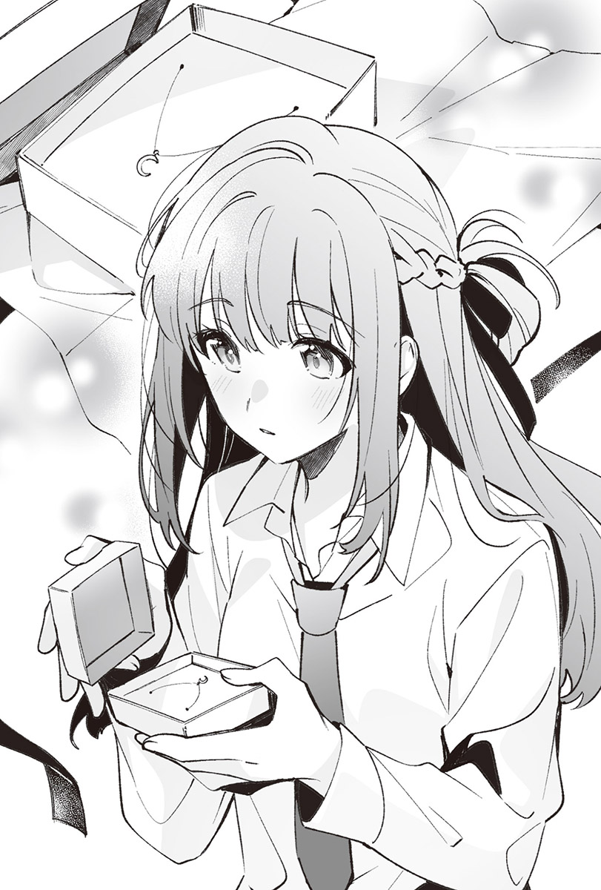她以意外強硬的語氣這麼說。
「這說法很傷人耶。」
收到點心的回禮，或是借筆記的回禮；送點什麼小東西當成禮物，或是收到一些禮物，都是很常見的事。既然收到生日禮物，送些什麼作為回禮說是基本的禮貌也不為過，她卻強硬地拒絕了，根本不懂得看氣氛說話……不對，如果不是我送的，她或許就會收下。
好比說是宇都宮送她的。
這件事還是別再多想比較好，我蓋上盒蓋。
「只有我可以給妳東西，仙台同學不用給我。比起那點，妳現在就把它給戴上，這是命令。」
宮城說完後，打開才剛蓋上的盒子。
「要戴是可以，但通常不是送的人會幫忙戴上嗎？」
「妳自己戴。」
「一般人在這時候會說『我幫妳戴』吧？」
「我才不會說。」
儘管早有預期，宮城卻冷淡地說。
她這種個性真的很不可愛。
「喔。」
倒也不是希望她能幫我戴，可是她的說法一點都不好玩。不過現在對她說什麼都沒用，要是說了什麼無聊話，她一定會追加命令，而且絕對沒好事。
我從盒裡取出項鍊。
解開扣頭，慢慢戴上。
「我戴好了。」
我以指尖撫摸項鍊墜，望著宮城。雖然不討厭飾品，但是和制服一起穿戴在身上，總覺得胸口附近讓人有些浮躁。
「看就知道了。」
「不是那個問題。妳沒什麼要說嗎？」
「可以摸嗎？」
「說點感想啦。」
我是要她說感想，沒說可以摸，然而她的手理所當然地伸了過來。即使是說客套話，我也不認為她會說出很適合我這種話，因此早就預料到她不會提出感想，卻沒想到會被摸。我反射性地往後縮，但宮城的手先碰到了我。
指尖順暢地順著鏈條滑過。
手指微微碰到皮膚，感覺好癢。
「鏈條是不是有點長啊？我喜歡更短一點的。」
我抓住她那動作實在說不上好的指尖，抱怨起其實不是很在意的事情。
「比這更短的話，在學校就會露出來了。」
她像是在確認長度，拉了一下鏈條又放開。
「我連去學校都要戴著它嗎？」
「戴到畢業典禮為止。」
「意思是到高中畢業前，都要一直戴著？」
「對，一直，無論在學校或家裡都要戴著。」
「這也是命令？」
「對，命令。」
宮城以不強不弱的語氣說。
項鍊只是項鍊，外觀看起來不過是普通的飾品，就算一直戴在身上也沒什麼好奇怪的。
然而我懂她的弦外之音。
這想必不是單純的飾品。
她不是會心血來潮送我禮物的人──這話要是說出口，她八成會理所當然地同意，所以我才不說。不過我想這項鍊更像是用來宣告所有權的項圈，否則她不會針對要我戴在身上這件事，加上「到畢業典禮為止」的期限。
「學校不在命令的範圍內。」
雖然只是飾品，不過一想到這是宮城送的東西，就有種脖子被緩緩勒緊的感覺，有點難受。
過去也曾發生過類似的事。
留下吻痕或齒痕。
然而那些都是會隨著時間消失的痕跡，不像飾品會一直留存。即使這個禮物幾乎沒有重量，我卻覺得格外沉重，至少在學校的時候會想拿下來。
「把規則改成戴著它沒關係就行了吧？仙台同學偶爾也讓步一下啦。」
她的話跟我在音樂準備室說過的話一樣。
沒想到事到如今，我居然會被過去的自己給捅一刀。
「讓步嗎……既然如此，只要宮城開口拜託我說『請妳戴著』，我就聽妳的。」
我拿她絕對不會做的事情當成條件。
「那就算了，要不要戴隨妳便。」
「宮城，這種時候妳就老實地拜託我如何？」
「不要。」
如我所料，她收回了一度說出口的命令。
這樣我就能自由決定要不要戴項鍊了。
我望向宮城，身旁的她不高興地沉默不語。
指尖「咚」地敲了一下桌子。
我又聽到一聲「咚」，她伸手拿起原本收著項鍊的盒子。
她大概是後悔給我禮物了吧？
我知道。
沒必要退讓。
宮城不肯拜託我。
所以這不構成命令。
明明知道，嘴巴卻自己動了起來。
「……如果只要戴著就好，我到畢業前都會戴著，但要是被老師發現而沒收了，我可不管喔。」
我從她手裡拿回小盒子。
我有自覺，也已經做過很多次同樣的事──總之我就是太寵宮城了，寵到願意接受範圍外的命令，選擇一直戴著項鍊。
「妳不解開上面數來第二顆釦子，應該就看不到。」
望著我的襯衫，宮城平靜地說。
「我覺得看得見耶。」
「妳扣上第二顆釦子看看。」
原本解開兩顆襯衫釦子的我依言扣上釦子，接著維持跟在學校時一樣，只有最上面那顆釦子解開的狀態問她。
「看不到嗎？」
「放心，看不到。」
「那就好。」
「……仙台同學，之後不可以讓別人看到它。」
「咦？要不讓人看到很難吧？畢竟上體育課的時候得換衣服。」
「絕對不能讓我以外的人看到。」
說她的命令是在刁難人也不為過。
雖然可以盡量不給人看，可是既然學校有必須換衣服的課，就很難一直藏著這條項鍊不讓人看見。況且「我以外的人」這句話緊緊攀附在腦袋裡，那表示宮城是例外。我馬上得出了一個結論。
「所以不能不讓宮城看嗎？」
「反正仙台同學在這裡的時候都會解開第二顆釦子，我看得到。另外要是我命令妳，就要讓我看。」
「既然看得到，根本不用特地命令我吧？」
「要讓我看清楚的意思。」
「……這命令會不會太色了？」
畢竟不是要我脫掉制服，讓她看項鍊這命令應該還在規則的範圍內。
不過「我主動解開釦子，她就看得到」跟「她命令我，就要讓她看個清楚」，兩者單就結果來看，雖然狀況類似，心理層面上卻截然不同。但凡宮城開口就得讓她看，算是相當過分的行為。
「才不色。現在就讓我看。」
剛剛才叫我扣上釦子的那張嘴，這下又強制要我解開釦子。
「妳果然很好色嘛。」
「沒仙台同學那麼誇張。再說妳平常就會解開兩顆釦子了，所以少廢話，解開啦。」
「真的要我再解開嗎？」
「不解開的話我看不到。」
儘管一如宮城所言，我平常在這裡時都會解開第二顆釦子，卻因為加上讓她看項鍊的這個條件，變得莫名地難以執行。在我猶豫之際，她又補上了一句：「這是命令。」
「只要解開就好了吧？」
一旦把沒什麼大不了的事情看成大事，感覺真的會把事情給鬧大，於是我老實地解開剛扣上的釦子。
「這樣就行了？」
感覺得到宮城的視線停在我的胸口上。
雖然知道她看的是項鍊，鎖骨一帶仍有種令人浮躁難安的感覺。
「沒必要這樣猛盯著吧？」
「只是在看我給妳的東西，要怎麼看都行吧？」
「妳是想做這種事才特地準備禮物的嗎？」
要我解開釦子，想看我的胸口。
除了用來代替項圈外，即使包含這種理由也不奇怪。
「仙台同學不用知道我是基於什麼理由才準備的。」
宮城平靜地說，接著又說：「然後……」
「再解開一顆釦子。」
「現在這樣就能看見了，夠了吧？」
「看不清楚。」
「妳從剛剛開始就直盯著吧？」
「我想看得更清楚一點，這是命令，照我說的做。」
基本上，從上面數來的第三顆釦子是不該解開的。
然而今天宮城感覺不會死心。
基本歸基本，還是有所謂的臨機應變或例外存在，所以要我今天特別解開第三顆釦子也不是不行。儘管不覺得她只是想看項鍊，但在這裡跟她僵持不下實在很麻煩。
「好好好。」
我隨口回答，解開領帶，就連第三顆釦子都解開，宮城的手隨即伸了過來，指尖雖然碰到襯衫，不過沒做出拉開領口，讓我的胸口整片暴露而出的動作，只有稍微拉開到能看見項鍊。
我的內衣和肌膚已經給她看過好幾次了，事到如今沒什麼好害羞的，內心某處卻仍有些不平靜，彷彿飄在空中般縹緲不定。
她的手指沿著鏈條滑動。
慢慢摸過的手猶如數著連接的金屬環，感覺很癢。
她將體重壓在原本緩緩摸著鏈條的手上。
剛才還在摸項鍊，頂多只是順便碰到肌膚的手用力推了一把，讓我失去平衡。她的身體就這樣壓上來，把我推倒在地。
「等一下，宮城，很痛耶。」
儘管不到非常用力，我依舊以不小的力道撞上地板，背跟肩膀都很痛。但宮城一言不發地將臉湊近我的胸口，吻了墜飾。
由於墜飾很小，這等於是吻在我的胸口上，她卻將整個嘴唇抵上來，像是要讓我了解這個吻是為了碰那個小小的東西。
她並沒有把全身的重量都壓在嘴唇上。
可是好重。
好難受。
被嘴唇觸碰的地方莫名地熱。
她總會一臉若無其事地對我做出這種事。
感覺沒有為我這個被吻的人著想。
吸氣、吐氣。
不過就是呼吸而已，卻變得困難至極。我輕輕拉扯胸前的頭髮，宮城抬起頭。
這次改成用手指撫過鏈條。
望著她的行動，我知道自己的想法沒錯，無論是在吻墜飾之前，還是現在，她始終保持沉默，什麼都沒說，我卻覺得這些行為根本是在宣示所有權，而且比過去的任何行為更令人這麼想。
這條項鍊大概、也許、應該……不對，是絕對帶有「仙台葉月到畢業典禮前都屬於宮城」這樣的含意。
老實說，我真的不知道該講什麼才好。
雖然不想告訴她本人，我卻接受了這個禮物；儘管覺得難以呼吸，十分麻煩，但我並不排斥。
「宮城，可以了吧？」
想不到該說些什麼的我，只好隨著這句比較保險的話拍打她的背，但她不肯退開，不僅如此，又吻了一次墜飾，然後以指尖撫摸著小小的墜飾，手指必然地碰到我的肌膚。
果然還是很癢。
我不至於因此笑出來，皮膚表面卻一陣搔癢。
觸碰墜飾的手指輕輕地壓在肌膚上。
月亮墜飾的冰涼感與宮城的體溫交融，流入我的體內。
我回想起暑假最後一天。
不只是搔癢感，指尖連同那天的記憶一併帶來別的感情。
宮城正自作主張地試圖解開我的第四顆釦子。
這下不妙。
心中那股顯然不該對現在的她湧現的感情逐漸膨脹，我抓住她的手。
「宮城，停下來，再繼續下去就不好了。」
「是因為這樣違反規則而要我住手？」
「那也是原因之一，不過主要是我的理性快飛走了。」
能不把這當一回事地任她為所欲為，也就到此為止了，要是不就此結束，會發生對現在的我們來說並不好的事情，我不相信自己的理性。宮城也是，倘若不能理解這點，我們兩個都不會有好下場。
「仙台同學的理性究竟是怎麼了？不要那麼不負責任地飛走，好好綁著，別讓它亂跑好嗎？」
「那還滿難的耶。」
「……妳為什麼會這麼沒自信啊？」
她有些傻眼地說。
就算這樣問我，我也不知道為什麼，同時不懂都到了這個地步，宮城為何還想相信我的理性，以至於回答變得很隨便。
「我自己也不知道，所以妳自重點。」
說得像是要把責任都推給宮城一樣，她陷入沉默。
看似在思考些什麼地皺起眉頭。
面有難色約十秒後，她靜靜開口。
「如果說讓我解開一顆釦子，妳想接吻也行呢？」
她煩惱後得出的結論，是我從未想過她會說出口的內容。這次換我沉默了。
我在腦子裡反芻方才聽到的話。
接著向本人確認是否理解錯誤。
「──意思是我可以吻宮城？」
「對。」
沒想到她會提出這種交換條件。
以前我也曾在宮城面前解開過第四顆釦子。
不是需要猶豫的條件。
「好啊，解開也無所謂。」
會發生不好的事。
這實在不是剛剛帶著危機意識阻止宮城的我該說的話。
實在不能相信自己的理性。
「仙台同學自己解開。」
「好。」
我依她所言，解開第四顆釦子。
宮城的手指碰觸我的肚子，我的身體有些緊繃。
掌心緊密地貼了上來。
有股緩緩滲透的暖意，卻難以令人心情平靜，我一瞬間屏住呼吸。那股熱度彷彿深入至內臟，我抓住她的手腕，然而感覺不到她有想要繼續往下摸的意思，她的手滑順地摸到腰附近後便離開了。
「妳可以吻我。」
宮城小聲地說。
我稍微坐起身，伸手觸碰她的脖子，一路滑到她的後頸，讓她更靠近我，隨即把臉湊了過去。距離我們最後一次接吻並未經過太久的時間，但我想早點碰她，有些強硬地把嘴唇疊上她的。
宛如品嘗著那讓人還想再度體驗的柔軟觸感，我輕輕地咬了她的嘴唇。換作平常，宮城早就會動手推我，要我早點退開，今天卻難得溫順，感覺就算解開她的一顆襯衫釦子，也會容許我這麼做，於是我退開嘴唇，拉鬆她的領帶。
宮城毫無抗拒。
她睜一隻眼閉一隻眼地放過我解開她一顆釦子的行為。我的嘴唇湊近她的脖子，然而在吻上去之前，她便用不小的力道推了我肩膀，我的身體又倒回地板上。
「結束了。」
斬釘截鐵地說完後，宮城坐起身來。
「太快了吧？」
「那我也可以繼續做比剛才更進一步的事嗎？畢竟這是交換條件，如果仙台同學還要再接吻一次，我也要做點什麼。」
「妳又沒說接吻只有一次。」
「就算沒說也只有一次。」
「太不講理了吧？」
「況且我只有碰一下，感覺只能算一次接吻的份。」
她以沒在掩飾不滿情緒的語氣說道，扣上自己的襯衫釦子。
「我知道了，就結束吧。」
再繼續囉唆下去，感覺她又會下什麼不好的命令。我並非希望更進一步，只是她容許的話，想再多碰碰她而已。
我慢吞吞地爬起來。
打算扣上一直敞開著的襯衫釦子，宮城的手卻伸了過來，開始替我扣起釦子。她從下面開始一顆又一顆地扣上，連最上面那顆都扣起來了。
「這樣很難受耶。」
我開口抱怨後，她冷淡地回答。
「就這樣扣著。」
「這是命令？」
「不是。」
一臉嫌麻煩地說完後，她隨即朝桌子走去。而覺得很難呼吸的我解開一顆釦子，繫上了領帶。
我看著放在書桌上的考卷。
結果不算差。
不如說變好了。
但這不是能和仙台同學上同一所大學的成績。我會讓等等造訪這房間的仙台同學看考卷，不過她的感想一定跟我一樣。
那原本就不是考得上的大學，我也不覺得自己稍微認真念書就能追上她，因此這結果沒什麼不好的。
由於並非需要感到消沉的事，我沒有太過在意。儘管心情有些沉重，但八成是因為天氣不好。
我的視線移向窗外。
午後下起的雨，直到現在還在下。
天空灰暗，是令人憂鬱的天氣。
我叫仙台同學過來的時候，她曾說會晚一點才到，所以還沒來。
為了打發時間，我拿出手機，看起大學的線上導覽手冊。
翻了幾頁的我嘆了口氣。
顯示在畫面上的導覽手冊不是我的志願，而是舞香的志願，我看過好幾次，幾乎已經掌握所有內容。儘管不像仙台同學的志願那麼難，但不久之前我如果說要報考這所大學，老師八成會面有難色吧，不過它現在不再是我報考前就該放棄的大學，況且離仙台同學的志願很近。
還來得及。
我不是不能報考外地的大學。
翻到導覽手冊的最後一頁後，我關上手冊。即使看了也不會有什麼改變，我依舊接著點開了仙台同學要去念的大學導覽手冊。畢竟看過很多次，內容也不會因為到今天而有什麼改變，於是我機械性地翻了幾頁，看到一半就關上了。
我把手機放在桌上。
從鉛筆盒裡拿出兩塊橡皮擦裡的其中一塊，那是仙台同學不惜在學校把我叫出去，也要還給我的橡皮擦。和她相處的記憶正逐漸增加，其中某些恐怕會化為回憶，儘管期中考前給她的那條項鍊不像橡皮擦在我手邊，感覺卻也會變成那樣的存在。
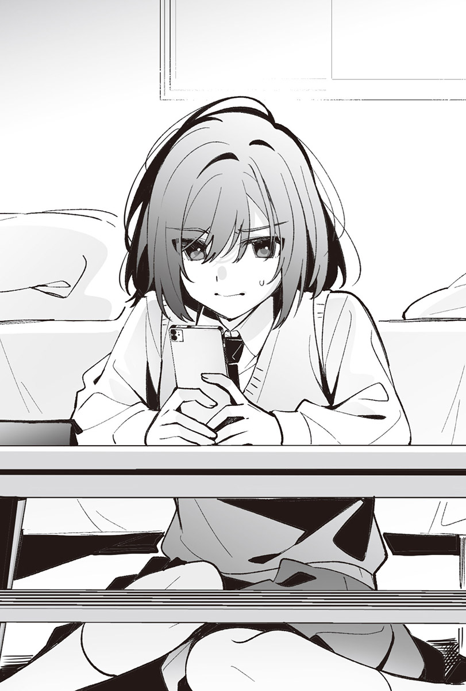──這不是什麼好事就是了。
倘若會留下回憶，希望只會留在仙台同學的腦海裡。
我不想留在腦海裡。
雖然這麼想，不過做出會留在仙台同學腦海裡的事，便表示同時也會留在我腦海裡。無論留下來物體是否有形，腦中的她仍不斷增加，就連一塊橡皮擦都染上了她的氣息。
明明不打算像這樣一再增加彼此共同的記憶，但我不知為何總是在做這種事，結束和仙台同學關係的日期沒有改變，早就決定好了，卻看起根本沒要報考的大學導覽手冊。真想把做出這種無聊事的自己丟到別的地方去。
今天要是沒叫仙台同學過來就好了。
想著事到如今早已莫可奈何的事，我嘆了口氣。門鈴響了。
用不著確認也知道是誰到來。
我把橡皮擦收回鉛筆盒裡，解除大廳的門鎖，沒過多久仙台同學就來到我房裡。
「今天很冷呢。」
她一邊打噴嚏一邊說。
十月進入尾聲，服裝也已經換季成冬季制服。今天的天氣對怕熱的仙台同學而言，說冷也不為過。
「雨下得很大嗎？」
「已經變小了。」
「肩膀都淋濕了。把制服外套給我。」
見我伸出手，仙台同學脫下了有些淋濕的外套，解開襯衫的第二顆釦子，看得見項鍊掛在胸口。雖然想觸碰那條銀色的項鍊，但接過外套，掛在衣架上後，我隨即走向廚房。
半開著冰箱的我看向熱水壺。
確認裡頭還有熱水後，我自架上抽出茶包，泡了紅茶，再從冰箱裡拿出自己要喝的汽水，回到房裡。只見仙台同學已經坐在固定的位置上。
把杯子放在桌上後，傳來她開朗的聲音。
「這是紅茶？」
「要是覺得汽水比較好，妳就喝汽水吧。」
「紅茶比較好，謝謝。」
她以看似相當開心的笑容望著我，我轉身背對她，從書桌上拿了考卷過來。雖然不太情願，不過已經約好要給她看了，我把考卷和五千圓鈔票一起放在桌上，坐到她身旁。
「給妳。」
喝著紅茶的仙台同學放下杯子，道謝並收起那張五千圓，隨即拿起考卷。
「妳有要讓我看考試成績啊？」
「是妳叫我要給妳看的吧？」
「是這樣沒錯，但沒想到妳真的會給我看。」
「不看就還給我。」
我伸出手，她卻沒把考卷還給我，也沒回話。
她就這樣默默地盯著考卷。
「沒什麼要說的嗎？」
「宮城不是叫我什麼都別說嗎？」
我的確曾這樣說過，然而一言不發地確認考試成績和內容，讓人感覺很不舒服。假設她一一挑出問題，說這裡不好、那裡不對，我應該會很挫折，可是連一句好或不好都不說，感覺也很不舒暢。
「妳可以說話，所以至少說句什麼吧。」
「雖然不清楚妳之前的考試成績，但我想應該進步不少？」
「對。」
「妳還想再多念點書嗎？」
「不想。有這個成績應該就能考上大學了，已經夠了吧？」
我從她手裡搶走考卷。
「要看我的嗎？」
「比起考卷，給我看項鍊啦。」
見仙台同學打算打開書包，我拉住她的制服。
「讓妳看項鍊是命令嗎？」
「對。」
「這以分類來說是有墜飾的飾品，好像不該說成項鍊，而是吊墜耶。」
「怎麼說都沒差吧？」
「也是啦，只是感覺問題。」
以怎樣都好的語氣說完後，她看著我。
「請，妳就看到滿意為止吧。」
儘管聲音聽起來很隨便，不過她有遵從命令，所以沒關係。
我摸著襯衫上有時可以解開，有時又不能解開的第三顆釦子。
她想抓住我的手，卻又馬上收了回去。
第三顆釦子想必已經變成可以解開的釦子了吧。
我想看項鍊看得更仔細，於是解開她的領帶和那顆釦子，雖然不到領口大開的程度，但可以看見內衣。由於實在不好碰她的內衣，我摸了項鍊。
「好癢。」
「忍耐一下。」
之前交換的領帶已經換回來了。
而我們約好這條項鍊她會一直戴到畢業典禮為止。
我輕輕拉扯鏈條。
「宮城太粗魯了。」
「妳很吵耶，安靜一下啦。」
「是是是。」
我用指尖撫過鏈條。
最近的仙台同學太恣意妄為了。
在學校把我叫出去，吻了我。
做些我沒命令她做的事。
雖然不討厭和她接吻，但在學校說想接吻就不對了。她理應服從我，不該主動說想做些什麼。要做什麼必須付出相對的代價，付出代價的人則是我。
不是仙台同學。
得讓她搞清楚，有權要她把收到的東西戴在身上、下命令的人是我，她只能服從我。
期限到畢業典禮為止。
在這段期間，她根本不用理會茨木同學或其他人說的話。
只要看著我就好了，能碰她的人有我一個就夠了。
「滿意了嗎？」
大概是受夠一直不說話了吧，仙台同學按住持續摸著項鍊的我的額頭。
「妳可以扣上釦子了。」
「宮城，交換條件呢？」
她提起我贈送項鍊那天的事。
那天，為了獲得解開襯衫第四顆釦子的權力，我賦予仙台同學可以接吻的權力；可是今天只解開三顆釦子，我沒打算做更進一步的要求。
「剛剛沒有做需要提出交換條件的事情吧？」
「我以為妳接下來要做。」
「沒有。扣上釦子。」
「提出交換條件啦。」
搞不懂她的話究竟是不是認真的，甚至讓人覺得她接下來會說「方才的只是玩笑」當作沒發生過這件事，考前她說的「理性會飛走」在我看來也是在說笑而已。真要說起來，我不認為自己身上具有會讓她失去理性的要素。
「我不要。」
雖然知道她在期望什麼，我卻拒絕了她。
儘管不討厭她吻我，然而不討厭的行為成了討厭的事。一旦命令她，我也可以主動吻她，但她一定會說：「原來妳想接吻到要命令我啊？」我才不想這麼做。
而且──
要是反覆接吻，感覺她會厭倦跟我接吻這件事。
扣上仙台同學的第三顆釦子後，我下達不是她所期望的命令。
「拿本書來朗讀。」
「念書呢？」
「等妳朗讀完再念。」
她沒說「知道了」，也沒說「好好好」，繫好領帶站了起來，走到書櫃前。
「要選哪本？」
「挑妳喜歡就好。」
「喜歡的喔……」
像是在自言自語地嘀咕完之後，我聽見小小的噴嚏聲。
「妳該不會感冒了吧？」
「只是有人在說我的八卦啦。」
她一臉無趣地說著，拿了本漫畫過來。
◇◇◇
一如往常叫仙台同學過來的訊息，被與平常迥異的訊息給拒絕了。
拜此之賜，我現在正在前往她家的路上。
『我感冒了，請假在家，今天沒辦法過去。』
收到這個由於不同班而無從得知的事實後，我只回覆一句「知道了」，腦中卻響起三天前見面時，她打噴嚏的聲音。
倘若下雨那天的噴嚏是請假的原因，她可能已經請了幾天假。這沒什麼，不管請假多少天，都不是我需要介意的事。只是至今為止我從未看過她請假，沒來由地有點在意她是否沒事罷了。
況且──
病倒在跟家人關係看起來不太好的家裡，感覺很難受。雖然不清楚跟病倒在沒人在的家裡相比，到底哪邊比較難受，總之絕不是什麼愉快的狀況。
我很清楚，即使去了也不能改變什麼，但至少能帶個寶特瓶飲料過去，也能帶點吃的給她。儘管沒自信這些東西能幫上忙，但有總比沒有好吧？
彼此已經共度時光超過一年了，探病很正常，畢竟我也是有人性的，多少會擔心，所以這沒什麼好奇怪的。
一邊回憶自己暑假時和她走過的路，我一邊朝她家前進。
雖然和仙台同學說過的話我記得一清二楚，但在那之後從未去過她家，不太確定這樣走對不對。
途中我看見當時和她一起繞去的便利商店，走進店裡。
總之先把瓶裝茶和優格放進購物籃。
需要貼在額頭上的那玩意嗎？
短暫猶豫後，我把貼在額頭上用的退熱貼也丟入購物籃。考慮到仙台同學和媽媽的關係，感覺會需要這種東西。
我付了錢，走出便利商店。
由於沒有事先聯絡，即使造訪可能也見不到她。儘管如此，我依舊沒有停下腳步，走了約五分鐘，抵達曾經看過的住宅。
站在玄關前的我陷入後悔。
實在不好傳訊息叫病人出來開門，既然如此，不按下眼前的門鈴就進不了這個家。
以時間來說，仙台同學的爸爸應該還在上班，不在家才對，可是她媽媽我就不知道了，或許有在工作，也可能沒在工作，這些事我從未問過仙台同學，她也沒主動提起過。總之最有可能來應門的人就是她媽媽。仙台同學這個病人應門的可能性微乎其微。
我對她媽媽的印象實在不太好。
──還是回去好了。
我在玄關前盯著便利商店的塑膠袋。
吸氣，吐氣。
決定只按一次門鈴，如果沒人來應門，我就回去。
我把食指放在按鈕上後施力。
門鈴響起，接著恢復寂靜。
沒人來應門。
說不定她父母都去工作了，除了仙台同學之外沒有其他人在家。
還是回去吧。
就在我正打算轉身背對玄關的瞬間，從對講機傳來了不是仙台同學的女性聲音，雖然是第一次聽見，但那一定是仙台同學的媽媽。
真想就這樣右轉回家。
可是都已經是高中生了，總不能按了人家的門鈴就跑。語無倫次地講出我是來探病的之後，玄關的大門打開，我在暑假時見過的仙台同學媽媽出現在門後，冷淡地說：「進來吧。」我向她道謝，朝仙台同學的房間走去。
爬上樓梯，兩扇並列的房門中靠前面的這扇──
我伸手要敲門，卻又猛地打住。
來到這裡的我，今年還沒有如此後悔過。
雖然沒多想……真的是沒多想就來了，然而我沒有先聯絡就擅自跑來，仙台同學搞不好會生氣，也有可能不讓我進房間。
早知道就別按門鈴了。
我決定留下買來的東西就回去，把便利商店的塑膠袋掛在門把上。不過大概是因為太緊張了，袋子裡的寶特瓶撞到門，發出「咚」一聲，聲音不小。正當我猶豫著不知該如何是好時，房門打開了。
「……為什麼宮城會在這裡？」
穿著睡衣的仙台同學這麼說。
「我要回去了。」
我轉身背對她。
「咦？等等，到底是怎樣？」
「沒事，妳不用在意。」
我頭也不回地回答，在走廊上前進，打算就這樣走下樓梯，跑到走廊上的仙台同學卻抓住我的制服下襬。或許是因為感冒了吧，那隻手虛軟無力，硬是甩開病人逃走也讓人過意不去，於是我停下腳步。
「就算說不用在意，我還是會在意啊。妳哪會明明沒事卻出現在我家？」
看來她沒有因為感冒而意識不清，開始在意起一些無須在意的小事，甚至注意到我不希望她現在發現的東西。
「這是什麼？是妳帶來的嗎？」
她指著掛在門把上的便利商店塑膠袋。
「那個給妳。」
「……謝謝。妳帶著這些東西來，該不會是來探病的吧？」
「不是。」
「妳說不是，卻跑到我家？」
雖然的確是因為那樣才來的，但我不想承認，於是只能保持沉默，閉口不語。
不熟悉的走廊突然變得鴉雀無聲，仙台同學一臉無奈地開口。
「總之先進來房間吧。」
她依然抓著我的制服，拿起掛在門把上的便利商店塑膠袋。無權拒絕進房間的指示，制服下襬被她抓著當人質的我，只能拖著沉重的腳步走進她房間，關上房門。
書架和床舖。
還有桌子。
收拾得很乾淨。
和暑假沒什麼不同的房間裡，有個大存錢筒放在五斗櫃上，是個存五百圓硬幣進去可以存到幾十萬圓，隨處可見的存錢筒。之前來的時候沒有這東西。
我仔細看了看仙台同學，即使是她，今天也不至於化妝，頭髮同樣沒綁。
卻戴著項鍊。
而不知道是家裡沒有，還是已經沒發燒了，她的額頭上沒有貼著退熱貼。
「宮城，妳在那邊找地方坐吧，我去拿點什麼過來。」
「假設是要拿飲料跟吃的，那個袋子裡就有了。」
我對著把便利商店塑膠袋放在床邊的仙台同學這麼說，她確認了袋子裡的內容物。
「我去拿宮城的份過來。」
她說完便打算走出房間，我叫住她。
「不用，躺下啦，妳感冒了吧？而且我馬上就要回去了。」
「馬上是多久？」
「現在就可以回去了。」
可能是以為我會在她離房時回家吧，仙台同學坐到床上。
「我睡太多了，現在不睏，陪我聊聊天啦。」
「沒什麼好聊的。」
「不說話也可以，再待一下啦。」
她平靜地說。
儘管聲音和平常毫無二致，可是穿著睡衣又沒化妝的她看起來就是個病人，讓我覺得自己如果就這樣回去，是件非常過分的事。
「還有發燒嗎？」
「還在燒。」
「讓腦袋冷卻一下如何？那裡面有放。」
我在跟床有點距離的位置坐下，指著裝有退熱貼的便利商店塑膠袋。
「宮城幫我貼啦。」
「自己貼。就算感冒了，這點小事還是做得到吧？」
「妳對病人會不會太冷淡了？」
「反正妳還在發燒，冷一點正好吧？」
雖然沒認同我是來探病的發言，但我確實是來看看她狀況的，卻覺得沒必要特別溫柔。
「今天一天聽一下我的請求也無妨吧？」
這麼說著的她，把裝有退熱貼的盒子朝我丟來。盒子劃出一道拋物線，掉在我前面。
「這樣很危險耶。」
「幫我貼啦，我是病人耶。」
說得好像這是她正當的權力。
換作平常，我會把裝有退熱貼的盒子丟回去，叫她自己貼。
今天我當然也想這麼做，然而眼前的她就如同本人所說的，是個病人。一想到這點，我就沒辦法表現得像平常那樣。
要是她能再有精神一點就好了。
她的聲音有點沙啞，是那種一聽就知道感冒了的聲音。而且都怪我特別問她還有沒有發燒，導致更難以冷漠的態度對待她。
我撿起盒子，走近床舖。
「妳可以坐在這裡。」
坐在床邊的她拍了拍身旁的位置。
儘管不打算說出「這樣感冒會傳染給我」這種話，腦海中卻浮現暑假時在這個房間裡發生的事。那天我坐在床上，儘管沒有命令仙台同學，她還是舔了我的腳。
我不認為現在的她會做出同樣的事情，但足以成為遲疑是否要坐到床上的理由。
「宮城，坐下啦。」
見我不知該如何是好地猶豫著，她的語調從柔和變成帶有強制性的口吻。雖然可以站著幫她貼退熱貼，不過要是不聽話，感覺她又會囉哩囉唆。今天的她正盡情地利用著病人這個身分。
我無可奈何地在她旁邊稍遠的位置坐下，打開盒子。
「我幫妳貼，頭轉過來。」
拿出一片退熱貼給她看之後，她老實地轉過來面對我，卻沒把額頭露出來。為了把她礙事的瀏海往上撥開，我伸出手，她卻抓住我的手。
好燙。
手臂上傳來的溫度讓我意識到她感冒了，霎時有些退縮。我的手被她用力拉過去，退熱貼掉在床上。
彼此之間的距離縮短，嘴唇像是要撞上彼此般碰在一起。
一如她的手，嘴唇也比平常更燙。
舌尖毫不客氣地鑽進口中。
濕滑的舌頭果然也很燙，我除了接受外別無他法
她的體溫縮減了我的選項。
好比說推她的肩膀。
或是咬她的舌頭。
我的行動受到限制，什麼都做不了。
熾熱的舌頭專心地動著，彷彿在口中探索，我無法抗拒。
那個試圖與我的舌頭交纏的物體熱得彷彿會燙傷我。
她的身體太燙了，害我無法開口抗議。
無法從抓著我的手、觸碰著我的嘴唇、柔軟的舌頭，以及這股熱度中逃脫。
希望她放開我。
明明這樣想，我卻不那麼排斥。
都怪她傳過來的體溫，使我無法做出正常的判斷。
儘管不打算回應她纏繞上來的舌頭，但也不想把那東西趕出去，持續交疊的雙唇實在太過舒服，讓我搞不清楚彼此已經吻了多久。
時間的感覺消失，腦中變得滿滿全是仙台同學。
無法順暢地呼吸，好難受。
我想從雙方交疊的手中逃離，抓住她的睡衣，仙台同學這才緩緩地退開。我差點下意識地拉住她的睡衣，只好口吐怨言來掩飾自己的行為。
「……剛才絕對不是該接吻的時機。」
「因為宮城靠過來了。」
「是妳把我拉過去的吧？退熱貼都掉了。妳別再做任何事情了，而且像剛剛那樣的吻很噁心。」
因為她是病人就乖乖聽話的我真是個笨蛋。
但凡溫柔一點，她馬上就會做出這種事。
儘管沒有排斥到想要抱怨的程度，但我不想再讓她吻我了。
「說得更委婉一點嘛，這樣我很受傷耶。」
「不要。既然會受傷，就別再做剛剛那種事了。」
「……妳真的生氣了？」
我覺得自己的語氣沒那麼凶，然而平常無論我生氣或心情不好都不會在意的仙台同學，聲音裡卻透露著不安。
可能是因為發燒而變得軟弱了吧？
這樣的她打亂了一切。
聽到她這麼說，總覺得自己好像做了什麼壞事。
雖然對仙台同學說噁心，不過那是在說謊，我早已習慣那種接吻方式。或許我對病人說得太過分了吧，儘管不到收回前言，我仍否定了她的發言。
「我沒有生氣，可是心情很差。」
「既然如此，作為交換條件，妳可以命令我。」
「什麼既然如此啊？我才不會命令妳。」
「為什麼？」
「我看起來有那麼差勁，會去命令一個病人嗎？」
儘管有想命令她做的事，但我不至於那麼沒人性，會命令一個正在發燒的人。相比利用病人身分的仙台同學，我可是很正直的，才會覺得現在就算稍微聽聽她的請求也無所謂。
「就算宮城很差勁，我也不在意喔。」
「不要淨說些奇怪的話，趕快睡覺啦。」
我推了推仙台同學的肩膀，她卻不肯躺下，咳嗽了幾聲。
「妳看，感冒不是又變嚴重了。快睡。」
「我不想睡。」
仙台同學一邊咳嗽一邊說。
「一般來說，得了這種會咳嗽的感冒，應該不會跟人接吻吧？我要是感冒全都怪仙台同學。」
「就是想傳染給妳才跟妳接吻的。宮城，妳也感冒啦。」
她說出讓我懷疑自己是不是聽錯的話，拉著我的制服袖子。
「這話會不會太過分了？要是感冒了，我會一個人病倒在家裡耶。」
雖然平常就搞不懂她在想些什麼，但或許是因為發燒，今天更搞不懂她了。正常人才不會說要把感冒傳染給別人，至今也從未有人對我說過這種話。
「我會去照顧宮城的。」
「妳不用來照顧我。」
「別客氣，不然我直接留宿照顧妳吧？」
「我絕不會讓妳留宿，誰知道妳會做些什麼？睡覺啦。」
今天的仙台同學沒有要聽我說話。
強迫推銷說會來照顧我也很困擾，說要留宿也很困擾。實際上她應該不會真的跑來留宿，然而即使是開玩笑，照理說也該避免談及這種可能會害我們出差錯的事。
「我要是睡了，妳就會回去啦。」
她難得發出猶如在鬧彆扭的聲音。
我把差點嘆出口的氣吞了回去。
又不能表現得太冷淡，和病人說話實在有點麻煩。
「我覺得待到妳睡著為止就已經算很體貼了。」
「對病人更體貼一點啦。」
「還要更體貼？」
「對。」
「想要我對妳那麼體貼的話，就別做些多餘的事啦。」
「就算不做多餘的事，妳也不會變得體貼一點吧？」
沒想到她會這麼說，真過分。
明明我今天對做了多餘事情的仙台同學相當溫柔。不過即使這麼說，她現在也聽不進去。我撿起掉落的退熱貼，從便利商店的塑膠袋裡拿出優格和湯匙遞給她。
「把這拿去吃了，乖乖休息。」
「……謝謝。」
她聽話地接過優格，撕開上頭的封膜，然後一口、兩口，將優格送入口中。
「宮城，妳再多待一下啦，這樣我的感冒會好得比較快。」
「我又不是感冒藥。」
「我知道。」
「少說蠢話，吃完就睡覺。」
「我剛才說過，睡太多了，現在睡不著。」
「就算這樣還是要睡。」
「那妳要是吻我，我就睡。」
她挖著優格的手停了下來。
把湯匙放在優格盒裡，指尖撫過我的嘴唇。
仙台同學的體溫沒變。
還是一樣燙。
然而從指尖傳來的體溫很舒服，我不禁希望她能再多碰觸，抓住了撫摸著嘴唇的手指，臉稍微湊近她，輕輕呼出一口氣。
「仙台同學太不知收斂了。不睡也沒關係，躺下來休息。」
我拿走她吃了一半的優格，放到桌上。
由於她理所當然地索吻，讓人差點誤會了，我可不是為了做這種事情才來的。我從盒子裡取出退熱貼，貼在一臉想抱怨的仙台同學額頭上。
「好冰。」
「要是不冰就是瑕疵品了。」
「是沒錯啦。」
「還有妳要是不睡，我就要回去了。」
我用沒有退熱貼那麼冰的語氣如此宣告。仙台同學思考了一下，說：「既然這樣──」
湧現了不太好的預感。
儘管如此，我依舊反問一句：「幹嘛？」她平靜地回答了。
「妳願意把手借我握著的話，我就睡覺。」
「手？」
「對。」
「……這倒是可以。」
我接受了相較接吻更溫和的提案。聽到我的回答後，仙台同學滿意地在床上躺下，猶如催促我似的伸出手，我把手放到她的手上。
「跟人牽手開心嗎？」
我坐在床邊，握著果然還是很燙的手詢問，她緊緊回握住我的手。
「滿開心的。」
說完後，她緩緩地閉上眼。
我早就預料到醒來之後她就不在了。
儘管如此，依舊忍不住這麼想──
宮城不在。
當我從並未深深潛下，宛如飄在淺灘上的睡夢中醒來後，沒有任何人在房裡。儘管不打算為此感嘆，也不至於希望時間倒轉回閉上眼睛之前，我卻仍有些失望。
我坐起身，從床上望向桌子。
吃了一半的優格放在桌上，象徵著宮城毫無疑問曾待在這個房間裡的事實。
她要回去時，即使我在睡覺，總覺得也該說一聲才對。
倘若不想叫醒我，至少該留張字條。
宮城做不到這些理所當然的事，畢竟她明明不像會來探病，卻跟平常人一樣跑來，所以照理說該做些普通人會做的事再走，但她沒做。她總是這樣，搞不懂是哪裡有毛病。
我撕下額頭上的退熱貼，用力握緊。
不冰了。
今天的她似乎有那麼一點溫柔。
我鑽進被窩裡，咳了一聲。
手裡這片她帶來的退熱貼將我的時間往回捲。緩緩閉上眼睛後，意識便和宮城來之前，在房間裡後悔自己沒去上學的我重疊在一塊。
◇◇◇
我想早點去學校。
只要去學校，當宮城一如往常地傳訊息過來時，就不用回傳「我感冒了，請假在家，今天沒辦法過去。」這種訊息給她了。
今天沒辦法去宮城家。
這個事實帶給在被窩裡的我不小的打擊。
整天待在有媽媽在的這個家裡太痛苦了。
好難受。
感覺快不能呼吸了。
媽媽沒事不會到我房間來，即使感冒了也一樣，做好至少要做的事情之後，她就不會接近這個房間。倒不是希望她說出「妳沒事吧？」這種關懷的話，可是看到即使我身體不舒服，也顯然完全不關心的媽媽，我就會忍不住拿姊姊來跟自己比較。
姊姊感冒的時候，她會更──
在意起那些一直不去在意的事。
真不該感冒。
尤其是像現在已經退燒的階段更不好。
一旦身體狀況真的很糟，就連思考的餘力都沒有，不會去想些多餘的事。然而感冒藥發揮效用，原本超過三十八度的高燒已經退到三十七度多，身體的不適過了高峰，思考的力氣也跟著回來。這種時候如果能光想些正面的事情就好了，狀況不佳的自己卻像在扯後腿，思緒總想飄往負面的方向。無論狀況比較好的我再怎麼阻止，心情依然朝著深不見底的沼澤不斷下沉。
比起往上爬，人更容易往下掉，回想起姊姊的我跟她比較，情緒愈發消沉。那些不思考也無所謂的事情一直在腦子裡轉啊轉的，心情很鬱悶。
我繼續窩在棉被裡，摸著宮城給我的項鍊。
隔著睡衣，指尖沿著鏈條往下，確認著月亮造型的墜飾形狀。
這種時候，總覺得自己需要宮城。
只要待在她房間，我就不會去想家人的事。
明天能不能去學校呢？
我試著把手放到額頭上。
果然還是很燙，我拿起體溫計。
量了體溫，發現又比剛才升高了一點。
淋雨果然沒好事。
暑假前，宮城差點脫了我淋濕的制服。
那件事孕育出我心中對宮城的邪念。
這次則成為我感冒沒去上學，哀嘆無聊的際遇，想著宮城的契機。
真的很不好。
我翻了個身，緊緊閉上眼。
一點都不睏，睡不著。
也沒有看書或念書的力氣。
要回覆羽美奈她們傳來的訊息也很麻煩。
可是時間不肯過去。
對不分日夜都在睡覺的我來說，時間的流動實在太慢了，明天在遙遠的彼端，彷彿永遠不會到來。就算這個過於安靜，感覺不出家的某處有家人在的房間被時間給拋下，也不是什麼奇怪的事。
我縮起身體，再伸展開來。
憑藉睡衣和棉被的摩擦聲，確認時間有在流動。
豎起耳朵，想再多聽點聲音，卻傳來有人走上樓梯的腳步聲。
──是媽媽？
身體緊繃起來。
媽媽應該沒有事需要在這個時間來我房間，然而除了她以外，沒人會走上樓梯。真麻煩。「咚、咚」地踏著樓梯的聲音消失，可以感覺到有人在房門前，但沒有傳來敲門聲，門也沒打開。
我將注意力集中在耳朵上，不放過任何細微的聲音。
連自己的呼吸聲都覺得礙事，我屏氣凝神地傾聽，結果聽見這個家裡絕不會出現的一聲「咚！」我忍不住爬了起來。
咦？怎麼回事？
即使等待，也沒有發生任何變化。
傳來那聲巨大的敲門聲後，一切便回歸寂靜，反而讓人覺得詭異。
總覺得不是媽媽。
她不可能那樣大聲敲門。
那在房門另一側的人是誰？
我悄悄下床，打開房門。
「……為什麼宮城會在這裡？」
不懂她為什麼會在這裡。
宮城不會來我家。
她不是那樣的人，我也沒叫她過來。
「我要回去了。」
冷淡地說完後，宮城轉身背對我。
「咦？等等，到底是怎樣？」
「沒事，妳不用在意。」
一步、兩步、三步。
她頭也不回地離去，我反射性地跑到走廊上，抓住她的制服。
無論怎麼想都不可能沒事。理應不在這個家裡的人出現，對我來說可是件大事，對宮城來說應該也是。她跑到只來過一次，連朋友都不是的人家裡，怎麼可能不是件大事？正因如此，她才會頭也不回地想從我面前逃走。
「就算說不用在意，我還是會在意啊。妳哪會明明沒事卻出現在我家？」
到底是怎麼回事？
我無法理解眼下的狀況，環顧四周後，看到先前走出房間時「不存在」的東西。
「這是什麼？是妳帶來的嗎？」
我指著掛在門把上的白色袋子──應該是便利商店或超市的塑膠袋。
「那個給妳。」
「……謝謝。妳帶著這些東西來，該不會是來探病的吧？」
「不是。」
「妳說不是，卻跑到我家？」
看來宮城除了探病外不可能有其他目的。但她一語不發，一直默默地站在走廊上。
「總之先進來房間吧。」
雖然媽媽幾乎不會到二樓來，但要是這個場面被撞見就麻煩了。我從門把上取下白色塑膠袋，走進房間，一直被我抓在手上的制服當然也受到拉扯，宮城同樣跟著走進房間。她關上房門，我放開她的制服。
回到自己的地盤，憑藉房門斷開有媽媽在的「外面」後，心情稍微平靜了些，我開始注意起自己的打扮。不用仔細想也知道，我穿著睡衣，沒有化妝，頭髮八成也亂糟糟的，實在不是可以見人的模樣。順帶一提，我連講話都沙啞了，沒辦法順利發出聲音。
我把白色塑膠袋放在床舖附近。
這種時候也不聯絡一下就跑來探病的宮城是大笨蛋，我連打理儀容的時間都沒有就和她碰面，讓她進來房間。可以的話，我很想換套衣服，但她似乎不太在意，一副覺得曾經來過一次的這裡很稀奇的模樣，環視房間各處。
這麼說來──
我差點「啊」地出聲，瞬間屏住氣。
今天沒把裝滿五千圓的存錢筒收起來。
她不知道存錢筒裡裝著什麼。
儘管如此，依舊有種祕密被發現的感覺，我試圖開口掩飾。
「宮城，妳在那邊找地方坐吧，我去拿點什麼過來。」
「假設是要拿飲料跟吃的，那個袋子裡就有了。」
聞言，我確認袋裡的內容物，確實有飲料跟食物，然而不僅如此，還放了用來讓額頭降溫的退熱貼。沒想到宮城會買這種東西來，讓人驚訝，還以為這種時候她會說：「我不知道要買些什麼才好。」買些派不上用場的東西帶來。
真想不到她會這麼機靈貼心。
不過袋子裡的飲料只有一瓶寶特瓶。
「我去拿宮城的份過來。」
「不用，躺下啦，妳感冒了吧？而且我馬上就要回去了。」
「馬上是多久？」
「現在就可以回去了。」
宮城的話並未讓我感到驚訝，我們不是對方請假沒上學就會去探病的交情，況且待久了說不定還會被傳染。考慮到彼此的過去和未來，她早點回去比較好。
她卻來到了時間多得有剩的我身邊。
如果馬上回去，這個房間又要被時間遺忘了。
我坐到床上，望著宮城。
「我睡太多了，現在不睏，陪我聊聊天啦。」
「沒什麼好聊的。」
「不說話也可以，再待一下啦。」
「還有發燒嗎？」
宮城小聲地說。
「還在燒。」
「讓腦袋冷卻一下如何？那裡面有放。」
她指著白色的塑膠袋。
我明白她的意思，是要我自己拿袋裡的退熱貼貼在額頭上。但既然都貼心到買這種東西帶來了，應該可以再多做點貼心的事情吧。
「宮城幫我貼啦。」
昨天房門前也放了退熱貼。
那是小時候媽媽會幫我貼，然而現在只會放在房門前的東西，我沒有拿來用。退熱貼就這樣被放走廊上，沒有進入房間，在幾個小時後消失了。今天那玩意也沒有出現在房門前。
可是宮城帶來的退熱貼輕易地闖入房間。
「自己貼。就算感冒了，這點小事還是做得到吧？」
聽到她冷淡的聲音，我的胸口好痛。
這明明是她常有的態度，我卻難以接受。
忍不住希望她負起帶退熱貼過來的責任。
大概是因為感冒，讓我的一切都變得很虛弱吧。
「妳對病人會不會太冷淡了？」
「反正妳還在發燒，冷一點正好吧？」
語氣完全沒放軟。
宮城對待病人的態度跟平常沒兩樣。
冷淡得讓人搞不懂她為什麼會來探病。
「今天一天聽一下我的請求也無妨吧？」
我取出塑膠袋裡的那盒退熱貼，丟向一直站著的宮城。
這裡不是她房間。
是沒有五千圓介入的我房間。
她不僅沒辦法命令我，還可以聽我的請求。
當然，她未必會接受這件事就是了。
「這樣很危險耶。」
看著落在腳邊的盒子，宮城皺起眉頭。
我昨天或許也是用同樣的表情，看著放在走廊上的退熱貼吧。
「幫我貼啦，我是病人耶。」
宮城毫無動作。
她直盯著裝有退熱貼的盒子，看似思考著什麼。
由於我仍在發燒，全身無力，只得忍耐著沉默。都怪我一直說想要她幫忙貼退熱貼這種孩子氣的話，房裡的氣氛變得難以言喻，十分尷尬。退熱貼對我來說想必不是什麼好東西吧，居然會想仰賴宮城，根本不像我會做的事，應該要趕快自己貼好退熱貼來退燒，變回平常的我。
還是自己貼吧。
正當我打算這麼說時，宮城撿起剛才盯著的盒子走來，想仰賴宮城的我又回到了心中。
「妳可以坐在這裡。」
我拍了拍旁邊，但她沒有要坐下，依然站在面前，皺著眉頭。
「宮城，坐下啦。」
更加強硬地說完後，宮城臉上掛著心不甘情不願的表情在一旁坐下，打開退熱貼的盒子。
「我幫妳貼，頭轉過來。」
她取出退熱貼，以略顯溫柔的語氣這麼說，我聽話地轉向她，彼此四目相對。只有宮城在的這個房間，從有媽媽在導致待起來很不自在的家裡獨立，飛往我所需要的「放學後」。
或許是因為我已經三天沒去學校，一直待在這個只讓人感到難以呼吸的家裡，總覺得有她在的這裡待起來非常舒適自在，不同於夏天她來到這個房間時，
宮城把手伸向我。
指尖快要碰到我的瀏海，我抓住她的手。
退熱貼掉到床上，我抓著那隻手拉向自己。
我知道她想做什麼。
只是為了幫我貼退熱貼，想把礙事的瀏海撥上去。
但我想和她接吻。
一如希望自己能更加覺得這裡是個待起來舒適自在的地方，我想更進一步地感受宮城，為此，彼此間的距離理應化為零。我吻上了她的唇。
當然不冰涼，卻也不燙。
她的嘴唇很舒服。
我用舌尖撬開她閉上的唇瓣，鑽入口中。
她毫無抵抗。
溫順地接受了我的吻。
說不定會把感冒傳染給她。
但我無法制止自己。
我捕捉、纏上宮城的舌頭，交融且流入體內深處的體溫讓人感受到她的存在。和她接吻後，之前獨自關在這個房間裡的事情宛如一場謊言，令人更想和她接吻。
我用力地把嘴唇抵上去。
深刻且漫長地吻著。宮城抓住我的睡衣，我的嘴唇這才緩緩退開。
「……剛才絕對不是該接吻的時機。」
明顯表露出不悅的聲音朝著我飛來。
「因為宮城靠過來了。」
「是妳把我拉過去的吧？退熱貼都掉了。妳別再做任何事情了，而且像剛剛那樣的吻很噁心。」
接吻前的語氣明明很溫柔，她現在卻口氣冷漠地這麼說。
「說得更委婉一點嘛，這樣我很受傷耶。」
感冒的我沒辦法表現得一如往常，光是想到媽媽在房門外，身體就會緊張得僵硬起來；會因為宮城的話而感到心痛。
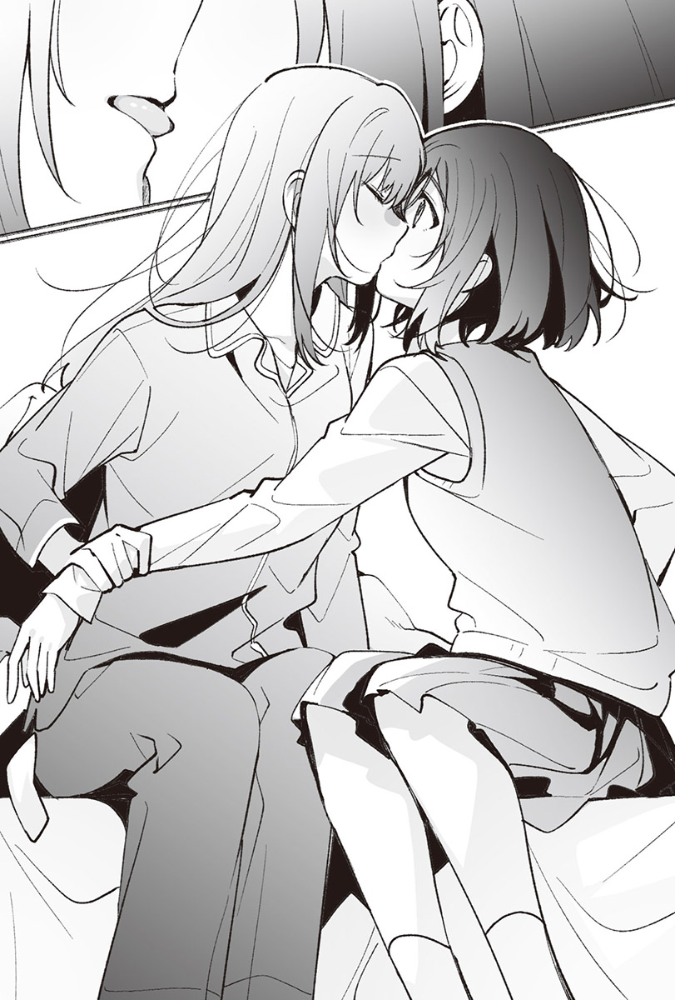「不要。既然會受傷，就別再做剛剛那種事了。」
昨天沒貼的退熱貼。
跟小時候不一樣的自己。
跑到我不帶朋友來的房間裡的宮城。
像今天這種過去與現在交錯混合的日子，真不希望構成舒適放學後時光的宮城冷淡地對待我。失去家人的關心後，我若無其事地在這個家生活到現在，然而今天不行，我沒辦法順利地切割過去。平常不算什麼的小事，今天卻不肯變成不算什麼的小事。
所以才希望宮城能稍微溫柔一點。
就算只有待在這房間裡的時候也好。
宮城來探病了。
這是足以用晴天霹靂形容的大事件，但也僅只於此，並未喚來颱風或引發天災。我依然持續被宮城叫去她房間。
與感冒前沒有任何不同。
即使進入十一月，她依舊在我身邊。
不過這樣的日子當中，仍發生了一些預料之外的事。
在考完期中考後的現在，宮城還是認真地念著書。
她給我看的期中考成績雖然不足以跟我以同一所大學為目標，然而成績並不差，若是她的志願一定考得上，所以我本以為她會說不要再念書了，但她一如以往地繼續念書。
畢竟是考生，念書倒沒什麼好奇怪的，然而她原本很不喜歡耗費多餘心力在念書上，卻花了比維持現有成績更多的心力念書，這景象看起來很不可思議。
我咬下一片從便利商店買來的洋芋片。
妳改志願了？
對於我今天在這裡問她的問題，宮城冷淡地說：「我沒改。」
我從放在桌上的袋子裡再拿出一片洋芋片。
「宮城，張開嘴巴。」
儘管不知道她超乎必要地繼續念書的原因為何，但我把洋芋片拿到苦惱地瞪著課本的她面前。
「我自己吃。」
許久之前我買洋芋片過來時，她說了同樣的話，自己吃下洋芋片；今天則像是仿照那天的行動，從袋裡取出洋芋片，放入口中。
「吃這片啦。」
「不用。」
她立刻否定我的話，明顯地擺出不高興的表情。
要是硬把她的嘴巴撬開，丟洋芋片進去，她一定會生氣。
她對沒感冒的我很冷淡。
要是我今天也感冒，同樣發著燒，她應該會對我更溫柔吧。實際上，記得感冒的我對宮城說了相當任性的話，但她沒有真的生氣。儘管前提是「身為病人」，不過一想到她也會溫柔地對待我，就讓人感慨萬千。真希望她能對不是病人的我也溫柔點。
「才不好，我要餵妳吃，張開嘴巴啦。」
雖然把洋芋片拿到宮城嘴邊，她卻遲遲沒有張口。
宮城像隻討厭人的野貓，總是不順著我的心意行事，一靠近她就會逃跑，伸手便會被咬，留下的幾乎都是很痛的回憶。
儘管如此，在我感冒的日子，縱使冷淡如她只是一時興起，卻仍說要為我做些什麼。即使僅限那天，但在看到那樣的她之後，我便抱著期待。
「宮城。」
我把那片薄得跟紙沒兩樣的馬鈴薯最終下場抵在她的嘴唇上，她一臉打從心底感到不悅的樣子，張開了嘴。
一邊想著真是難得，我一邊將洋芋片塞進微微張開的雙唇之間，薄脆的零食立刻從指尖消失。她皺起眉頭，像是吃了什麼難吃的東西。
不枉我特地買來──雖然這麼想的同時，我也覺得要是她能吃得更開心一點就好了，不過這份不滿被她從我手上吃東西這件事給抵銷。這可不是在餵養她，卻讓我想再多餵些東西給她吃，甚至讓人開始覺得如果繼續餵她吃洋芋片，即使畢業，她也會因為想要食物而跟我碰面。
我又拿起一片洋芋片，送到她嘴邊。
「來，請用。」
還來啊？儘管沒這麼說，但要說她臉上寫著這句話也不為過。她望著我，一臉不情願地張開嘴。
洋芋片靠近，而後隨著輕快的聲音消失。
我的手指順勢按上宮城的嘴唇，她皺起眉頭。
雖然表情看起來很難說願意接受這行為，我的指尖仍沿著她的唇形滑過，接著她像是在吃洋芋片似的，咬了我的手指。
這在預料的範圍內，不過很痛。
之前來這個房間時，我也因為摸她的嘴唇而被她給咬了，今天卻依舊刻意買洋芋片來做這種事，理由非常單純──因為打從感冒臥病在床的那天以來，我跟宮城就沒再接吻過了。在那之後，只要做出感覺會發展成接吻的行為，她就會像這樣明顯地拒絕我。
「宮城，很痛耶。」
她沒把這句帶有希望她能住手意義的話給聽進去，牙齒更深地陷入我的手指。
「既然要動嘴，不如舔我啦。」
這樣說著的我用被咬的指尖碰了她的舌尖，手指這才總算從她的牙齒中解脫。
「不舔我嗎？」
「不要。」
她冷淡地說，視線落到筆記本上，在解到一半的問題後補上幾個字，翻閱課本。
只要餵她吃洋芋片，她就會連我的手都一起吃。
喊痛的話，她會咬得更用力。
叫她舔我，她則會放棄繼續咬我。
總之不會聽我的話。
無論是好是壞，她都會做不同於我所期望的事。
感覺她的反應很明顯。
我卻不知道她一直逃避接吻的理由。
暑假結束後，我們有過一定程度的自律，但那是過去的事了。我們曾在學校接吻，在這個家裡也接過吻，事到如今明明沒什麼好抗拒了，她卻不肯接受我。
不曉得宮城為何如此頑固地想戒掉接吻，問她也一定不會回答我，即使硬要問出原因，也只會被她以命令禁止問問題作收。
她總是這麼奸詐。
儘管沒有到無論如何都想跟她接吻的程度，但我並非完全不想跟她接吻。況且她不但不讓我吻，還要確認項鍊的存在，一下命令無權拒絕的我解開第三顆釦子，一下摸我的胸口，對我為所欲為。當然，我說想碰她也不讓我碰，交換條件同樣不知道消失到哪去了。
她不該因為感冒就溫柔地對待我。也不該接受我吻她。正因為她那天沒像平常那樣抵抗，我才會直到今天仍對她抱有期待。
「宮城。」
我戳戳她的肩膀，要她轉頭面向我。
「幹嘛？我在念書。」
接著把手指塞進她嫌煩地動著的嘴裡。
「舔我啦。」
話一說完，她便咬了我的手指。
好痛。
牙齒咬著手指的力道比剛才更強。
我用空著的那隻手撫摸她的臉頰，一路摸到耳後。
拉扯耳垂後，她放輕咬我手指的力道，我以指尖按住她的舌頭。
「不是叫妳咬我，是舔我。」
這並非命令。
我無權要她服從我，這充其量只是請求，所以她要再咬一次也行，要抓住手腕，把我的手指拔出來也可以，她有權這麼做。
然而她哪個都沒做，聽從我的請求。
溫熱的東西貼上指尖。
舌頭抵了過來，緩緩滑過。
黏膜碰到手指，帶來具體而鮮明的感覺，使神經集中在濡濕的部分上。
溫度明明沒那麼高，卻讓人覺得指尖燙得像是燒起來。感覺彷彿受到宮城的體溫誘導，溫度逐漸累積在我的身體裡。
我緩緩拔出手指，觸碰她的嘴唇，結果食指到第二關節都被舔了。
宮城要是聽到一定會生氣，所以我沒說出口，但總覺得這種時候的她很煽情。
以前也曾像這樣被她舔過手指。
然而當時並不覺得煽情，我清楚地意識到自己正以不同於以往的眼神看著她。
我再度用指尖抵著她的嘴唇，打算順勢將手指塞進口中，她卻粗魯地抓住我的手臂，用力拉開。
「夠了吧？」
宮城說道。即使隔著制服外套，也能感受到她用指甲刺我。
「假如我說還不夠，妳會再舔我嗎？」
「仙台同學，妳知道自己沒有權力命令我吧？」
「我知道。」
老實地同意宮城的話後，她放開緊緊抓著我手臂的手，隨即從套著鱷魚盒套的面紙盒裡抽出兩張面紙。
「擦乾淨。」
我依言用她遞來的面紙擦拭自己的手指，再把面紙揉成一團，丟進垃圾桶，漂亮地投籃成功。而她彷彿等待著這刻，開口說道。
「換仙台同學舔我的手指了，這是命令。」
她的指尖抵在我的嘴唇上，我用舌頭碰觸手指，代替「好」的答覆。
一如宮城剛剛所做的，我讓舌頭緩緩滑過，直到食指的第二關節處。
用力抵上去，能感覺到堅硬的骨頭。
我輕咬了一下。宮城試圖把手收回去，我抓住她的手，吻上手臂。
有些在意現在的我在宮城眼裡是什麼樣子。
她看著我想些什麼？有什麼感覺？
實在好想窺探她的內心。
「仙台同學，夠了。」
她語氣冷淡地說，抽回了手。
但我拉住她的手，咬起指尖。
順勢含住她的手指後，鱷魚被推到我的鎖骨附近。
「我說夠了。」
宮城不停把鱷魚推來，我放過她的手指。
「還可以再繼續喔。」
我奪走鱷魚，抓住她的手，再度將嘴唇靠近手指，然而被抓住的手馬上就溜走了。
「不用繼續，停下來。」
「為什麼？」
「還問我為什麼？妳有點──」
「有點？」
「沒事。」
她沒告訴我講到一半的話後續是什麼，強制結束話題。
「把鱷魚還我。」
我按照宮城的話把套著盒套的面紙盒遞給她。擦完手指後，她不是把鱷魚而是把垃圾拿給我。
「剛剛沒說完的話要說完啦。有點什麼？」
接過紙團後，我將它丟進垃圾桶，可惜這回投籃落空，我起身撿拾垃圾。
「仙台同學是變態。」
「那絕對不是剛剛沒說完的話吧？」
我重新坐回宮城身旁，摸了摸她拿著的鱷魚的頭。
「喂，宮城，剛剛那樣舒服嗎？」
「妳很煩耶。我要念書，不要說話。」
我很清楚。
宮城絕對不會表示很舒服。
儘管如此，我依舊想著──如果她這樣想就好了。
◇◇◇
漢堡排調理包與即溶湯包──
從我手中吃下洋芋片的宮城端出的晚餐，一如往常是無須費心準備的餐點，我們和平常一樣吃下那些東西。
她會詢問我要不要吃過晚餐再回家，但從未問起要不要留宿，因此吃過晚餐後我就回家了。
宮城會對我說的話跟不會對我說的話早有定論。
倘若硬要分類，她對我說的話大多很冷淡，拜此之賜，我總是被她給否定，卻認為這就是宮城，也覺得她這樣就好了。
──直到上個月感冒為止。
我停下正抄寫著黑板上文字的手，望向時鐘。
距離午休還有五分鐘。
我在筆記本上畫了隻鱷魚，視線再度移回黑板上。
距離最後和宮城碰面的日子又過了幾天。
九月時因為暑假的餘韻，總覺得畢業典禮還有很久；十月忙著應付校慶和期中考，沒空思考剩下多少時間。然而進入十一月後，畢業典禮突然成了切身相關的事。以天數來看，距離畢業仍有一段時間，可是中間有寒假，第三學期又有一半以上的日子可以自由選擇要不要到校。
時間所剩無幾。
這樣一想，我就想問些宮城不會對我說的話。
都怪那場感冒使我知道她也能溫柔地對待我，變得相當貪心。
我讓畫在筆記本上的鱷魚背上長出面紙。
鐘聲很快就響了，老師宣告下課。收好課本和筆記本的我朝羽美奈的位子走去，拍了一下她的肩膀。
「羽美奈，我要去福利社，妳們先吃吧。」
「好，可是妳的便當呢？」
「今天沒有。」
耳邊傳來她隨意地說著：「這樣呀。」我回了一句：「那我走了。」拿起錢包。鑽過成排的課桌椅，正打算走出教室之際，我聽見羽美奈大喊而停下腳步。
「葉月！幫我買草莓果汁，等等再給妳錢。」
「我也要。」
麻理子也跟著說。我抬起手回答。
「OK～」
她們要買的東西沒什麼大不了的，我隨口答應，一邊盯著教室內往外頭走，結果撞上了什麼。
「哇！」
「未注意前方」這句話浮現腦海。
儘管沒有走得很急，但我沒有看著前面。
「對不起，妳沒事吧？」
我一邊道歉，一邊跟撞到的某人對上視線，發現是我見過的人。
「我才該道歉。」
宇都宮舞香──
宮城不僅常常提起她的名字，她也總是和宮城在一起，所以我很清楚她的長相，但對她而言，我不過是以前的同班同學，畢竟彼此並非熟稔得會向對方搭話的交情，於是我挑了句無傷大雅的話。
「沒事吧？」
「我沒事。」
她簡短回答後便繼續往前走。
而我也不能就這樣駐足，便邁步朝目的地前進。
學校的內部構造非常單純。
走廊是筆直的，一側是窗戶，對側則是成排的教室，能走去的地方僅限於此，說到午休時間會去的不外乎廁所或福利社。不管怎麼想，宇都宮的路線目的地都跟我一樣。
「那個……我是二年級的時候跟仙台同學同班的宇都宮，還記得我嗎？」
方才默默走在前頭的宇都宮停下腳步，突然開始自我介紹。
「當然記得。」
我經常聽宮城提起宇都宮。
但這話不可能跟她說，所以我回了個安全的答案，跟她一起往前走。
明明是她主動搭話的，卻沒再開口，就這樣默默走著。可能是因為撞到之前的同班同學，目的地又一樣，她覺得不好什麼都不說才會自我介紹吧，結果卻演變成更令人在意沉默的狀況。
然而我同樣無話可說，彼此只得靜靜地走在走廊上。
由於要去的地點相同，事到如今也不方便拉開距離。
我很怕這種什麼都沒有的空白時間。
假如對象是宮城，就算一直保持沉默也不會讓人在意，但是換成宇都宮我就撐不住了。完全不認識的話另當別論，倘若認識，我就會想說點什麼。說是這樣說，然而我跟宇都宮的共通話題屈指可數，所以能說出口的話當然已經決定好了。
「宇都宮，妳要考哪所大學？」
拋出很符合考生身分的話題後，她回答了一所離我的志願沒多遠的大學。
「哦……我也要考外縣市的大學呢。」
她問起是哪所學校。告訴她大學名稱後，我又說：「要是考上，說不定會在那邊遇上呢。」延續這個有限的話題。
「那志緒理……呃，二年級時一樣跟我們同班的宮城志緒理，也想跟我考同一所大學，所以──」
「咦？」
我忍不住出聲，打斷宇都宮的話。
宮城志緒理。
隨著不用反問也很清楚的名字一起聽到的話完全出乎預料，讓我停下腳步。
宮城應該是要考本地的大學啊。
──為什麼？
「咦？呃……咦？」
宇都宮一臉驚訝地看著我。
看來我發出的聲音好像比自己所想的更大聲。
「啊，對不起，只是想說原來宮城的成績還滿好的啊～」
儘管這話說來有些失禮，但我想不到其他話能帶過這個尷尬氣氛了，這也沒辦法。
「因為她最近好像很認真在念書。」
雖然不到覺得我很可疑的程度，不過宇都宮一臉疑惑地回答。
我想她只是為了打破沉默才會提起宮城，也同樣只是因為我的反應超乎預期才會嚇一跳。就這樣帶過這個話題，避免再度提起宮城，便能讓這件事作為抵達福利社前的閒聊而落幕。
我邁開停下的腳步。
在走廊上往前走了一步後，我的嘴巴彷彿配合著腿，自作主張地動了。
「宮城真的要考那裡？」
「因為說得突然，我也不知道是不是認真的，不過她說想報考。」
「這樣啊……」
「……那個……仙台同學跟志緒理是朋友嗎？」
我們方才應該是在閒聊才對，宇都宮卻像是在察言觀色地壓低聲音。我望向她的臉，或許是因為緊張吧，表情有點僵硬。說不定她就是想問這件事才向我搭話的。
「為什麼這麼問？」
我笑著反問。
「因為之前在走廊上和志緒理相撞的氛圍，以及在走廊上擦身而過之際，仙台同學似乎不時會看著志緒理。況且妳也曾把志緒理叫出去過，我才隱隱約約有這種感覺。」
總覺得她相得敏銳，觀察入微。
我不記得自己有盯著宮城，然而擦身而過時，視線確實會飄過去，也曾跟她四目相對。即使約好在學校不往來，彼此在校外卻有著以「深刻」形容也不為過的關係，因此無關乎個人意願，我的身體會自然地做出反應。
「我們不是朋友喔。之前會叫她出來，也是因為老師要我去叫宮城而已。」
我面帶笑容地這麼表示，稍微加快了走路的速度。
「……是我多心了嗎？」
自言自語般地說完後，宇都宮說：「我先去買果汁了。」朝著自動販賣機走去。我跟她沒有要好到會一起走去自動販賣機，於是先去買了三明治，再連同羽美奈她們的份買了果汁，走回教室。她們正熱烈地聊著關於男朋友的話題。
午休時間和羽美奈她們一起吃午餐還滿開心的，一想到再過幾個月就聽不到這些沒意義的聊天內容，多少讓人有些寂寞。但今天她們的對話之於我完全是左耳進右耳出，既不覺得開心，也不覺得寂寞。
我只有隨便應聲，咬著三明治。
完全沒聽說宮城要考外縣市的大學。
我曾想過要是同一所大學不行，附近的大學也是選項，卻又覺得提了也會被冷漠拒絕，所以沒對她說過。她卻不知何時決定跟宇都宮報考同一所大學──離我要考的大學沒那麼遠的學校。
不對，事情還沒成定局。
她只是有可能會報考，還不確定。
然而從考試後她仍認真念書的狀況研判，宇都宮的話應該是真的。既然是這樣，宮城之所以不揭露這個事實，是因為不想讓我知道，也代表報考那所大學的理由不是我，而是另有目的。
儘管覺得她選擇外縣市大學的理由要是我就好了，不過想和宇都宮上同一所大學更有說服力。
唉，除此之外也沒其他理由了吧。
這是理所當然的。
我和宮城的交情沒有到會誓言要上同一所大學，縱使上不了也要上鄰近的大學，約好一直當朋友的地步。她不僅劃出了界線，表示彼此目前的關係只會持續到畢業，也不讓我吻她，應該沒有即使畢業也不想跟我分開的念頭吧？
假使有不想分開的對象，想必會是宇都宮。比起只是同班過又不是朋友，什麼都不是的我，她選擇宇都宮根本沒有哪裡不對。
沒錯，這很正常。
但一點都不好玩。
宮城跟宇都宮是朋友，關係不在這之上，我沒打算懷疑這件事。
而我和宮城雖然並非朋友，卻在與宇都宮不同的意義上成了「親暱的關係」。儘管如此，宮城依舊選擇了只是普通朋友的宇都宮。這個事實倒不至於讓人不爽，胃卻絞痛起來。
三明治不太好吃。
我的味覺出了問題，竟然會覺得宮城做的──正確來說是宮城拿去加熱的東西就是了──端出的那些感覺很不健康的食物更好吃。
嚥下乾燥的麵包，喝了一口買來的奶茶，口袋裡的手機響起。我看向螢幕，宮城傳了一如往常的訊息過來。
我想在她家以外的地方聊聊。
猶豫了一下後，我傳了跟平常不一樣的訊息給她。
『放學後來音樂準備室，我等妳。』
上完所有課之後，仍然沒收到她的回應。
原本我就認為宮城一定不會回覆，這並不奇怪。
於是我理所當然地朝音樂準備室走去。
◇◇◇
宮城說不定會來，也有可能不會來。
雖然校慶後找她過來時她來了，可是想到那天我所做的事情，她不來的可能性比較高。
可是……
要是宮城來了……
今天從宇都宮那裡聽到的消息……
我想問她。
──總覺得不太舒服就是了。
胃是不痛了，胸口深處卻悶悶的。
腦中浮現的全是負面的念頭，心情開朗不起來，感覺就像是看著只疼愛姊姊的父母而鑽牛角尖，只會湧現各種悲觀的想法。
這樣的我很不好。
花了不少腦筋，機靈地待在班上還不錯的位置，享受不錯的校園生活──那樣的我感覺快消失了。
吸氣，再吐氣。
我靜靜走在不是很大的音樂準備室裡。
即使選擇外縣市大學的理由與我無關，宮城仍選了與我要考的大學相距不遠的學校。
不管理由為何，比起遠，近當然更好。
單純地這樣想就輕鬆多了。
儘管不想主動承認，但我不希望跟宮城分隔兩地，對於她選擇和宇都宮上同一所大學，我雖然覺得心裡很不舒暢，彷彿走在淺灰色的世界裡，不過把重點放在「近」這個字上比較好。只要她就在離我沒那麼遠的地方，彼此的關係理應不會徹底斷絕，一旦這麼想，總覺得我就能容許一定範圍內的事。
反正我也沒辦法立刻整理好所有心情。
既然如此，比起主動墜入絕望深淵，不如選擇某種層面上更好一點的思考方式。
我說服了無法接受的自己，想辦法讓心情轉往好的方向，這並非什麼壞事。
然而仍有其他問題。
我所認識的宮城很不老實。
即使要她告訴我報考哪所大學，她也絕對不會說吧。我也不想搬出宇都宮的名字，要是提起她，感覺宮城一定會說：「只是找她商量而已，沒有要考。」全力否定這件事。
話是這樣說，但若不提及宇都宮，實在很難確認今天聽到的消息究竟是不是真的。
即使如此，我依舊不想放棄。
但要是宇都宮把午休時發生的事情告訴宮城──
宮城打算和宇都宮考同一所大學。
倘若宮城意識到我知道這件事，事情就棘手了。她就算對宇都宮說：「我還是去考本地大學好了。」也不奇怪。
腦中想不到什麼愉快的事。
唯有問題在腦海裡閃啊閃地發著光。
我停下一直在準備室裡走來走去的腳步。
看向時鐘，來到這裡後已經過了十五分鐘。
「她可能不會來吧……」
再等也就五分鐘。
或許是因為十一月也要過了一半，冬天就快來臨，音樂準備室有點冷。這裡不是該長時間等人的地方。
真要說起來，就算是宮城，也不會讓我等上個三四十分鐘才對。希望如此。
我走近放著樂器的架子。
望著入口。
閉上眼睛再慢慢打開後，門靜靜地開了。
說不上短，但也說不上長的裙子映入眼簾。
不高興地皺起的眉頭。
沒說半句「我來晚了」或「抱歉讓妳久等了」這種貼心的話。
宮城默默地接近。
半長不短的頭髮隨著步伐晃動，她在我前面一點的位置停下腳步，一臉嫌麻煩地開口。
「說好在學校不說話的約定呢？」
她以書包重重敲了一下我的腿。
「想守住約定的話，妳遵守就好啦。不過妳也沒遵守，表示約定根本不重要吧？」
「我要回去了。」
用比室溫更低的語氣說完後，她立刻想打道回府，我開口叫住她。
「等一下啦，我是真的有事才叫妳過來的。」
「反正一定是什麼無聊事吧？不用在這裡，在我家講就好啦。」
儘管嘴上抱怨，她依舊把書包放到地上，看著我。
「因為我不想被妳命令。」
我燦爛地笑著說，她回以一個露骨的不滿表情。
「有事要說就快說。」
我要說什麼，又該怎麼說呢？
直到現在仍然沒整理好思緒，即使再想五分鐘，我也不覺得自己能整理好。
但凡事情扯上宮城，我的腦袋就驚人地無法運轉，結果還是只能像平常一樣，直接拋出問題。
「……妳的志願是哪所學校？」
「妳說有事就是要問這個？」
「對。」
「我說過很多次了。」
「畢竟大學又不是只能報考一所，我想說妳搞不好還有其他想考的地方。」
「沒有。」
答案一如預期，我用手指彈了一下裝有樂器的盒子。
大學的話題是宮城不會對我說的事情之一。
雖然很想追問下去，可是我也明白她不會回答。
我想知道的事她總是不告訴我。
沒有方法能確認宇都宮的話究竟是真是假。
「考一下嘛。現在說不定能考上更好的大學，難得妳都認真念書了。」
儘管覺得行不通，我還是試著從宮城口中套出想知道的答案。
「妳很煩耶，別再提這個話題了。」
「我在這裡不會聽妳的命令。」
「這不是命令，要是想說，妳就一個人說到滿意為止吧。我無話可說，要回去了。仙台同學等等到我家來。」
她單方面地結束了對話。
雖然早就知道，但我依舊覺得她很冷漠無情，也知道要是再繼續延伸這個話題，她只會以更冷漠的態度相對。然而死到臨頭仍不肯放棄的我，不想讓她就這樣回去。
「妳沒有想跟朋友上同一所大學嗎？」
我很想說出宇都宮的名字當成具體範例，卻還是把她的名字給吞了回去，封在胃裡。
「……妳突然說什麼啊？」
「這種事情不是很常見嗎？想跟感情要好的朋友上同一所大學。」
「這麼說來，妳今天有和舞香說話吧？」
宮城沒回答我的問題，微微皺起眉頭反問我。從她的反應研判，宇都宮應該有把碰到我的事情告訴她，既然如此，我就不能裝作沒聽到宇都宮的名字，硬是推進這個話題。
「妳問宇都宮的話，我在前往福利社的途中有遇到她。」
「妳跟舞香說了什麼？」
「她問了我之前把宮城叫出來的事情。」
「就這樣？」
「就這樣。她有說什麼嗎？」
「她跟仙台同學說了一樣的話。」
「這樣啊……」
看來宇都宮沒跟宮城提起大學的事。
所以我別再繼續追問下去比較好。
讓話題就此結束，便不會演變成麻煩事了。
儘管心知肚明，心裡卻仍有個念頭想繼續說下去。
「妳滿意了吧？我要先回去了。」
宮城打算拿起放在地上的書包，我反射性地抓住她的手。
「幹嘛？」
不悅的聲音傳來。
「要不要再聊一下？」
「不要。要聊的話，回去再聊也行吧？」
「是沒錯啦……」
我知道。
卻不想放手。
握得緊緊的，想讓抓著她的手與她之間沒有任何空隙。
她的手比我在感冒那天牽著的更冰涼。
即使有兩個人在，音樂準備室依然很冷，手摸起來會冰冰涼涼就是因為這樣，我的手想必也很冰。說是這樣說，但我不是為了暖手才抓住她的。
「仙台同學，回去再說。」
「再待一下啦。」
要是放手，我又會好一陣子牽不到她的手了，想到這裡就不想放開。
想牽手、想多碰觸她。
我沒辦法好好處理這些心情。
我想這是因為都是宮城在碰我。
也覺得是因為她什麼都不說。
「宮城。」
我呼喚她的名字，往她靠近一步後，她甩開我的手。
「我不會跟妳接吻。我要回去了。」
「我什麼都還沒說耶。」
可能是回想起我過去在這裡做過的事情了吧，她的聲音冷漠萬分，但我只是想再多碰碰她，並非想要接吻。
「妳接下來有可能會說啊，這只是先發制人。」
「妳誤會了，我只是想碰妳而已，因為妳平常也總是在碰我嘛。」
「用『也』太奇怪了吧？我才沒碰仙台同學呢。」
我解開了在學校不會解開的襯衫第二顆釦子。
拿出項鍊給她看。
「妳不是一直都在摸這個嗎？」
宮城每次叫我過去，總會要我讓她摸平常藏在襯衫底下的項鍊。然而就算我想摸同一個地方，也會被命令給制止。
「那是在摸項鍊，不是在摸仙台同學。」
「即使如此，妳依舊連同項鍊一起摸了我，所以讓我碰妳啦。每次都只有妳碰我，太奸詐了。」
我又走近一步，朝她的臉頰伸出手。
將掌心貼上她的臉頰後，可能是手很冰吧，宮城嚇得抖了一下。我順勢讓手滑過脖子，解開她的領帶，然而在我解開她的襯衫釦子前，手臂就被抓住了。
「妳很變態耶，住手啦。」
她語氣強硬地這麼說，拉開我的手。
「宮城的命令在這裡無效。」
「也是。我買下的是在我房間裡的仙台同學，不是學校的仙台同學。」
「知道的話就老實點，別亂動。」
「可是妳也一樣，無權在學校對我做什麼。」
「妳之前明明讓我吻妳耶？如果吻妳都可以了，讓我碰一下也行吧。」
說出曾經在這裡發生的事實後，宮城面有難色地重新繫好領帶，隨即以不帶感情的語氣說。
「……想碰我的話，妳就做點相對應的事啊。仙台同學很喜歡交換條件吧？」
「倒不是喜歡，不過──交換條件是什麼？」
反正一定不是什麼像樣的條件。
儘管如此，我依舊詢問宮城。
我不討厭仙台同學碰我。
然而只要容許一件事，她就會得意忘形，比我容許她做的想要得更多，所以不能什麼事情都容許她。但我滿喜歡接受交換條件這個提議，乖乖聽我說話的她。
我坐到放在音樂準備室一隅的舊椅子上。
「舔我的腳。」
過去她已經聽過這句話好幾次了。
儘管如此，她依舊露出驚訝的表情。
「咦？」
「沒聽到嗎？我叫妳舔我的腳。」
「……在這裡？」
「妳能在這裡舔的話，我就讓妳碰我。」
仙台同學幾乎不會違背我的命令，不過只限於在家裡，再怎麼說應該也不會在學校舔我的腳。
正因為覺得她辦不到，我才會選這件事當作交換條件。
雖然只要是她會想拒絕的條件，無論什麼都好，但我想不到其他還有什麼會讓她遲疑要不要執行的命令了。剛剛下的命令絕對不是個好命令，不過作為交換條件不可能成立，因此仙台同學只能死心，意外地是個可以輕鬆且和平解決問題的命令才對。
「妳知道這裡是學校吧？不是宮城的房間喔。舊校舍不太會有人來沒錯，但要是被人看到該怎麼辦？即使是交換條件也太超過了吧？」
不出所料，仙台同學一一陳述起無法接受交換條件的理由。
「那就當妳辦不到，可以吧？」
我開口問她。只見她望向音樂準備室的入口。
眼神搖擺不定，或許是在思考些什麼吧。
趁著她猶豫不決之際，我決定了答案。
「當作交換條件不成立就行了吧？我要回去了，仙台同學等等再到我家吧。」
就算她仍有話要說，回家再說就好了。
今天的她盡是問些我不想被她問起的事，所以在家我也不是很想跟她講話，但總比繼續在這裡說話好。若是在家裡，也能用命令強制結束對話。
我從椅子上起身，拿起書包，正打算走出去時，仙台同學出聲叫住我。
「等一下。」
說完，她在我開口之前就搬了椅子過來。
「坐下啦，妳想要我舔妳的腳吧？」
「不用勉強。」
「我沒勉強。妳安靜坐下啦。」
「要是有人來了怎麼辦？」
「沒關係，屆時我會說是宮城命令的。」
「那樣我有關係啊。」
「就算有關係，也是妳自己提出的交換條件，所以坐下啦。」
剛才仙台同學猶豫了。
沒有立刻聽從要求，這毫無疑問是令她難以接受的交換條件，最終卻決定聽令照做。
縱使得吞下讓人猶豫的條件，也想要實現的事情。
我不認為那單單只是「想要碰我」而已。
「……妳不惜做到這種地步也想做的事到底是什麼？」
「我應該說了吧，只是想碰妳啊。」
「真的只有這樣？」
「對啊，我不會做會惹宮城生氣的事。」
直直地盯著我的仙台同學這麼說。
沉穩的聲音不像在說謊，可是我不相信想在不生氣的範圍內碰我這種事，會讓她願意接受在這裡舔我的腳這種條件。真要說起來，她沒道理想做這種事，照理說沒有這麼做的契機才對。
儘管如此，她的眼裡現在只有我。
讓「她為什麼接受了交換條件」的疑問成了微不足道的小問題。
她的襯衫連第二顆釦子都解開了，我看得見項鍊。
到畢業典禮前的她就該是這個樣子，當下也實現了。一想到這裡，我便覺得自己的心情還不錯。
「宮城，趕快坐下啦。」
提出交換條件的人是我。
並非聽從仙台同學的話，而是為了對自己的話負責而坐到椅子上。她緩緩地跪在地上，脫掉我的室內鞋和襪子。
音樂準備室的門關著。
或許是有些不安吧，她像是在確認入口般地看著門。
沒有說話聲從走廊傳來，也沒有腳步聲，只聽得見她輕輕呼出一小口氣的聲音。
視線從門移回我身上。
不是舌頭，而是指尖滑過腳背。
柔軟地壓上來的手指感覺癢癢的，我輕輕踢了仙台同學的腳。
「不是這樣，用舔的。」
猶如回應我的話，她握住我的腳跟，腳被她稍微抬了起來，靠向她的臉。不像舌頭那麼濕的東西壓上我的趾根處──我馬上就知道那是她的嘴唇──伴隨小小的聲響，嘴唇一再碰上腳背。
我以腳抵著她的嘴唇，藉此抗議她沒有遵從我叫她舔的命令，比嘴唇更熱、更濕的東西隨即朝腳踝移動而去。
「這樣就行了吧？」
仙台同學抬起頭問我。
「不行。」
當然不行。
決定實踐這件事的是仙台同學。
怎麼可能容許她就這樣敷衍了事？
「妳好好舔啦。」
「我舔了吧？」
「剛剛那樣不算。」
「我覺得算啊。」
「不算。」
斬釘截鐵地說完後，仙台同學把我的腳拉過去，咬了腳拇指，雖然有控制力道，咬我的力氣依舊不小，很痛。儘管開口想抱怨，但在說話之前，我的腳背就被舔了。
舌尖一路滑動，爬上腳踝。
溫熱的舌頭宛如撫摸著肌膚般移動的觸感，感覺沒有那麼不好。
第一次被仙台同學舔腳之際，雖然是自己提出的要求，我仍覺得有些噁心。然而像她這種跟我幾乎沒有任何交集的人聽從命令，舔我的腳這件事，讓人有股近似於優越感的感受。
可是現在跟當時不一樣。
滑過骨頭上的舌頭令背脊一陣發麻，簡直宛如電流竄過的感覺，跟噁心截然不同。
我腳上稍微用力，抵著她的舌頭，舌尖便貼在我的腳上，用力抵了回來。
她的體溫在稱不上溫暖的音樂準備室裡感覺相當舒適。明明願意接受這種條件，卻有不肯退讓的事，讓我對她相當不滿。
為什麼？
為什麼她要去念外縣市的大學？
執拗地要我改志願，自己卻沒打算要改。
不，我曉得她堅持要念外縣市的大學，是因為家庭環境。但她都在學校做出這種事了，卻不願意考慮一下我曾說過一次的「留在這裡」，讓人很不爽。
即使想像得到原因，我依然無法接受。
所以才不想把大學的事情告訴她。
儘管曾跟舞香說我想跟她報考同一所大學，但要是告訴仙台同學相同的事情，她八成會認為我是在追隨她的腳步，感覺很討厭。
但是我很在意。
倘若說出這件事，她會用觸碰我的舌頭、嘴唇，溫柔地以對我來說並沒有那麼溫柔的聲音，說些什麼呢？
「宮城，還要繼續嗎？」
「繼續舔啦。」
我輕輕踢她。
她一瞬間板起臉，不過立刻垂下視線，既非舌頭也不是嘴唇的東西碰到我的腳──她的指尖撫過腳跟，奔上小腿肚。裙子被掀起，柔軟的嘴唇碰觸膝蓋，濕滑的舌頭爬了上來。
舌頭緩慢，時而用力地觸摸著膝蓋。
那顯然與剛才不同的舔法讓人忍不住想縮回腳，但馬上又被拉回去。
心臟彷彿緊緊地收縮，好難受。
她宛如要拭去打翻的液體，不斷地舔著我的腳。
這下不妙。
雖然不想回憶，記憶卻重新復甦。
暑假最後一天，在我的房間裡，仙台同學──
我屏住呼吸，伴隨流瀉的記憶吐出一口氣。
一旦鬆懈下來，事情總是會變成這樣。
之前命令她舔我手指時，她也不肯普通地聽從命令，用了比起舔舐，更會讓人聯想到別種意義的方式來舔。
「停下來，結束了。」
我伸手推著她的頭，想讓她遠離膝蓋。
然而別說遠離，她反而更用力地吸吮、輕咬。
暑假時，我覺得跟她做那種事情也沒關係，當時的確有過這種想法，現在卻不認為彼此該做那種事。
差點覺得可以繼續下去的我錯了。
這並非該對仙台同學懷抱的感情。
她的嘴唇碰上比膝蓋略高的位置。
「仙台同學，住手啦。」
在音樂準備室的一角，我沒有講得很大聲，但她不可能聽不到。
即使如此，她仍超乎必要地掀起我的裙子，吻上膝蓋內側。
原本藏在衣物下的部分接觸到準備室裡的冷空氣，應該要覺得冷才對，卻只有她碰觸的地方很熱。
嘴唇再一次壓上來，傳出小小的一聲「啾」。
她的手輕輕握住我的膝蓋往外側推。
溫熱的東西在緊貼上大腿後離開。
卻很快地又貼了上來，用力抵著大腿。
感覺很癢，我的身體微微扭動。
她原本碰著膝蓋的手緩緩滑動，滑溜地想鑽進我的裙底深處。
──這樣下去不行。
我把手伸向仙台同學的頭。
就這樣按住她的頭，重新審視自己的腿。
這模樣還真糟。
她的頭不但在我的兩腿之間，裙子還亂得見不得人。一想到只有我是這副模樣，總覺得好丟臉。
別說一句，我甚至想抱怨個十句二十句，但還是先一把推開仙台同學的頭，整理好凌亂不堪的裙子。
「我沒叫妳做這種事。」
我把想抱怨的話濃縮成一句丟出去，瞪著表現得一臉若無其事的她。雖然下過很多次要她舔我腳的命令，卻從未遭受這種對待過。
「我只是照宮城說的舔腳而已啊。」
「才不是只有舔呢，妳還做了奇怪的事。」
「那這樣的就行嗎？」
她稍稍掀起我的裙子，舌頭舔上膝蓋──這個我沒吩咐的行為讓人嚇了一跳，腳也隨之一顫，猶如濕潤軟糖貼在皮膚上的觸感逐漸接近大腿。我按住仙台同學的頭。
「住手啦。是說那裡根本不是腳。」
「是腳吧？那裡是膝蓋耶。」
「不對，膝蓋不是腳，膝蓋是膝蓋。」
「照這個說法，從哪裡到哪裡算是腳啊？」
說完，仙台同學摸了一下我的小腿肚，手指還很順便地爬上來。我拍掉她的手。
「就此結束，腳的範圍根本不重要。妳再退開一點。」
我用力推開她的額頭，她乖乖地退開了，讓人有點意外。然而只有一開始聽我的話，她馬上又抓住我的腳。
「幫妳穿襪子。」
「我自己穿就好。」
「妳的襪子明明在這裡耶？」
擠成一團的襪子塞在她方才幫我脫下的室內鞋裡，鞋子則在她旁邊，不是坐在椅子上的我可以輕鬆拿到的位置。
「還我啦。」
「都說要幫妳穿了，妳繼續坐著。」
我的腳被她抓著，想站也站不起來。就算她沒說，我也只能坐著，無法自己去拿，也無法穿上襪子。
不得已，我照著她的話做。
她的指尖碰上我的腳背，有些癢癢地慢慢撫摸著，隨即動作俐落地幫我穿上襪子。
我不太喜歡沒事就會做出這種行為的她。
這並非普通的行為，她卻馬上接受、習慣這些不普通的行為，將之視為理所當然，彷彿我被納入她的日常生活中，讓人很不愉快。
仙台同學根本不在意我在想什麼。
還看似理所當然地幫我穿上室內鞋，吻了膝蓋。
「就叫妳別做這種事了。」
「我下次會注意。」
她以根本沒反省，也不像會注意的表情這麼說。
要是繼續坐著，不知道她還會對我做些什麼。
我站起身，整理著根本沒被碰到的制服外套。仙台同學也站了起來，拍掉裙子上的灰塵後開口說道。
「所以交換條件呢？我可以碰宮城了吧？」
她理所當然地主張自己應有的權力。
「可以，妳碰啊。不過不只接吻，妳也不准脫掉我的制服，解開釦子一樣不行。」
「事後才補上這些條件也太奸詐了吧？」
「才不奸詐，因為妳馬上就會做些奇怪的事，不加上這些條件很危險啊。況且妳不會做惹我生氣的事情吧？」
針對過度行為的懲罰。
──其實不到這種程度，但我不知道原本只是讓她能盡情碰我的交換條件，會一路攀升到什麼境界。她說不定真的只會碰我一下，然而回顧過去的行徑，我根本不可能相信她。
「是啦，跟剛才說的一樣，我不會做惹宮城生氣的事。」
她用比隨風飛舞的樹葉更輕的聲音說，粲然一笑，可是那個柔和的笑容是我在學校看到的她才會露出的笑容，反倒讓人更無法信任。
「真的別做什麼奇怪的事喔。」
保險起見，我再三叮嚀後，傳來她不滿的聲音。
「我就這麼不能信任嗎？」
「妳想想自己剛才做的事情，反省一下如何？」
「我已經反省過了。」
「……那就好。」
我很擔心。
但即使做出太過火的行為，她依舊遵守了約定。
因此我也該遵守約定。
我緊盯著她，她一步兩步地逐漸接近。
不知道她會做些什麼，我的身體緊張地僵硬起來。
她來到和接吻差不多近的位置時，我反射性地往後退，腳卻撞到椅子。
椅子發出了巨大的「喀啦」聲，仙台同學抓住我的手臂──
隨即抱住我。
「……這是怎樣？」
彼此的距離比接吻時更近，我自言自語般地嘀咕著。
「一般來說是叫擁抱啦。」
「我知道。」
雖然知道，仙台同學的距離卻近得讓人忍不住想問。而且這還是第一次被她擁抱，身體輕飄飄的，甚至覺得室溫較低的音樂準備室裡好熱。
心臟也好奇怪。
明明沒做什麼，卻噗通撲通地吵個不停，感覺都要被仙台同學聽見了。
「妳不要留在這裡啦。」
她突然說了我從沒想過的話。
「叫我別留在這裡，是在說哪件事？」
我大概知道她想說什麼，儘管如此還是反問她。她在手臂上施力，更用力地抱住我。
「在說妳選一所我們能一起吃飯的大學如何？」
我想看她現在臉上是怎樣的表情。
然而因為環繞在背上的手臂，我的身體動彈不得。
能將仙台同學的感情傳達給我的，唯有耳邊聽見的聲音，可是她的聲音毫無起伏，語調相當平緩，讓人甚至無從想像她的表情。
「仙台同學無權決定我的志願。」
我小聲地回答後，傳來的是她平靜的聲音。
「我們現在不也總是在宮城家一起吃飯嗎？不覺得要是畢業後也能不時一起吃飯，會很開心嗎？」
她沒接受我的否定，談起了畢業後的事。
我不知道該回答什麼才好。
她所說的未來感覺很開心。
比起一個人吃飯，和她一起吃飯比較好吃，即使不說話，只要有人待在身邊就能安心。我也覺得要是畢業後不能再見到仙台同學的話會很無聊。
卻沒有足夠的自信相信她所說的話。
畢竟當下的我不知道她臉上是什麼表情，語氣聽起來也並非真心，讓人無法相信就算畢業了，她還會想跟我一起吃飯。
「宮城？」
耳邊傳來她的聲音。
「好了，結束了。」
我沒提及畢業後的夢想，想掙脫她的懷抱，但環繞在背上的手臂沒有鬆開。
「再抱一下也沒關係吧？」
「不行。」
「好啦。」
「才不好。」
「說好嘛──志緒理。」
她低聲呢喃，有個柔軟的東西碰上我的耳朵。
我馬上就意識到那是嘴唇。
緊緊湊上來的嘴唇感覺好癢，我用力地推開她的身體。
「別叫我的名字。」
像是要撕掉塗了膠水的紙，一鼓作氣地扒開她的身體，擦了擦耳朵。
「妳命令的內容那麼沉重，相較之下，我能做的事未免太少了吧？」
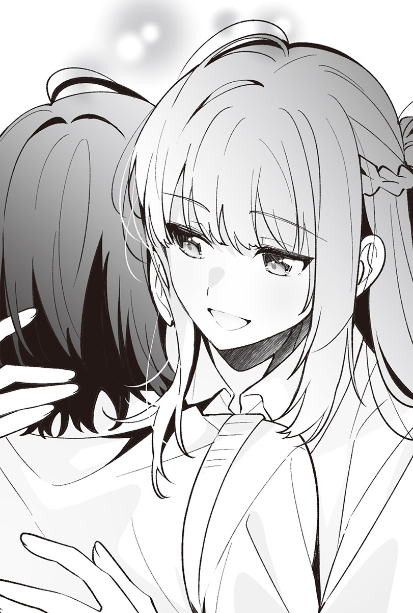仙台同學看著我，不滿地說。
「已經很夠了吧？」
儘管事後才補上條件，但她一開始就知道自己能做的事情沒那麼多了，所以我沒道理聽她抱怨，也沒有更多能做的事了。況且即使吻的是耳朵，依舊違反了不接吻的條件。
再說她居然抱住我，簡直就像──
宛如要抹去浮現出的話語般吐出一口氣，我抓起書包。
「如果我以後在這裡也會聽宮城的命令，可以再碰妳嗎？」
「不可以。」
她越是接近我，我就越覺得她待在我身邊是理所當然的。
即使畢業，也會在我身邊，跟我一起吃飯。
而我也會一如往常地命令她，覺得這樣的每一天會延續下去。
但這當然是不可能發生的事。
「嘴上說不行，但要是我叫妳過來，還是會來吧？」
「不會來，妳別叫我來。」
「好好好。」
她的語氣隨便到我實在不覺得她有把話聽進去。說完之後，她牽起我的手。
「幹嘛？」
「不是要回去了嗎？」
「跟妳牽著手回去？」
「當然是開玩笑的嘍。」
仙台同學笑著放開了手。
「我先回去。仙台同學等等再走。」
我離開她身邊，保持著距離。
「等等是幾分鐘？」
「十分鐘後。」
「五分鐘就好啦。」
「不要，總覺得妳會用跑的追上來。」
其實我不覺得她會跑來。
只是想要一點時間。
因為在短暫的時間裡發生了太多事，我原本就不好的腦袋都要燒壞了。
我背對仙台同學走出音樂準備室。
啪噠啪噠地走在走廊上，接著回頭。
後面當然沒有仙台同學的身影。
走出舊校舍後，我朝著校舍出入口前進。
學校裡雖然不至於完全沒有人，走廊上卻安靜得讓我有種是不是沒人的錯覺。要是這時天色已暗，我說不定會怕得衝出學校，不過今天外面的天色還很亮。我以快走的速度前進，路上沒和任何人擦身而過，來到鞋櫃前。
我換上鞋子，走到室外。
在因為寒風而顫抖的同時回頭。
仙台同學不在。
這是當然的。
畢竟是我叫她過十分鐘之後再出來的，她遵守著指示。如果不想遵守這個指示，她會亂找些理由跟在身旁才對。
好比說因為目的地是一樣的。
我今天傳了平常會傳的訊息，叫仙台同學來家裡。雖然她回了「放學後來音樂準備室，我等妳。」這種訊息，導致一切都亂了套，但我們接下來要去的地點是一樣的。由於要去的是我家，可以一起回去，但我們約好在學校不會和對方扯上關係。
所以這樣就好了。
我「呼」地吐出一口氣。
冰涼空氣不到將周遭染成一片白的程度，卻完全感覺不到半點溫柔，讓人意識到今年的氣溫比去年的同一時間更低。
仙台同學一不在就好冷。
在音樂準備室，因為她太靠近了，反而讓人覺得很熱。
──不對。
只有仙台同學碰到的地方很熱而已，冷不冷跟她沒關係。
我轉向前方。
要是走得這麼悠悠哉哉，我會被她給追上。
突然抱住我，叫我別留在這裡。
她做過的事跟說過的話全都令人在意，然而眼下不是在意那種事情的時候。要是想得太深，我會無法行動，甚至會開始覺得她做的所有事情都是有用意的。
我走出校門，以不會喘的程度快步朝家裡走去。
路上和幾個人擦身而過，經過好幾間店，我在每週會繞去幾次的超市前停下腳步。
今天冰箱裡是不是什麼都沒有啊？
沒有冷凍食品，也沒有調理包和泡麵，完全沒有可以簡單弄來吃的東西。
如果她沒做蠢事，使出全力跑來，我就還有一點時間可以採買。
我走進超市，拿起購物籃。
高麗菜、馬鈴薯……
我把咖哩和燉菜的調理包，以及幾種冷凍食品放進購物籃，猶豫了一下後，也把豬肉、雞肉、咖哩塊給放進去，拿去結帳。提著比平常更重的袋子走出超市時，已經過了大約二十分鐘。
我看了看手機，仙台同學似乎已經先抵達我家那棟大樓，傳了幾則訊息過來。
傳出訊息前，我停下手上的動作。
想到今天發生的事，她要是回家就好了。
與其過十分鐘再走出音樂準備室，應該直接叫她今天別來了。突然做些至今從未做過的事，我不知道該用什麼表情面對她。
超市提袋裝滿平常不會買的東西，我甩著提袋。
掛在手臂上的重量拖慢了走路的速度。
慢吞吞地拖著遲遲不肯往前的雙腿邁進後，家越來越近，我看見大樓的燈光，走進一樓大廳，接著傳來不高興的聲音。
「以一個先走十分鐘的人來說未免太慢了？妳沒看手機吧？」
順著耳熟的聲音望向牆邊，只見就算不在也不奇怪的仙台同學就在那裡，鼻頭有些紅紅的，昭示著我讓怕熱的她等待的時間，長到足以使她顯得很怕冷。
「原來妳還在等我呀。」
「那當然。妳要是叫我過十分鐘之後再來，結果故意裝作不在家，我可是會嚇到的。今天很冷耶，不要繞去其他地方啦。」
既然覺得冷，回去不就好了？
差點說出這句話的我，把手上提著的袋子亮給她看。
「這個。」
「什麼？要叫我拿東西嗎？」
「這是仙台同學要做的晚餐材料。」
我把東西塞給她，解除大廳的門鎖。
「我今天要做晚餐？」
「這是命令。」
說出無法反駁的話後，她小聲地說：「原來如此。」邁步跟上。我們一起搭電梯到六樓，她沒有試圖牽我的手或是聊天。在玄關脫了鞋後，我們直接走向廚房。
我打開電燈和冷氣，仙台同學則收拾起袋裡的東西，氣氛不至於尷尬，卻沒有什麼好說的。她表現得一如往常，完全不像是在音樂準備室裡抱了我的人。
說起來無論發生什麼事，她總是掛著若無其事的表情。平常我會覺得這樣的她很令人生氣，今天卻鬆了口氣。要是一臉發生過什麼事的樣子，我反而很難跟她待在一塊。
等她收好東西後，把五千圓交給她。
「如果我說不需要會怎樣？」
仙台同學以猶如第一次看到五千圓的表情說道，但這就像是一種儀式，我不給她五千圓，彼此的關係就不會成立。沒有付出代價，仙台同學就開始在這裡做晚餐的話便不是命令了，還會凸顯出我是受到她說畢業後也要一起吃飯的蠢話影響，才叫她做飯的。
今天要她做飯跟那件事完全無關。
偶爾想吃吃別人親手煮的飯──
我只是這樣想罷了。
「妳要是想回去，可以不要收下。」
見我打算收起將無處可去的五千圓，她一把抽走那張鈔票。
「謝謝。只要做晚餐就好嗎？」
她把五千圓收進錢包，開口問我。
「對。」
「可以先煮飯，吃完之後再去念書嗎？」
「可以啊。」
「那要煮什麼？」
「隨便煮。」
我隨口說完後，原本看著冰箱裡的她反而不看了，轉頭望著我。
「說什麼隨便……妳特地去買食材，不是有想吃的東西嗎？」
「什麼都好。我又不下廚，只是因為不知道該買什麼才好，才隨便買了些東西。」
「也太沒計畫性了吧？」
「我就不懂啊。」
聽到我老實的回答，仙台同學「嗯～」地沉思著，隨即關上冰箱，站了起來。
「我倒也不是真的很會下廚，就算妳隨便買了東西回來，要我隨便做點什麼，也辦不到啊。」
「不然把我買回來的那個拿去加熱吧。」
我指著放在吧台桌上的調理包。
「加熱也行啦……但這樣就稱不上是做晚餐了。我煮個咖哩吧，反正有馬鈴薯也有肉，雖然沒洋蔥也沒胡蘿蔔，不過應該沒關係吧？」
既然下命令的我都說可以了，用調理包解決感覺比較輕鬆，然而在奇怪的地方很重視禮儀的她不肯以調理包打發命令。儘管不討厭她這種有些認真的個性，有時候卻也很麻煩。如果面對各種事都能隨便一點，她便不會干涉我的志願了，這樣我也就不用想些多餘的事。
「交給妳了。」
簡短回答後，她又問我：「白飯呢？」
「有冷凍的，就用那個吧。」
「好。」
「那我去那邊了。」
雖然有很多話想說，但我決定總之先等她煮完想煮的東西再說。我走出廚房，坐到吧台桌旁的椅子上，從客廳這側望著她。
她一旦做出決定，再說什麼都沒用。
證據就是當我說出「交給妳了」之前，她就已經拿出鍋子和菜刀，現在在洗馬鈴薯了。
我不認為她所說的「一起吃飯」包含了做飯，然而看著別人下廚的模樣感覺不錯。這個家除了我之外還有別人在的事實，令人感到安心。
而且我希望那個人是仙台同學，也希望這種事情能理所當然地持續下去。但她所創造的理所當然，可能會因為一時興起而突然消失。
一想到這裡，心情就有些沉重。
再加上看著她，總感覺只是單純地配合著我而已，一如她會為了迎合茨木同學的話題而閱讀雜誌。儘管配合我感覺沒有什麼好處，但這樣想比較合理。
她正在拌炒已經削皮、切塊，變成不同形狀的馬鈴薯。我開口問她。
「……妳不留在這裡嗎？」
不到鼓起勇氣的程度。
儘管如此，這依舊是我想問卻又難以問出口的事，所以嘴巴動得不太順暢，聲音也有點沙啞，導致語氣變得像是在講什麼重要的事情，害我有點後悔。早知道就別講了。
仙台同學什麼都沒說。
我的聲音應該沒有小聲到讓她聽不見，可是她仍然繼續煮著咖哩。
儘管得不到回應，但我不打算催促她。
我把額頭靠在吧台桌上，耳邊傳來她的聲音。
「意思是妳希望我留在這裡？」
「問問題的人是我耶。」
我抬起頭望向她。她手裡拿著高麗菜，可能是想做沙拉吧。
「我不會念本地的大學。」
雖然問題有些模糊，但其中的含意確實傳達到了，也收到預料中的答案。我早就知道，卻還是想對不肯改變意見的她抱怨個幾句。
「……只是要一個人搬出來住的話，在這裡也行啊。」
「我不想那麼做。」
她簡短地回答，開始切起高麗菜，隨即以幾乎要被切菜聲給掩沒的聲音繼續說。
「能像這樣跟宮城一起吃飯的日子還有──還有多久來著？」
她刻意問我。
「自己想啊。」
「畢業典禮在三月，二月幾乎不用去學校，所以是十二月跟一月吧？」
「應該吧。」
畢業典禮不至於近得馬上就要到了的程度。
儘管如此，想到仙台同學進入二月說不定就不會來了，往後吃飯這件事便讓人鬱悶。待在這個家裡，只要有一邊空著就很冷，雖然只是這種小事，我卻覺得她應該待在身邊，因為這已經成了理所當然，要是她沒有理所當然地出現就麻煩了。
一瞬間我想著，早知道會變成這樣，暑假那天乾脆放任自己失控就好了。雖然得出彼此不該做那種事情的結論，但要是真的做了那種瘋狂的事，總覺得在思考這些無聊事之前，我就會告訴仙台同學自己要跟舞香考同一所大學的事。
然而現實不同。
我們既沒有失控，我也還沒決定好未來該怎麼辦，說到底，能不能考上大學根本還是未知數，等考上後再決定就好。我一直拿它當藉口，逃避著選擇。
只是我和仙台同學在這個家裡共度的時光太多了，讓人想要離開這個家。
唯獨這點不會改變。
我抱了宮城。
距離發生至今不過兩週，稱不上過了很久，原本鮮明的記憶卻急速地變得朦朧不清，不確實到讓人甚至想不起她在懷裡的觸感。
雖然那天她乖乖地待在我懷裡，但那種事情想必不會再發生了。這樣一想，就覺得自己或許該更清楚地把她的觸感刻劃在記憶當中。
要是記憶也能一併收進五斗櫃，跟她的上衣和襯衫擺在一起就好了。
思考著這種事情的我，可能已經病入膏肓了吧。
真討厭。
時間離午夜還早，在房間裡寫習題的我讓筆在桌上滾動，越過筆記本，撞上課本後停了下來。
都是因為快要期末考了，坐在書桌前的時間越來越長，總覺得自己一直在念書。不過實際上我的確一直都在念書，所以不是錯覺。
在這種情況下還要加上大學考試這個行事，教人怎麼不鬱悶？
我不討厭念書，但還是希望大學考試能早點結束，然而一旦大考結束，我和宮城約好的畢業典禮就會來臨。現在的我不希望以後無法再見到她。
我摸了摸她眼下已經不太碰的項鍊。
雖然她會透過命令我，或是動手解開第三顆釦子確認跟觸碰這條項鍊，次數卻越來越少。而隨著碰項鍊的次數變少，要我做飯的次數增加了。
我倒不是希望她碰這條項鍊，只是她不碰，總覺得不太對勁。
這項鍊彷彿一旦戴上便脫不掉的詛咒道具，束縛著我，甚至讓人覺得都是因為這條項鍊，才會害我一直想些無聊事。
我拍了拍自己的臉頰，斬斷這股沉滯的氣氛。
接著站起身，稍微拉開窗簾。
看向窗戶，只見風正把大顆的雨珠打在上頭。
從開始念書前就聽到的雨聲變大不少，還加上風聲，待在寂靜的房裡不免覺得有些害怕。要是天氣再冷一點，把雨都變成雪就好了。
我坐在椅子上，拿起手機。
這種時候，宮城在做什麼呢？
打從第一次造訪宮城家到現在，從來沒有除了她以外的人待在那個家裡。我不知道她父母在做什麼，也不知道他們為何總是不在，更不知道膽小如她在這種夜裡會不會覺得害怕。
我打開通訊App，找出宮城的名字。
短暫猶豫後，我撥了電話給她。
鈴聲響了兩次、三次，逐漸增加。
當鈴聲響到第六次，我正想死心掛斷電話之際，傳來了宮城的聲音。
「……仙台同學？」
「嗯，是我。」
「妳這時間打來做什麼？」
問我做什麼也很讓人傷腦筋。
說穿了就是明明沒事，我卻打了電話給她。
倘若據實以告，感覺她會生氣。
「因為天氣很差，我想說宮城很膽小，應該正怕得發抖吧。」
我盡量輕鬆地講出打電話給她的契機。
「我才沒那麼膽小呢。我只會怕鬼……不對，是恐怖片或連續劇，風雨沒關係。」
看來她雖然怕鬼怪但不怕風雨是事實，電話那頭的聲音聽起來不像是害怕的樣子。
「對了，那打雷呢？也不怕？」
我想找話題，就順便問起了等等說不定會打起的雷。
「不喜歡，但不是害怕。」
「不喜歡但不怕啊？」
「……不行嗎？」
「倒也沒有啦。」
說完這句話後，對話就這樣中斷了。
如此一來，我實在不知道該跟她說些什麼。
只是想聽聽她的聲音。
只是有一點擔心她。
我不打算說出這種話，也沒這麼想。
大概、應該……沒這麼想。
卻也不想掛斷難得打去的電話。
「妳現在一個人在家？」
趕在沒耐心的宮城嚷著要掛電話前，我填滿似乎會變得漫長的沉默，然而手機彼端沒傳來任何聲音。
這可不是什麼好問題。
她幾乎不說自己的事，就算我問她，也會轉移話題。
「……是沒錯。」
我正要後悔，想說不該問剛剛那個問題時，卻聽見她微弱的聲音。
「妳晚上總是獨自在家嗎？」
「因為我家人幾乎不回家。」
雖然曾想過可能是這麼回事，但這還是我第一次從她口中聽到關於家人的事。
不知道她為什麼會回答，然而這很難得。
「兩個人都在忙著工作嗎？」
「仙台同學，妳沒什麼要說的嗎？」
看來這是她不想回答的問題，聲音變得有些低沉。感覺到她想轉移話題的氣息，莫可奈何的我老實地告訴她。
「沒什麼特別要說的。」
對話旋即再度中斷，房裡只聽得見窗外傳來的風雨聲。儘管還有其他事情想問，然而要是問起大學的事，可以想見她一定會很不高興。假如現在說出「大學」二字，她肯定會掛上電話。
未免太不平衡。
感覺只有自己單方面地傾向宮城，找不到平衡點。
可是就算如此感嘆，她也只會說想說的話，沉默依然持續。倘若繼續這樣沉默下去，恐怕不用等我問起大學的事，她就會掛電話了。
實在不想單方面地被掛電話，我於是主動表示。
「看來講到這裡就好。」
那麼，晚安。
我本來打算接著這麼說，卻被宮城給打斷了。
「妳再說點什麼啦。我不是怕，可是外面很吵。」
接在聽起來像是藉口的話之後，她又補上一句：「剛才的話當我沒說。」而我馬上否定這點。
「沒那回事。再聊一下吧。」
「要聊什麼？」
「如果不想回答我，妳可以不要回答，但妳不想讓我叫名字有什麼原因嗎？」
我問出在意的事情之一，算是比較無傷大雅的問題。
「因為只有朋友可以叫我志緒理。」
就覺得應該是這樣。
我和宮城不是朋友。
即使預期的答案猜中了，我也不覺得開心。
「成為朋友就可以那樣叫妳啊？」
面對這一點都不有趣的答案，我再度丟出問題，然而她沒有回應，卻叫了我的名字：「葉月──」
她幾乎沒用這種方式叫過我，讓我的心噗通一跳。但那只是因為她在奇怪的地方斷句，後面接著的是問句。
「──誰會這樣叫妳？只有朋友？」
「朋友啊，再來是父母吧。宮城也可以這樣叫喔。」
「我不是妳朋友，也不是父母。」
「就知道妳會這樣說。」
跟早上會說「早安」打招呼一樣，這種時候她會說的話早就決定好了。猶如速食店的固定套餐，否定我們是朋友的話語不曾從她口中消失。
我倒不是執著於朋友這個關係，就算她要否定也無所謂，然而心裡依舊不太舒坦。
「仙台同學現在同樣戴著項鍊嗎？」
「戴著啊。」
「妳現在摸一下項鍊。」
「我自己摸？」
即使她曾單方面地摸過這條項鍊，卻從來沒要我自己摸，讓我忍不住反問。
「對。」
「是可以啦……」
由於她說得實在太自然，我就順理成章地照做了，但現在其實並非她該命令我的時間。然而也沒什麼好拒絕的，我決定遵從她的話。
隔著當成家居服的連帽T恤，我把手放在項鍊理應所在之處，輕輕摸了一下，接著跟她說：「我摸了。」結果她馬上表示。
「不是隔著衣服，要直接摸。」
「妳有在我房間裡裝監視攝影機嗎？」
「怎麼可能？所以妳根本沒有確實摸到嘛，直接摸啦。」
「摸就摸。」
我把手從寬鬆的連帽T恤下襬伸進去，直接觸碰到項鍊的鏈條。大概是因為房間裡很溫暖，手和鏈條都不冰。我模仿宮城的行為，手指緩緩地滑過去。
無視指尖感受到的小小抵抗，我朝著墜飾的方向，連同肌膚一起摸著鏈條。
不會癢，但感覺不像是自己在摸。
總覺得靜不下心來，我於是輕輕吐了口氣。
「有好好摸嗎？」
「有在摸啦。」
都是因為聽得見她的聲音，害我覺得有點怪怪的。
明明是自己的手指，卻有種簡直像是她在摸我的感覺。
有點難受。
指尖超乎必要地感覺著鏈條上小小的凹凸。
「真的嗎？」
自手機傳出的聲音撫過耳朵，敲擊著鼓膜。
總覺得好像連宮城的呼吸聲都聽得到，我用自己的聲音掩蓋一切。
「要傳影片給妳嗎？」
「不用，妳可以不用摸了。」
停下撫摸鏈條的手之後，彷彿不想讓我開口般，她接著說。
「仙台同學，我要掛電話了。」
「好，晚安。」
這麼說完後，她以小到幾乎要輸給風雨聲的微弱音量回覆：「晚安。」
◇◇◇
我作了最近一直沒作的夢。
感覺很不舒服。
會作夢的原因我知道。
因為我昨天聽完宮城的聲音才入睡。
夢的起因是暑假的最後一天，一如我在第二學期開始後曾作過好幾次的夢。
說得具體一點，就是我夢到暑假最後一天發生的事。儘管也曾夢過現實中並未發生的「後續」，不過今天沒有夢到那裡。無論如何都很難說是醒來後會令人感到神清氣爽的夢，因此被我分類為不太想作的夢。
那是當然的。
和原本的同班同學接吻，掀起她的T恤，直接觸碰肌膚，對方也伸手摸我，儘管隔著內衣，卻摸了胸──
作了這種夢，怎麼有辦法開開心心地去學校？
我嘆了口氣。
跟我抱住宮城的時候一樣，只有她的觸感漸漸變得薄弱。實在沒想到隨著感覺消失而越來越少作的夢，事到如今還會再度出現。
搞得好像我很希望那天能夠重來，想繼續下去似的，讓人鬱悶萬分。就算真的那樣想，她也絕不會容許我那麼做，況且即使理性比玻璃更易碎，我也無法再做出那種事──應該做不到，所以除了鬱悶外別無他法。
我拿起用來代替鬧鐘的手機看時間，螢幕上顯示著差不多該開始準備，否則將會遲到的時間，但我的身體一點都不想動。
真不想去學校。
我盤算著乾脆蹺課去哪裡好了，卻又改變想法。
要是學校聯絡家裡，事情就麻煩了。
我打開空調開關，爬出被窩。
「好冷。」
隨意撩起不安分的頭髮，開始進行上學的準備。
刷牙、穿上制服。
打理儀容。我沒吃早餐就踏出家門。
可以的話，真不想在學校遇到宮城，卻又感覺這種日子偏偏會遇見她，使我的腳步變得無比沉重，然而只要往前走，即使不想，學校也會越來越近。我穿過校門，走進校內。
本以為在前往教室的途中或許會與她擦身而過，但是沒有，我平安地來到自己的位子上。這種日子，我總會打從心底慶幸還好自己跟宮城不同班。
我一如往常地走到羽美奈身旁，聊些想要雜誌上刊登的衣服、有帥哥演員出演的連續劇讓人很失望云云，似乎有內容但又好像沒有的話題。
在學校的我會比跟宮城待在一塊時說上三倍之多的話。雖然對連續劇的話題沒什麼興趣，可是聊衣服和飾品還滿開心的。我跟羽美奈對衣服的喜好不同，卻不排斥知道有新的店家開幕等情報。
儘管今天沒什麼興致聊這些就是了。
情緒低迷的我上了兩堂課，拿出運動服。
我不算怕冷，但冬天的體育課屬於不想上的那種。
光是移動到更衣室就很冷了，體育館和操場更冷，即使如此依舊不能蹺課，只好和看起來比我更不想上課的羽美奈她們一起走出教室，走過連一絲溫暖都沒有的走廊，踏進更衣室，把東西放進置物櫃，脫下制服外套。
一旁的羽美奈訴說著諸多對體育課的不滿。我一邊隨便應聲，一邊解開襯衫的釦子。
「葉月，那是人家送妳的嗎？」
正當我解開所有釦子，打算脫下襯衫之際，羽美奈向我搭話。
我馬上就知道她指的是什麼。身上會讓羽美奈問是不是人家送的東西，除了項鍊外沒別的了。
「什麼東西？」
我裝作沒發現。
我不打算乖乖遵守宮城那個「絕對不能讓我以外的人看到」的命令，然而被看見也很麻煩，是以一直躲避著羽美奈的視線。我今天並非睡不夠，也不是太過疲勞，卻因為腦中想著夢的事情而一時大意。
我看向身旁，只見羽美奈臉上的表情跟發現有趣玩具的小孩沒兩樣。
確實很麻煩。
「這個──」
她把手伸向項鍊。
我反射性地想拍開她的手，但忍了下來。
這時要是拍開她的手反而奇怪。
會讓事情演變得更麻煩。
「不用猜了，這是男朋友送妳的吧？」
指尖就這麼剛好地碰上鏈條。
不管是誰的，人的手其實沒有太大差別，無論溫度或是觸感都跟昨天自己摸鏈條時差不多，但她的指尖驚人地令我感到不對勁。至今為止，我從未對她的手有什麼想法，現在卻不想被碰。
「就說我沒有男朋友了。」
我沒太認真地說，半開玩笑地輕輕拍了一下羽美奈的手，她做出誇張的反應，看似驚訝地「咦～」了一聲並抽開手。我連忙脫下制服，穿上運動服。
「葉月之前在學校不是都不戴這種東西的嗎？真的不是男朋友送的？」
「要是有男朋友，他或許會送我，可是不存在的男朋友沒辦法送我吧？」
「既然如此，那是誰送妳的？」
「不是送的。麻理子，妳幫忙說句話啊。」
我向在羽美奈身旁換衣服的麻理子求救，她卻壞心眼地笑了笑。
「不，那是人家送的吧？妳會戴上至今為止都不戴的東西，可見就是這麼一回事。」
順著完全沒打算救我的麻理子的話，羽美奈乘勝追擊。
「麻理子果然也這麼覺得吧？再說這不符合葉月的喜好嘛。」
「沒錯沒錯，記得妳不喜歡鏈條偏長的項鍊吧？」
向麻理子搭話是個錯誤的決定，形勢太不利了，我陷入難以翻盤的局勢。她們的話幾乎全是事實，我越是辯解，狀況只會更加惡化。
我在學校不會戴飾品，比起長鏈條更喜歡短鏈條，現在戴的這條項鍊如果不是宮城送我的，毫無疑問不是我自己會戴的款式。
「告訴我們啦，對象是誰？我們學校的嗎？」
羽美奈拉扯我的運動服。
「啊～真是的……這是祈願項鍊啦。」
我想不到有什麼話可以說服她們，只好隨便胡謅一個理由出來。
「祈願項鍊？」
麻理子以懷疑的眼神看著我。
「對，就是像個考生該有的樣子，祈求能考上的東西。要是鏈條太短，在學校會很醒目，我才會挑了比較長的。」
「所以是誰送妳的？」
羽美奈帶著詭異的笑容問我。
「真的啦。」
「今天的葉月找藉口也找得太隨便了吧？」
麻理子如此表示，羽美奈也接著說：「說出來反倒輕鬆吧？」
「比起這種事，再不趕快走就要遲到嘍。」
開始嫌麻煩的我沒否定找藉口這點，步出了更衣室，身後旋即傳來羽美奈的聲音，聽起來很開心地說：「她逃走了。」
儘管不討厭她們兩個，我卻不太喜歡她們什麼事情都要跟男朋友扯上關係這點。
我隔著運動服摸了摸項鍊。
宮城為什麼會選這條項鍊呢？
基於鏈條長度，我在她房間裡解開兩顆襯衫的釦子時看得到項鍊，但只要扣上一顆就看不到，難道只是因為這樣對她來說正好嗎？或是多少覺得它有點適合我？實在讓人在意。
「體育館有夠冷的，果然還是該蹺課才對。」
聽到羽美奈那句感覺會被老師罵的台詞，我放下摸著項鍊的手。
彼此的關係正逐漸出現破綻。
開始在學校被人發現蛛絲馬跡，相互做了去年不會做的事。儘管如此，到畢業典禮之前，我想這段關係依舊不會見光，卻不知道到畢業典禮之前，我們到底會變成怎樣。
我今天不想見宮城。
在作夢的日子見到宮城，會覺得自己好像做了什麼壞事，有點尷尬，也因為羽美奈她們害我心情好不起來。
但宮城偏偏會挑這種日子聯絡我。
所以我在體育課結束後看了手機，看到她傳來一如往常的訊息，一點都不驚訝。
◇◇◇
宮城的房間可能是因為有開空調吧，即使脫掉制服外套仍有點熱。
儘管如此，還是比冷得讓人發抖的體育課好。我解開襯衫的第二顆釦子。
她的視線纏繞在我的指尖上。
原以為她會叫我再解開一顆釦子，結果什麼都沒說，端了麥茶和汽水進來，放在攤著課本和習題的桌面空隙，坐到我身旁。
她沒有命令我。
靜靜地看著習題。
看來她不打算確認項鍊，我稍微鬆了口氣。
今天我不希望她碰我。
否則夢境跟感覺似乎會連在一塊，我不想要那樣。
然而現在會這麼想的只有我，她應該什麼都沒想才對。全是我的問題，與她無關。
我把夢趕出腦海，翻了一頁參考書。
無論發生什麼事，我都能表現得不當一回事，這同樣不算什麼。
喝了一口麥茶的我拿起筆。
沒看參考書，而是看向身旁，結果聽到宮城小聲地說。
「仙台同學，假如……」
明明是她主動搭話的，話說到這裡卻停了下來，等也等不到下文，對話的蛋尚未孵化就要斷氣了，感覺實在不太舒服，所以我詢問：「假如？」催促她繼續說下去，她這才沉重地開口。
「這只是假設。」
「嗯。」
「……要是我跟仙台同學報考並考上同一所大學，念了同一所大學，妳打算做什麼？」
她以聽起來不太感興趣的聲音說著。
由於她仍看著參考書，沒有抬起頭，臉被頭髮給遮住，讓人看不清楚她的表情。我望向她手邊的筆記本，或許是靜不太下心來吧，上面畫了好幾條毫無意義的線。
「之前有說過呀，妳不記得了？我應該是說如果能一起吃飯，感覺會很開心。」
要是能上同一所大學──
我確實是這麼想的，但沒有明確地思考過自己想跟宮城做些什麼，除了一起吃飯這種現在也在做的事之外，並沒有什麼明確的想像。
基於個人的期望，想像她上了大學後就會突然變得率直，跟我一起逛街、出去玩，根本毫無意義，不管怎麼想都覺得不會實現。要說她有可能會做的事情，唯有疏遠我而已。
「若是鄰近的大學呢？」
雖然不知道可能性到底多高，但或許會報考鄰近大學的宮城語氣不變地說，抬起頭來。
「嗯，就一起吃個飯吧？」
「根本一樣嘛。只有這個？」
「不然也沒什麼好做的啊。要做點其他的事情也行，然而妳一定會說我們不是朋友，所以不要做那些事吧。」
我大概預料得到她可能會說些什麼，也猜想只要搶先說出台詞，她就會無話可說。這點同樣猜中了。
如我所料，宮城什麼都說不出口。
我握住她放在桌上的手。
儘管沒有用力握緊，她的手依舊稍微抖了一下，不過反應也就只有這樣，沒有生氣。
今天早上作的夢所產生的尷尬刺激著罪惡感，我卻不想放開她的手。
究竟是因為作了夢才想碰她？還是因為對方是宮城，才會想要碰她？我在無法判斷的情況下摸了她的指尖，手指滑入她的指縫間。那隻手好柔軟，有點濕潤，感覺好舒服。
像這樣觸碰她，會讓我不想只局限於手，想多觸碰更多地方，想知道她是否也會跟我作同樣的夢。
我用力握住她的手。
她沒有回握住我。
不僅如此還想溜走。
「仙台同學，這樣我不能念書。」
不希望她主動碰我。
我原本的確是這樣想的，但現在已經不認為自己還有那樣的念頭了。並非由她主動，而是由我主動的話或許就行，也有可能根本不是這樣，我搞不清楚，卻仍想觸碰她，繼續抓著那想溜走的手。
「沒關係，我也不能念書。」
「才不是沒關係……做這種事情很有趣嗎？」
宮城露出不滿的表情。
「還滿有趣的。」
「感覺握著我的手一點都不有趣就是了。」
我並非無法理解她想說什麼。
也不知道為什麼握著別人的手自己會覺得有趣。即使如此，我依舊想碰宮城，所以這也沒辦法。
「有不有趣是由我決定的。況且要是在這裡跟妳以外的人握手才恐怖吧，妳晚上會睡不著覺喔。」
「別說奇怪的話啦。」
她皺起眉頭，從我手中溜走，臉上依然掛著一看就知道很不高興的表情，抓起放在地板上的面紙盒。
「不如握這隻手好了？」
她把套著鱷魚盒套的面紙盒塞給我。儘管沒特別想牽鱷魚的手，但我還是握手了。
與宮城的相比，鱷魚那個握起來實在短得不太夠握的手非常柔軟，雖然沒有體溫，卻也不會很冰，所以觸感還不錯。可是就算握著它的手也一點都不有趣。
比起我，鱷魚在這個房間裡待了更久，宮城可能很喜歡它吧，身上連一點髒汙都沒有。儘管也曾看過宮城相當粗魯地對待它，但它還是好好的。
比起惡劣的態度，我也想在某種程度上受人珍惜。
「有趣嗎？」
看著抱住鱷魚的我，宮城冷漠地說。
「好像沒那麼有趣。」
我摸了摸表情遠比主人老實多的鱷魚鼻尖，吻了一下。
沒有體溫的鱷魚與宮城的嘴唇不同，即使吻了也不有趣。如果這是她就好了……我就是如此地擺脫不了夢境。
「別做那種事啦。」
她這麼說著，抓住塞給我的鱷魚尾巴，把它搶了回去。
「又沒關係，只是吻一下鱷魚而已。」
「有關係。」
「妳很冷漠耶，找妳也不來。」
我拍打被宮城抱在懷裡的鱷魚頭，喝了口麥茶。
在音樂準備室那件事之後──說得更詳細一點，是距今約一週前──我又在學校裡把宮城叫了出來，可是她沒有來音樂準備室。
雖然沒有告訴我她不來的原因，但我大概想像得到。
想必是之前提出的交換條件不好。
顯得莫名謹慎的她鐵定是在防範我，覺得我可能會做出比觸碰更進一步的事，才不來赴約的。
「那件事之前已經說過了吧？不是有說即使妳叫我，我也不會去嗎？」
她一臉嫌麻煩的樣子。
我並非第一次跟她說起這件事，所以也懂她為什麼會嫌煩。
「是沒錯，可是妳沒打算要來，就該更早聯絡啊。」
她沒來音樂準備室的那天，過不到十分鐘就聯絡我了，所以其實不到嫌太慢的程度，況且我本來就覺得她不會來。儘管如此，不管抱怨多少句我都覺得不夠。
「我聯絡得已經很早了，也不想再提出交換條件。」
她說出一如預料的答案。
「感覺我對宮城做的事情根本不是什麼大事嘛。」
「下次說不定就會變成大事啦。」
「不會啦。」
我不敢說自己沒有邪念，卻不可能做她真的很抗拒的事。
但我也知道自己毫無信用可言，即使這樣說，她也不會相信我。現在我也想再多觸碰她，做些會讓自己失去信用的事情，然而要是再失去信用，可能就連她的手都碰不到了，所以我摸了摸在宮城懷裡的鱷魚頭。
「……那妳本來找我過去是想做什麼？」
她喃喃說道。
「倒沒有事先決定好啦。不過……這個嘛～想要妳叫我名字吧？」
雖然知道答案會是什麼，我依舊說出了小小的希望。
「名字？」
「對，叫我葉月。」
一旦照這樣順利發展下去，就算不是父母期望的大學，我也能獲得想要的「大學生」身分，得以離開家人，自己在外生活。
但也就只是這樣罷了。
我也覺得自己十分傲慢，卻希望能多少改變不肯表態要上同一所大學，也不肯表態要念鄰近大學的宮城。
──比方說，變成會叫我「葉月」的宮城。
總覺得小小的變化，會連繫著巨大的變化。
「我不要叫。」
「至少叫個一次嘛。」
立刻回答這點一如預測，即使加上「一次」這個條件也沒用，同樣在預測的範圍內。儘管如此，我想著還是可以說說看吧，所以說了，隨即不抱期望地望著宮城。
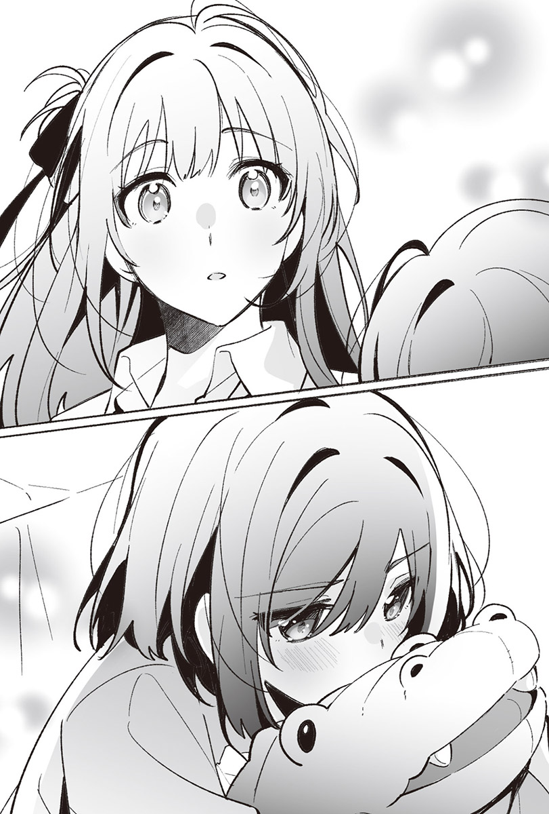她和我對上眼，又馬上瞥開視線。
她低著頭……
然後小聲地說。
「我才不會叫妳……葉月。」
嗯，勉勉強強。
雖然很難說這樣算不算數就是了。
當作她叫了我的名字應該也行吧。
早上幾乎爛到底的心情也變得好多了。
我從宮城手裡搶走鱷魚，握住她的手。這次她輕輕地回握了我的手。
非常感謝各位閱讀《我買下了與她的每週密會～以五千圓為藉口，共度兩人時光～》第三集。
本書是改寫、修正網路連載版小說的內容，並加上專為成書版撰寫的內容而正式出版的產物。
這次第三集也伴隨著U35老師繪製的宮城和仙台發售。
而在第三集發售前，發生了一件我想告訴各位的事。
《每週密會》在《這本輕小說真厲害！2024》中上榜了。而且還──
拿下了文庫部門第九名！新作部門第七名！
真的非常感謝支持我的各位！
多虧有各位，本作品才得以上榜。
也誠心感謝總是為本作品繪製精美插圖的U35老師、責任編輯，以及在各方面協助本作品出版的大家。
但我完全沒想到能進入十名內，所以非常驚訝。儘管因為太過高興而吃了許多美食，導致儲蓄的脂肪有了長足進展，不過今年拜《每週密會》所賜，我獲得滿滿的幸福。
那麼，幸福的其中之一──
本作品的宣傳影片配合第二集發售一併公開（註：此指日本的出版狀況），宮城和仙台有了聲音。
這也是一件令我非常幸福＆驚訝的事。雖然想著要是哪天她們兩人能有聲音就好了，卻萬萬沒想到這麼快就能實現心願……而我提出的許多希望，在腳本的台詞上也得到採納，讓我更是加倍感到幸福！
況且沒想到居然能請到Lynn小姐飾演宮城、市ノ瀨加那小姐飾演仙台。關於宮城的聲音，我以個人希望的形式，把包含Lynn小姐的幾位聲優姓名告訴責任編輯，在人選正式定案之前都過著緊張期待的日子，結果成功地請到Lynn小姐演出我理想中的宮城。至於仙台的聲音，雖然同樣提出了希望的人選，但她的聲音在我心中並沒有明確的形象，不過這次請到市ノ瀨小姐，配出了我覺得「這就是仙台！」的聲音，讓人非常高興。
真的很感謝Lynn小姐、市ノ瀨小姐，宮城與仙台的聲音都與我心中的形象一致，耳朵實在太幸福了。由於實在太適合，要是還有機會再聽到兩人的配音就好了。
在第三集發售前還發生了許多事情，不過先讓我稍微提一下為成書版增寫的幕間和番外篇（接下來將會提及故事內容，還沒看的人請先跳過這段）。
番外篇〈那不適合仙台同學〉是我原本就想找機會描寫，買下項鍊時的宮城。因為可以了解到那條項鍊是基於怎樣的經過才被她買下的，要是大家能感受到她這個人有多麻煩就好了。幕間〈有宮城在的房間〉則是第五話〈仙台同學很任性〉的仙台視角，能夠多少理解在網路版很少觸及的仙台家庭環境。
寫著寫著，似乎也累積到合適的頁數。
雖然已經到了尾聲，但我想再次道謝──閱讀第三集的各位、在網路上鼓勵及支持我的大家、U35老師、責任編輯、在各方面協助本作品出版的人士們，真的非常非常地感謝你們。另外還要感謝好友N，謝謝你每次都來幫我！
那麼，希望能在第四集的後記與各位再見！
羽田宇佐
當時我覺得那很適合仙台同學。
然而經過了一段時間，現在我不知道。
受託採買校慶物資的那天，在購物中心看到的項鍊奪走了我一部分的記憶容量，直到今天仍未消散。明明如此，我卻無法想像仙台同學戴上那條項鍊的模樣。
沒有其他人在的房間裡，我趴在放著作業的桌上。
想把那條項鍊趕出腦海裡。
區區一條項鍊，居然盤據在腦海一隅，實在太囂張了。平常明明會忘記，但在念書的空檔或是睡前又會重新復甦，簡直就跟殭屍一樣惡劣。
──銀色的鏈條下垂著小小墜飾的項鍊。
那是當我們完成跑腿的任務，提著採買到的東西移動之際看到的……正確來說是闖進了我的眼裡。擺著那東西的是不適合我的雜貨櫃位，平常只會經過，根本不會踏進去，然而那天不同，我在平常總是會直接通過的櫃位前停下腳步。
我不認為那是命運般的邂逅，眼睛卻無法離開有著月亮造型的那東西，將它和仙台同學連結在一塊。
感覺很適合她。
而在這種愚蠢的想法一下浮現一下消失的期間，校慶結束了，也不知道那條項鍊是否還在店裡，可是大腦不時會重新播放這條項鍊的影像，拒絕從記憶中消除它的存在。
要從記憶中消除這條項鍊的方法，大概只有一個。
──店裡沒有。
簡單來說，只要確認「項鍊已經賣出去了」的事實就好，因為沒有的東西我也買不到，這樣便能讓這條項鍊從記憶中消失。
我抬起頭，闔上課本，拿起放在桌上的手機。
距離開始寫作業還不到一個小時。
現在仍來得及。
購物中心還沒打烊。
我今天沒叫仙台同學過來，所以有時間，作業等回來再寫也來得及。只是要去店裡確認那條項鍊已經不在了而已，根本小事一樁。
沒錯，那條項鍊絕對已經賣出去了。
距離我們採買準備校慶用的東西那天，已經過了好一段時間，它不可能還在架上。照理說確認已經沒賣的東西毫無意義，但對我來說這件事很重要，所以跑這趟是有意義的。
總比心思一直被沒有的東西給奪走來得好，一旦沒有，我的心情就會舒暢許多。假使還有在賣，到時候再想該怎麼辦就好了。不管結果如何，都比心思受困於在已經結束的校慶前就看到的東西要好。
拉開窗簾，窗外的天色逐漸轉暗，我穿上針織外套。
要是有什麼狀況就麻煩了，所以我還是把錢包放進包包裡，踏出家門。
雖然這時間去購物中心算是有點晚，我仍慢慢地走著。
急著趕去也沒意義。
只是要確認那條項鍊是不是賣出去了，那對我來說並非必需品，對仙台同學來說也不是，根本沒必要著急。
我走在微暗的街上，和去採買校慶物資時一樣踏進了購物中心，朝那條項鍊所在的櫃位前進。
我以慢得不自然的速度一步步地走著，逐漸接近，前往項鍊的位置。
「……太奇怪了吧？」
項鍊得賣出去才行。
不該有機會買下才對，但不知為何在那裡。
不該浮現的話語浮現。
怎麼辦？
本來沒打算猶豫的，現在卻陷入猶豫。
錢包裡有足夠買下項鍊的錢。
明明想說只要沒有就能死心，讓心情舒暢一點，卻冒出既然還在賣，買下來或許也不錯的思緒──這是有原因的，因為要是沒有買就回去，我又會回到不斷想著這條項鍊的日子當中。
這種事情不會一再發生。
由我買下讓仙台同學戴的飾品這種事，這次恐怕就是最後一次。
這是往後絕不會再發生的事，所以就容許這一次好像也可以，況且要不要把買下的東西交給仙台同學是另一回事，即使買了，也沒人規定一定要送給誰，我留著自己用也沒關係。
我朝項鍊伸出手，又馬上縮了回來。
輕輕呼出一口氣。
並非因為這個適合她才買的。
如果是她，不管戴什麼一定都很適合，便宜的飾品看起來也會變得很高級，就連我戴起來很俗氣的東西，在她身上也會很好看才對。
既然是要給她這樣的人，款式根本不重要。
買這條項鍊，只是要用來當成釐清彼此關係的道具。
最近的仙台同學太得意忘形了。
在學校把我叫出去，吻了我。
不打算遵守規則。
不僅如此，還一副不守規則根本理所當然的態度。儘管有很大的原因是暑假讓規則變得曖昧不清，但距離那件事都過不只一個月了，我們應該回到正軌上。
我要用名為項鍊的鎖鏈束縛她，讓她知道誰才是下「命令」的一方。她最好回想起來，我們要共度時光必須有五千圓。
有形又可以一直戴在身上的項鍊，最適合拿來當成這種道具。
雖然不像耳環那樣可以在身上留下痕跡，卻能束縛她直到畢業典禮那天，而且只要買了，我就不用再回去過著成天掛念項鍊的日子。
我拿起那條在銀色鏈條下垂掛著小小墜飾的項鍊。
店裡有許多可愛或漂亮的東西，很難走去結帳。
要是舞香跟亞美在這裡就好了，然而看到我買了平常不會戴的飾品，一定會激起她們的好奇心，抓著我追根究柢地問個清楚。
沒事的。
只要付錢就能買了，跟買泡麵沒什麼不同。我鼓起勇氣踏出腳步，拿著項鍊到收銀台前，明明想早點離開這裡，卻在店員問起要不要包裝這種無關緊要的小事時猶豫了。這不是禮物，不過要給她的話，除了當成禮物贈送之外，好像也沒有其他選擇。結果我還是選了緞帶跟包裝紙，付了錢。
走出那間店，踏出購物中心，我來到街上。
微暗的天空已經完全抹上一片漆黑，路燈照亮了人行道。
我慢吞吞地走在先前緩緩走來的路上。
天還亮著的時候沒什麼感覺，不過有些涼意。
夏天結束，時值秋日。
即使白天仍會讓人察覺到夏天依依不捨的餘韻，但晚上早已完全感受不到半點夏天的氣息。季節會轉變，夏天結束後是秋天，再來是冬天。待冬天到來，有畢業典禮的春天也會隨之而至。人們無法一直生活在秋天的世界裡。
原本就已經很慢的步伐更慢了。
我剛買下的小盒子內容物，預定成為聯繫我們到畢業典禮為止的存在。
除此之外什麼也不是。
等畢業典禮到來，我們就會分道揚鑣，不再有交集。
要去不同的大學就是這麼一回事，我們的日子將不再重疊，彼此的身影逐漸變得模糊不清，記憶也會出現缺漏。
這是理所當然的事，我也認為未來就該是這樣。
我會去念大學，也會念書，卻不覺得有念書就能和仙台同學考上同一所大學。真要說起來，我原本就沒想過要跟她上同一所大學。
再說我往後也不想在與她的記憶上貼標籤，未來不該改變。
遵守已經決定好的事。
項鍊只是用來補強五千圓的東西。
這樣就行了。
我們之間這樣正好。
然而即使有理由買，也沒有理由把買回來的東西交給她。
仙台同學是從二年級的七月開始來我房間的，即使時間來到三年級的校慶，我依舊不清楚感覺能當成送項鍊理由的生日是什麼時候。
我的腳慢慢地、慢慢地往前邁進。
裡頭明明沒裝什麼重物，包包卻很沉重。
沒買就好了。
忍不住想嘆氣。
我大力甩動既輕且沉重的包包。
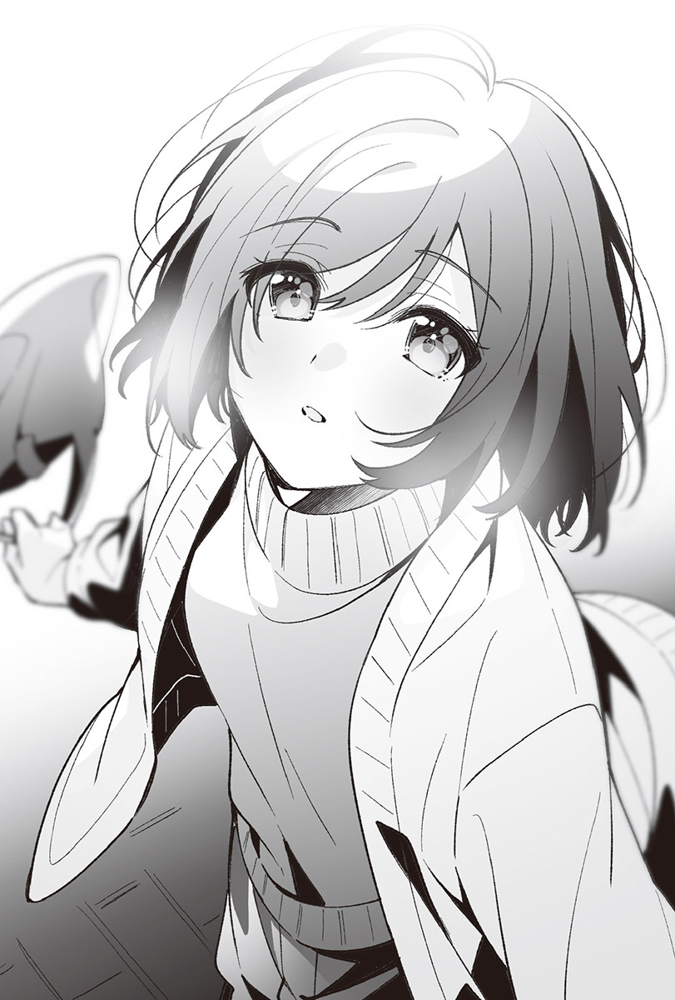 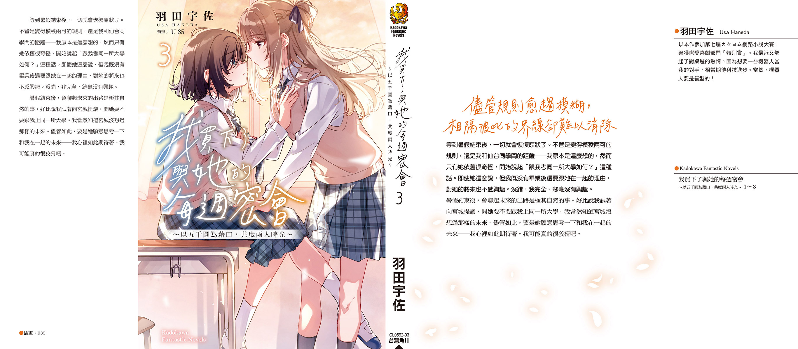「呼」地吐出一口氣，我摸了一下依然扣得好好的、襯衫從上面數來的第二顆釦子。
但也只有摸而已，馬上就放下了手。
我沒辦法解開平常早就解開了的釦子。
我很介意。
不介意還比較奇怪。
宮城看我看得太頻繁了。
她本人或許沒意識到，但她的視線緊緊纏繞在我的襯衫釦子上。
「宮城，我說啊……」
我看向不至於到緊盯著我不放，卻不斷將視線投向我，令我無法不在意的房間主人。
「仙台同學妳很吵耶。」
暑假結束，進入九月之後，這是我第二次放學後在這個房間裡和宮城碰面。我們也差不多該恢復到原有的樣子了──我是這樣想的。可是宮城看著我的眼神，只讓我覺得到了暑假結束後的現在，她還在介意暑假時發生的事。
「我什麼都還沒說耶。我只是想問妳現在在做什麼而已。」
我坐在平放著作業以及參考書的桌子前，開口問坐在對面的宮城。
她今天也沒有坐在我旁邊。
我認為這也是我們沒辦法變得像以前一樣的原因之一。
「……仙台同學，妳的眼睛有睜開嗎？」
「我看起來像是閉著眼睛嗎？」
「既然有睜開，妳用看的就知道我在做什麼了吧？」
對面傳來她不高興的聲音，原先投向我的視線挪往別處，改成橡皮擦飛了過來。我撿起掉在地上的橡皮擦，放回桌上。
「應該是在寫作業吧。」
「既然知道就不要問我。」
「妳不會有明知道但還是想問的時候嗎？」
「沒有。」
隨著冷漠的回應，宮城把筆在桌上，然後輕輕嘆了口氣，翻了一頁參考書。
「仙台同學妳是怎樣？」
不肯坐到我旁邊的宮城用比剛才更冷淡的聲音說道。
「怎樣是怎樣？」
「妳有什麼想說的就說啊。」
「宮城才是，妳沒有什麼想跟我說的話嗎？」
「沒有。」
對於她今天第二次的「沒有」，我回了句：「我就知道妳會這樣說。」接著像宮城一樣翻了頁參考書，解開了一個問題。
雖然不到勒著脖子的程度，但我覺得很難呼吸。
我很在意在這個房間裡卻沒有解開第二顆釦子的自己。
手下意識地移動。
感覺那隻手又想去摸沒辦法解開的第二顆釦子，我用力握緊拳頭。
原本待起來應該很舒適的房間，待起來卻很不自在。
這個房間離「一如往常」的模樣感覺很近，卻又很遠。
暑假似乎不肯輕易地變成過去，仍持續待在這個房間裡。要是暑假更短一點，我們或許就能度過一個一如往常的今天了。
「喂，宮城。妳來寫這個啦。」
我想轉變一下心情，把我的考試題庫放在宮城的面前。
「我在寫作業耶。」
「又沒關係，作業可以等一下再寫啊。」
「這種事情我會自己決定，仙台同學妳不要管我。」
「那休息一下好了。」
宮城瞬間露出了驚訝的表情，接著立刻垂下視線看著考試題庫。看到她的反應，我才意識到自己說錯話了。「休息」是會讓我們回想起暑假的詞彙，不該說出口。
「我要寫考試題庫。」
宮城低聲說道。
太在意不是好事。
我重新坐好，挺直了背脊。
好安靜。
不對，正確來說是有一些聲響。
可是我覺得很安靜。
仙台同學到剛才還一直叫我幫她貼退熱貼，說這種平常不會說的話：「宮城要是感冒了，我會去照顧妳。」現在卻睡得很熟。
以時間來看，大概過了十五或二十分鐘吧。
說不定更久，總之在仙台同學睡著之後已經過了一段時間。而我的手依舊被仙台同學給當成了人質，不知何時才會被釋放。
簡單來說，就是我和仙台同學牽著手。
──靜不下心來。
來看看她是無所謂，但我沒料到事情會演變成這樣。我既不是為了和仙台同學接吻才來她房間，也不是為了聽她耍任性而來。當然，也不是來跟她牽手的。
就一點點。
只是有一點點擔心她。而這份擔心也已經消失了，所以我大可打道回府，然而睡著的仙台同學一直握著我的手，讓我沒辦法回去。
「……仙台同學。」
我仍舊坐在地板上，試著小聲地呼喚她。
等了也沒有回應。
突然把人丟在沉默的空間裡置之不理，未免太不負責任。早知道會這樣，我就不聽她無聊的任性要求了。
我輕輕拉動棉被。
她果然還是沒有反應。
我輕輕握緊她的手。
她沒有回握住我，也沒有要醒來的樣子。
我跪著挺直身體，看向床上。
仙台同學在睡覺。
我碰了碰退熱貼，感覺到似乎還算冰涼，又不是真的很冰涼的尷尬溫度。雖然幫她換一片新的好像比較好，可是要換的話，她好像會醒過來，這樣吵醒她也有點可憐。一想到她感冒了，我的良心便痛得沒辦法採取行動。
這樣我根本就不知道該怎麼辦才好嘛。
我用力握緊我們牽著的手，仙台同學的身體抖了一下。我反射性地想抽手，她的手卻不肯放開，不僅如此，還緊緊地握住了我。
我和仙台同學無法分離。
手好熱。
流出了手汗。
我開始在意起本來刻意不去在意的事。
硬是扳開她一直握著我的手。
仙台同學的嘴巴動了動。
耳邊傳來了一些模模糊糊、不成語句的聲音。
我雖然跟仙台同學說：「妳不睡，那我就要回去了。」卻沒說在她睡著之後，我也會一直留在這裡。
所以我可以回去。
應該說我得回去了。
該給她的東西也給她了，我在這房間裡已經沒有什麼能做的事情。我從包包裡拿出筆和筆記本。撕下一張筆記本的內頁，寫上「給仙台同學」之後，手便停了下來，把撕下的那張紙揉成一團，跟筆還有筆記本一起收進包包裡。
我不需要留字條給她。
她醒來之後發現我不在，就會知道我回去了。
我站起來打算離開房間，又轉身回去。
悄悄走到床邊，撕下仙台同學頭上的退熱貼。然後從盒子裡拿出新的退熱貼，輕輕貼在她的額頭上。
「我要回去了。」
我小聲地對她說完後，仙台同學含糊不清地說了些什麼。
我一邊聽老師上課，一邊摸著領帶上的結。
把領結繫得比平常更緊，又立刻拉鬆。
領帶的款式只有一種，男生女生都一樣，是學校指定的制服的一部分，我們有義務要穿戴，領帶就是這樣的柬西，幾乎所有學生都乖乖地在脖子上繫著同樣的領帶。
所以我在上高中之後，也一直什麼都沒多想地繫著領帶。
可是現在不一樣。
這條照理說跟羽美奈和麻理子同款的領帶，從制服的一部分，只是基於義務才穿戴的東西，變成了穿戴在身上就會令人在意的東西。
因為這是宮城的領帶。
就只是因為這樣，讓領帶有了超越制服的意義。
我又摸了在宮城的命令下，和她交換的領帶上的結。摸起來跟平常一樣，毫無特別之處，就是一條普通的領帶。
用手上的筆尾端戳了戳額頭，仔細聽著老師的聲音。畢竟不管是不是考生，最好都要認真上課。我把黑板上的字母抄寫在筆記本上。
宮城的英文不太好呢。
彷彿突然打斷了教室裡老師的說話聲，去年的宮城浮現在我腦海中。
她看起來不像有認真在上英文課的樣子。
可是今年──-
因為是考生了，她應該有認真在上課吧。
我想大概、一定是這樣。
因為我沒辦法親眼看到，只能用猜想的。
我真的是……為什麼會去想這些？
都怪我們交換了領帶，宮城在我腦中占據的部分又變得更大了，上課途中也滿腦子都是雜念，無法專心。害我這個考生遇到這種事，宮城這個人實在很過分。
她也沒說想要交換的理由。
雖然她的行動充滿謎團是一如往常的事，我也已經習慣了，但是間接妨礙到我念書可不好玩。而且我還不知道宮城到底有沒有把跟我交換的領帶繫在身上。
交換應該有什麼理由才對，所以宮城應該要說清楚，也該讓我知道她有沒有繫上交換後的領帶。
宮城說連襯衫都要交換，結果只有我脫了襯衫，她自己卻從衣櫃裡拿出襯衫來。既然她做了這麼奸詐的事，我希望她至少拿出這點誠意來。
到現在還是不能接受只有我脫了襯衫這件事。
居然欺騙了相信她會當場脫掉襯衫的我，怎麼可以有這種事？
我有很多話想對宮城說，卻一直沒能告訴她。
在那之後就沒有和她碰面。
也沒辦法穿上她的襯衫。
襯衫和領帶一樣，是屬於制服的一部分，不管是穿誰的，都沒人看得出來，可是穿上襯衫，宮城就太接近我了。
我拉扯只是區區布片，卻強烈地彰顯出存在感的領帶。
我的東西該回到我手裡，宮城的東西也該回到宮城手裡。
這樣一直沒辦法專心上課下去，實在很困擾。
我用指尖用力按壓太陽穴，輕輕嘆了一口氣。
【中日对照版】
录入：Raindrop213
针对中日一对一的排版会进行少部分内容的增改，修改和缺漏部分会附带注释【+】，有需要改进的请联系本人
【原EPUB】
輕書架×天使動漫錄入組
作者：羽田宇佐
插畫：U35
譯者：Demi
圖源：公子夜殤
特典：初奈大小姐的僕從
錄入：kid
天使動漫：www.tsdm39.com
輕書架：https://www.lightnovel.life
僅供個人學習交流使用，禁作商業用途
下載後請在24小時內刪除，天使動漫與輕書架不負擔任何責任
請尊重翻譯、掃圖、錄入、校對的辛勤勞動，轉載請保留資訊